| 織田信奈の野望10 | |
| 春日みかげ | |
| SBクリエイティブ株式会社 (2013) | |

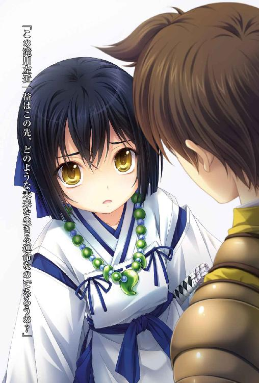
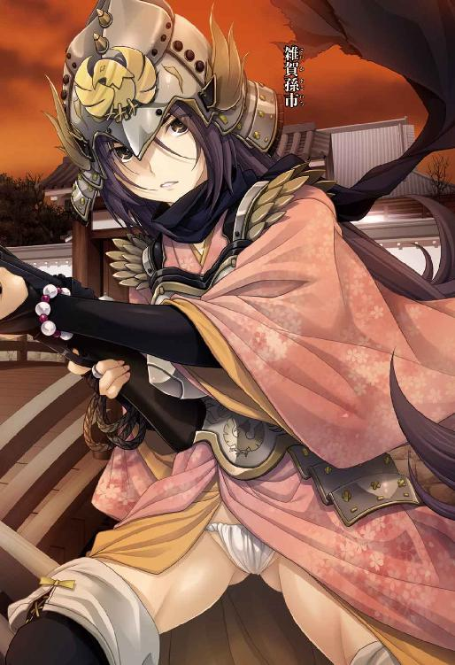
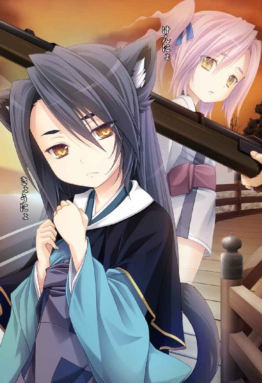
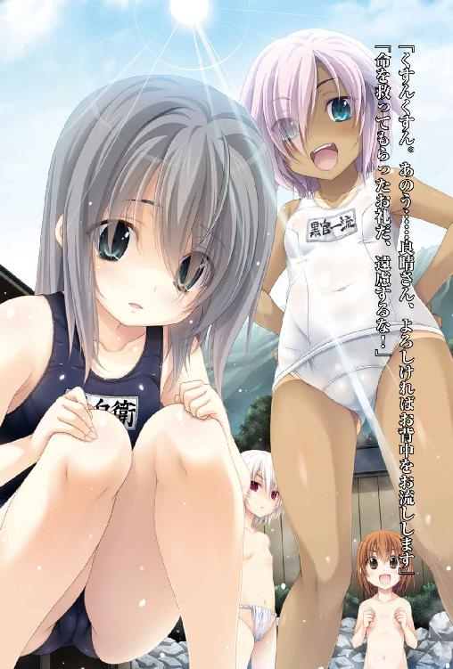
織田信奈の野望１０
春日みかげ

本書に掲載されているコンテンツの著作権等の知的財産権およびその他すべての権利は、ソフトバンク クリエイティブ株式会社または正当な権利を有する第三者に帰属します。
本書の内容を権利者の許諾なく複製・複写・翻案・放送・出版・データ配信（送信可能化を含む）などすることはできません。
カバー・口絵 本文イラスト
みやま零
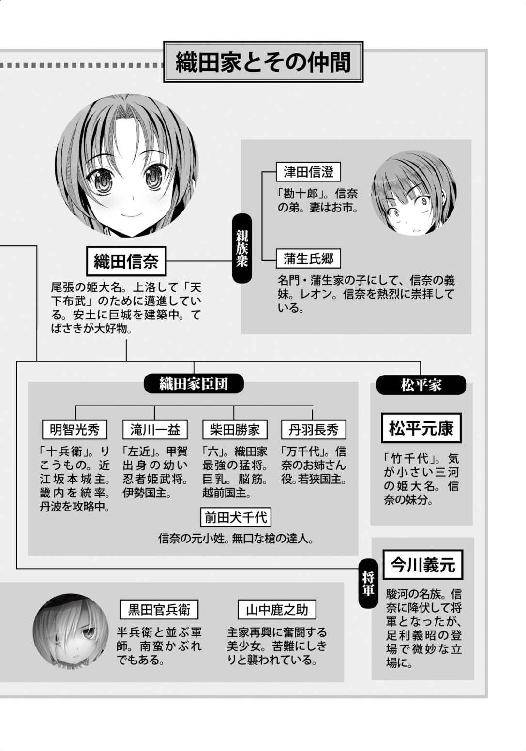
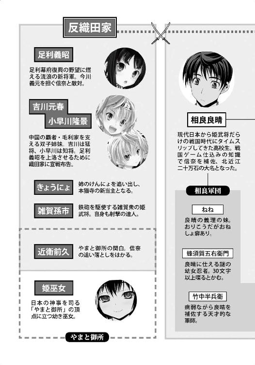
巻ノ一 織田家の休日
「ふいー。有馬の湯は最高だ。生き返るなあ～」
われらが相良良晴は今、有馬の町並みと六甲山を一望できる露天温泉に浸かっている。
有馬は、摂津六甲山の裏側にある風光明媚な温泉街。
有馬の湯は万病に効くと知った信奈が、この有馬でもっとも見晴らしのいい高台にあった温泉を買い取り、織田軍の負傷兵のための療養所として改築したのだ。
今、六甲山を見下ろしながら「極楽極楽」と快感にむせんでいる相良良晴は、良晴軍団の軍師・竹中半兵衛と黒田官兵衛を有馬へと連れて来たばかり。
良晴はこのあとすぐ安土城へ出かけないといけないのだが、せっかくだから温泉で身を清めるつもりになったらしい。
「半兵衛と官兵衛も無事に有馬へ送り届けたし、いよいよ安土城で信奈と二人きりか。ききき緊張するなあ～」
織田家有力家臣の五本の指に数えられるまでに出世した良晴は、いよいよ自分の軍団を持ち、播磨で毛利軍と激闘を繰り広げてきた。
良晴自身はもちろん、仲間たちが次々と命の危機にさらされ、苦戦につぐ苦戦だった。
良晴は、毛利方の播磨の拠点である三木城を包囲しつつ、毛利の軍勢を相手に戦っていたが、織田軍の加勢が続々と播磨に到着したことで播磨戦線はいったん膠着した。
竹中半兵衛は病で体が弱っているし、黒田官兵衛は病とは無縁の元気者だがしばらく敵方の地下牢に幽閉されていたために足の筋が固まっている。
だから相良軍団の二大少女軍師は、ともに当面有馬の温泉で療養することになったのだ。
今は織田軍と毛利軍ともに一息ついている、中休みといったところだ。
半兵衛、官兵衛、山中鹿之助、三人とも生きのびてくれてほんとうによかったぜ、と良晴はひさびさに脱力モード。
有馬名物の「金泉」、すなわち赤っぽい褐色の湯に肩まで浸かってすっかり気を抜いていた。
しかし時は戦国、かの名将太田道灌も温泉でうっかり気を抜いた隙をつかれて暗殺されたという。
今、良晴が一人で浸かっている露天温泉へと、四人の影がいっせいに躍り出た！
「くすんくすん。あのう......良晴さん、よろしければお背中をお流しします」
なぜか紺色のスクール水着を着用している天才少女軍師、竹中半兵衛。
頬を真っ赤に染めて恥じらいながらも、命を救ってくれた良晴に感謝を捧げたくて温泉に乱入したらしい。
「命を救ってもらったお礼だ、遠慮するな！」
同じくスク水着用の南蛮科学軍師、シメオンこと黒田官兵衛。
スク水の胸のゼッケンに「黒官一流」と書いてあるのが哀しみを誘う。
「せせせ拙者はすくみずなど着ないでござる！」
スク水の着用を断固拒否したらしく、ふんどし姿の五右衛門。
「兄さま、待ちきれずに駆けつけて参りましたぞ！」
良晴の妹・ねね。
お子さまゆえに、ねねはスク水もふんどしも未着用であった。
つまり、裸であった。
裸んぼうなのであった。
川並衆の野郎どもがこの現場を目撃したら、無言で相良良晴を撲殺するであろう。
「って、お前ら？ どうして男湯に入ってくるんだよっ!? 待て！ だいたいそのスクール水着はなんだっ？」
「ふふふ。哀れだな相良良晴。このシメオンのかわいすぎる幼い裸を見たいというきみの野望は、文字通り水際で阻止されたわけだ」
「そんな野望ねーよ」
「きみには恩返しをしてあげたいが、きみのような露璃魂の病にかかった変態にわれら天下の両兵衛の穢れなき肌を見せるわけにはいかない。そこで」
「くすん。良晴さんの世界にあるという伝説のすくうる水着と寸分違わぬものを、官兵衛さんが突貫で作ったんです」
「ふふふ。シメオンは天才だからな。このスク水を着ていればわれらも恥ずかしくないし、相良良晴もサルにならなくて済むわけだ！」
「すくうる水着は肌にぴっちりと食いこんできて、これはこれでなんだか妙に恥ずかしいのですが。くすんくすん」
「そうかな。シメオンは戦闘力があがった気がするよ？」
「官兵衛さん、布が小さすぎます。白いお尻がちょっぴりはみだしていますよ。色黒じゃなくて日焼けだったんですね」
「最初からそう言っている！ 色黒じゃないっ！」
半兵衛と官兵衛、二人の天才軍師がスク水を着た姿できゃっきゃうふふ。
色白の半兵衛は紺色のスク水、日焼けした官兵衛はレアな白スク。
お互いの肌の色がスク水の生地の色と対照的で、清純可憐な半兵衛も元気あふれる官兵衛もスク水姿がよく似合うのだった。
「お、おう。そういうことだったのか。って、五右衛門！ 俺と混浴するならお前もちゃんとスク水を着ろよ！」
「ふんどしは忍者の魂でござる。未来伝来のすくみずなんぞまっぴらでごじゃる」
「ふんどしだけじゃ上半身を隠せないだろ！ 見えてる見えてる」
「相良氏は川並衆の野郎どもとは違い露璃魂ではないでちゅからな、ちぇっちゃのうちゅいむにぇなんじょにゃんともおもわにゅでごじゃろう」
「......悪かった。長台詞をしゃべろうとして無理すんじゃねえ。相変わらず三十文字が限界なんだな」
「う、うるちゃい！」
「いいから恥じらえ。せめて胸を隠せ！」
「おや、頬が赤いでござるな。相良氏も露璃魂の病を発病したのでごじゃるか？」
「俺さまとしたことが、戦国時代にスク水という唐突なシチュエーションに衝撃を受けてちょっと動揺している」
「ま、拙者はこれよりお湯に潜るでござるゆえ、お気になさらず」
「なんで潜るんだよ」
「せっかくの機会。水遁の術の修行でござる。にんにん」
五右衛門は褐色のお湯の中にどぶりと潜って、息をするための竹筒だけをお湯から伸ばした。
「おいおい......まあ五右衛門だし、いいか......」
「ところで官兵衛どの、ねねのすくみずはないのですか？」
「いきなり来られたから、きみのぶんは間に合わなかったんだよ」
「ねねさんだけ裸んぼうですみません。くすんくすん」
「まあ、わざわざ幼いねねにスク水を着せるのもかえって変態っぽいから、ねねは裸でいいんじゃね？」
「よくわかりませんがそうですな、兄さま！」
ねねはうれしそうにお湯に飛びこむと、良晴の膝の上に乗った。
こうして生きてねねと再会できるとは俺は果報者だあ、と思うと良晴は思わずほろりと来た。
「兄さま。きょうだい仲良く温泉とは、いいものですなー」
「そうだな。信奈の天下布武が実現したら、有馬でねねと温泉三昧の生活もいいな。俺ぁこの有馬がなんとなく気に入っちまった」
「おおー、温泉三昧！ よいですな、兄さま！」
良晴がねねの頭をなでながら、まったり癒やされていると──。
左右からスク水着用の半兵衛と官兵衛が同時に腕を絡めてきて、「洗います」「洗わせろ」と無邪気にくっついてきた。
「相良良晴、遠慮するな。このシメオンは受けた恩義はきっちりと仇で返す！」
「仇で返しちゃダメだろ？ こら、くっつくな二人とも！」
「くすんくすん。なぜ逃げるんですか。逃げないでください良晴さん」
「俺はろろろロリコンじゃねーけど、これはさすがに照れる！」
「ふむ。ほんもののサルのように顔を赤くしている。面白いな。くすぐってやろう半兵衛」
「それでは良晴さん、わき腹をくすぐらせていただきます。さわさわ」
「ひええええ、やめてくれええ！」
二人とも待ちたまえ、胸が俺の腕に当たっているから、とは言いだせない照れ屋さんの良晴であった。
「兄さま、これがいわゆるもてもてはぁれむというやつですな！ さすがは一国一城の主！ どちらの軍師どのでもよろしいので、早く赤ちゃんを産ませなさいませ！」
「ねね、俺と半兵衛官兵衛はそういうただれた関係じゃねーから！」
「ねねは、兄さまが早くお世継ぎを作られることをいつも祈っております。せっかく有馬に来たので林渓寺から梅干しをもらって参りましたぞ！」
「林渓寺の梅干し？」
「『はらみの梅』と呼ぶのですぞ。女の子がこれを食べて有馬の温泉に浸かったら、たちどころに赤ちゃんをはらめるそうですぞ！」
半兵衛が「くすんくすん。ぜひ一個......」と小さな声を漏らし、官兵衛が「なんだって？ 食べちゃったら、相良良晴の赤ちゃんをはらまされるのかっ？ そんなおそろしいものは処分するんだ！」と南蛮科学軍師らしからぬ怯えっぷりをみせた。
「お二人とも、はらみの梅を召しませですぞ！ 兄さま、さくっとお世継ぎをお作りなさいませ。いっそ、軍師お二人まとめてご懐妊！」
「待てねね。俺をどんな鬼畜にしたいんだよ、お前は」
「くすんくすん。あの、良晴さん？ 顔がこわばっていますよ。すくうる水着を着たわたしを見ているうちにむしょうにいぢめたくなったりしないですよね？」
「半兵衛ちゃん。いちいち目を伏せてそういう言葉をつぶやくから、いぢめっ子が集まってくるんだぜ？」
「そうとも！ うおおおお。いぢめてやる、いぢめてやるとも！ 足の裏をくすぐってやる！」
「官兵衛さん、やめてください。くすんくすん」
「うおおおおー！」
「くすくす。やめてください、やめてください。くすぐったいです」
「お二人の軍師どのは、実の姉妹のように仲良しですなー」
「あいだに挟まっている俺の心配もしてくれ、ねね！ ダメだこのままでは俺の心の中の川並衆魂が目覚める、目覚めてしまう！」
でもいつの間にこの二人、こんなに仲良くなったのだろうか？ と良晴は半兵衛と官兵衛の押しくらまんじゅうに潰されながら首をひねった。
「仲良しなのはいいことだけど、大の男を挟んでこういうフリーダムなきゃっきゃうふふはだね......むぎゅ!?」
「わっ？ どこに顔を当ててるんだよ相良良晴。スク水で防衛してもまだサルになるのか！」
「官兵衛、お前のお尻のほうが俺の顔面に飛んできたんだろうが。へくしゅっ」
「ひゃああああ！ へんなところに息をかけるなっ！」
「くすんくすん。官兵衛さんに負けてはいられません。わたしももっと良晴さんにくっついて......ああ、やっぱり恥ずかしくてこれ以上は無理です......」
「おおー兄さま。これがいわゆる、しゅちにくりんのもてもてはぁれむですな！」
「そうじゃない、俺が理想とするハーレムとは女の子の年齢層が合わない！」
『ごぼごぼ。ずいぶんと楽しそうですな相良氏。ここがモテモテ坂のてっぺんでちゅかな？ こどもばかりでちゅが』
竹筒越しに、五右衛門の不機嫌そうな声が響いてきた。
「いやあ、面目ない。っていうか、のぼせるぜ五右衛門。いつまで潜ってるんだよ」
「愛らしい乙女四人と平然と混浴するとは、堂に入った変態だにゅ。川並衆に見つかったら切り刻まれるにゅ」
半兵衛の髪の中に隠れている妙な小動物、人工精霊すねこすりが良晴をつぶらな瞳で見つめている。
「うるせー。焼いて食うぞ」
「すねこすりを食べないで、食べないで」
すねこすりは焼き精霊にされたくないらしく、半兵衛の髪の中にまた潜ってしまった。
「くすんくすん。すねこすりさんをいぢめちゃダメです、良晴さん」
「でもさ、どうして有馬の湯って赤いんだろう？ わき出してくる時は透きとおっているのに、湯船に流れてきたお湯はなぜか赤く染まる。不思議だなあ」
「ぺろぺろ。この赤いお湯をなめると塩っ辛くて苦いですな、兄さま」
「有馬の湯にも種類があります。この赤い湯は金泉と言うんですが、金泉のお湯の中にはたくさんの鉄が入っているんですよ。この鉄が病に効くそうです」
「ははあなるほど、血が赤いのと同じ理屈か。半兵衛はなんでも知ってるなあ」
「このシメオンだってそれくらい知っているぞ！」
「ふふ。蘭奢待の効能はすばらしいです。一月ほどこの有馬で静養させていただければ、もういちど戦場に戻って働けると思います」
「無理しちゃ元も子もないぜ半兵衛ちゃん。もっとゆっくり養生してなきゃダメだ」
「......はい」
美濃が生んだ幼き天才軍師・竹中半兵衛は、播磨の三木城包囲戦の最中に病で命を失う運命だったが、いくつもの奇跡が重なった結果、こうして有馬の温泉に浸かって静かに微笑んでいる。
良晴や官兵衛、松永弾正たち多くの仲間が、半兵衛を死の運命から救うために奔走した結果だった。
「半兵衛は肌が透きとおるように白いから、有馬の赤い湯に入るといよいよその白さが際立って見えるなあ......はっ？ いかんいかん。俺はいつからこんな台詞を独白するようになってしまったんだ？」
「くすんくすん。ぜんぶ口に出してしゃべっていますよ良晴さん」
「俺はたぶん疲れているんだよ。前野某から教わったんだけどさ。男って生き物は、戦に疲れはてると神や仏にさえ絶望して、最後は無垢な少女に魂の救いを求めるそうだ。それが男という悲しき生き物の本能なんだってさ」
「そうなのですな。遠慮せずねねに救いを求めなされませ、兄さま」
『ぶるぶる。それは川並衆の野郎どもだけの話でござるよ』
「ふふ。戦場は死と隣り合わせの厳しい世界ですから、なんとなくわかる気もします。神仏は人の営みをただ天上から見ているだけで、手をさしのべてはくれませんからね」
「そうだなあ」
「でも、天は時折蘭奢待のような信じがたいものをわたしたちにもたらしてくれます」
ばかばかしい。蘭奢待が病に効くのもきちんとした理屈があるんだよ、いずれ分析してやると官兵衛が鼻で笑った。
「半兵衛、きみはもう時代遅れの軍師だからとうぶん有馬温泉で休んでいればいい。これからはこのシメオンこと黒田官兵衛の時代だ！ このすきに『黒官一流』の旗印を世界中に翻してやる！」
「うっ......かわいそうだな官兵衛。半兵衛が助かったばっかりに、お前はずーっと二流軍師だ......俺が悪かった......」
「こらっ！ 相良良晴！ 勝手な理由で泣くなっ！」
「未来の世界で『二流の人』なんて失礼な題名の読み物の主役にされたり、あげく『二流の人』の歌までカラオケで歌われたりするんだな。一生ツキがなかったと～♪ なーんてな。ううう哀れだ」
「よくわかりませんがとにかく哀れですな、兄さま！」
「ああ、哀れだ」
「うるさ～いっ！ 未来語の連発はともかく、『二流』という言葉はやめろっ！ その言葉を聞いただけでシメオンは心の臓がばくばくと高鳴って呼吸が荒くなるっ！」
「ええっ？ 官兵衛さん、それは恋かもしれません。ま、まさか官兵衛さんは良晴さんのことを？」
「ぜんぜん違うっ！」
「なんと、官兵衛どのは兄さまの赤ちゃんを産みたがっておられるのですな！ もてもてはぁれむですな、兄さま！」
「違う違う。しかし官兵衛はてっきり色黒っ子かと思っていたけど、スク水からはみだしたお尻は白いよな。ほんとに日焼けだったんだなあ」
「こら、誰のお尻が白いだって？ 少しは恥じらえ相良良晴！」
「なんで？ だってお前子供だし」
「半兵衛に対する態度と違いすぎる！」
「少しは落ち着けよ。播磨名物のいかなごを食べてカルシウムを摂れ。そんなあわてんぼうじゃ一流の軍師にはなれないぜ？」
「死ね～！ シムじゃなくて死ね～！」
長い長い苦戦から解放された良晴たちの今日の騒ぎっぷりは、突き抜けていた。
しかし、まだ戦乱の世が終わったわけではない。
織田家は畿内の中心部を平定しつつあるが、中国の毛利、甲斐の武田信玄、越後の上杉謙信、関東の北条氏康──強敵はまだまだ多い。
播磨では相良軍団の副将・山中鹿之助と、援軍を率いる明智光秀が、毛利方の拠点・三木城を包囲し続けている。しかしすぐ西に毛利の大軍勢が陣を張っていて、両軍はにらみ合いに入ったまま動けなくなっていた。
織田方は、この膠着を打開するために次の一手を打たなければならない。
半兵衛が、小さな声でつぶやいた。
「前鬼さん。再び与えられたこの命は、たいせつに使わせていただきます。混乱に満ちたこの国を変えるために、信奈さまと良晴さんの夢のために」
「やい半兵衛。そこはこのシメオンの野望のために、と言い換えるんだ」
「良晴さん。播磨戦線で膠着している毛利家との戦に、これから海戦が加わります」
「海戦か」
「毛利には瀬戸内の海を支配する最強の海賊、村上水軍が味方しています。織田家にも水軍はありますが、規模も戦歴も違いますし、あちらは瀬戸内の潮の流れや海の底の地形などを熟知しています。手強い相手です」
官兵衛が、ふと眉をひそめた。
「村上水軍に大坂湾の制海権を握られたら、鉄砲の火薬に使う硝石が堺に入って来なくなるぞ」
「はい。毛利家の事実上の宰相である小早川隆景さんは、三木城への海路からの補給と、堺の封鎖を狙って村上水軍を動かします。堺へ連なる船の道を断たれれば、いずれ播磨の前線に火薬を補給できなくなります」
「あいつは知恵者なだけでなく、そそっかしいシメオンと違って慎重で粘り腰だ。味方になればこの上なく頼りになるが、敵に回すとやっかいな相手だ」
「信奈さまの政権を認めない足利将軍さまが毛利家に押しかけてきてしまった以上、律儀な毛利家は足利将軍さまにお味方するしかなかったのでしょう。くすんくすん」
「村上水軍はこんどもまた、毛利家に味方するかな？」
「すると思います、官兵衛さん」
「誰にも従わない海賊の王にしては、村上武吉は毛利には甘いね」
「厳島の戦いで毛利家に味方して以来、村上水軍は独立を保ちながらもなにかと毛利家に手を貸してきました。わたしたち部外者にはわからない絆で結ばれているのかもしれませんね」
織田軍は今、各地に戦線を抱えているが、もっかのところ最大の敵と言えるのが播磨で睨み合っている毛利家の軍勢だった。
毛利家の山陽道方面軍を指揮する小早川隆景は、子供将軍足利義昭を上洛させるために播磨を抜こうとしている。
「織田信奈の夢は日ノ本を統一して大海原に打ってでることだ。その夢のためにも、これからの織田家には桁外れの水軍力が必要になる。陸ばかりに目を向けてきたこれまでの大名家が持ち得なかった規模の水軍力が」
「日ノ本は四方を海に囲まれた島国なのに、武士たちは猫の額のように狭い陸地をひたすらに奪いあうばかりで、水軍や海洋貿易を軽視し、海のことは海賊さんにお任せという形で放置してきましたから。くすんくすん」
「織田信奈は陸と海とをひとつにつなげて、この国のかたちを根こそぎ変えようとしているのさ」
天下の二大軍師の会話は、なかなかに難しい。
「官兵衛さん、わたしにはもう一つ懸念があるんです。毛利家に押しかけている名ばかりの子供将軍とは言え、足利将軍が復活したとなると」
「シム」
半兵衛と官兵衛は、阿吽の呼吸、目と目で見つめあうだけでお互いの意思を疎通できるらしい。
「南蛮蹴鞠大会を経て一年間の和睦を約定したはずの本猫寺も、足利将軍側に味方して織田家を再び敵とするかもしれない」
なんだって？ まさか？ とご陽気な良晴は取り合わなかった。
「官兵衛は南蛮蹴鞠大会に参加していないから、そんなことを考えるんだよ」
「うわああん！ この出遅れてきた播磨の田舎者め、と言いたいのか！」
「違う違う。いいか？ 俺たち織田家と本猫寺そして雑賀衆は、熱い蹴鞠の戦いを通じて『眼鏡眼鏡の三河漫才』という固い絆で結ばれたんだぜ？ とりわけ孫市姉さんと俺なんてそれはもう昵懇の仲なんだぜ」
「むっ。良晴さんはあちこちで女の子と縁ばかり作って、女難の相で困った件に懲りていませんね」
「そ、そ、そういう縁じゃないよ半兵衛ちゃん？ 今日はめずらしくケンがない？」
「多少なりとも余計な欲が出てきたのは元気になった証拠ですから、いいんです」
「欲？」
だが、官兵衛は首を横に振った。
「きみは実に楽天的だなあ。蹴鞠での決着に納得している者ばかりじゃないと思うよ。蹴鞠では負けたが合戦ならば勝てたんだ、とね」
「そんな往生際が悪い負けず嫌いは官兵衛くらいじゃねえか？」
「だまれっ」
半兵衛が、意を決したように口を開いた。
「良晴さん。足利将軍家は日ノ本を百年の戦乱に叩き落とした『応仁の乱』の発端であり、この戦乱の世と古き権威の象徴です。信奈さまがこの国を生まれ変わらせるためには、本家の足利将軍家と対決し、これを決定的に乗り越えなければならないのです」
「ああ、それはそうだな」
「人の世はそう容易には変えられません。なにかを改めようとすれば、必ず揺り戻しが起きます。本猫寺にはまだ、織田家との共存路線をよしとしない方もおられるはずです」
「けんにょが抑えてくれるさ。あいつはにょほにょほ笑うから頭が悪そうに見えるが、ああみえて実は頭いいし視野も広いんだ。だいじょうぶ、だいじょうぶ」
「信奈さまは、人々に新たな世の形を見せなければなりません。にゃんこう宗門徒たちは、本猫寺のために死ねば猫極楽へ行けると信じています。キリシタンも殉教すれば天国へ行けると信じているそうです。両者は、現世に絶望した人々があの世に希望を見いだすための教えだという点でよく似ています。信奈さまは人々に、現世で生きるための新たな希望を与えなければならないのです」
「漫才と南蛮蹴鞠大会だけでは、まだ足りないかな？」
「あれらの新しい文化は、真の平和が来たあかつきにはおおいに人々の心を癒やすでしょう。ですが今は戦乱の世です、『現世は変わる、乱世は終わる』という明らかなしるしを示さなければなりません」
「できるだろうか、半兵衛ちゃん？」
「難しいですが、信奈さまでなければできないことです。それに──」
「それに？」
「越後の毘沙門天・上杉謙信さまが、信奈さまは日ノ本の秩序を壊す第六天魔王だという結論に傾きつつあります。仇敵の武田信玄さまを放置してでも、上洛軍を興して信奈さまと雌雄を決したい、と漏らしているそうです。毘沙門堂にこもって、織田家と雌雄を決すべきか否か、ずっと考え続けているとか」
「上杉謙信は勝千代ちゃんとの戦いで手一杯じゃないのかな。以前も上洛を断念したことがあったろう？」
「いいえ。謙信さまは、古き日ノ本の秩序を回復するという志のために戦っています。今川将軍ではなく足利将軍こそ正統と考えられるのは当然です。武田信玄さまも、足利幕府復興の大義名分をかざされれば表だって妨害できないでしょう」
「そ、そうか。足利将軍の復活ってのは、それほどやっかいなことなんだな......」
「はい。信奈さまが毛利との戦いに勝利するためには、なんとしても北方の雄・謙信さまと和さねばなりません。あの武田信玄さまが今なお上洛できずにいるのもすべて、謙信さまを敵にまわしたためです」
「ふむ。シメオンが計算しているよりも時代の流れが加速している気がしてきた。織田信奈に依頼されている仕事を前倒しして急いだほうがいいかな？」
「仕事？ おい官兵衛、せっかく有馬に来たのに速攻で休暇を終えるつもりかよ？」
「まあ、足が治ってからだけどね」
「あのう、どういう仕事でしょう？ わたしにも教えてもらえないのでしょうか。くすんくすん」
「残念ながらきみにも秘密さ。やった半兵衛に勝った！ 黒官一流！」
「どうせやる気が空回りするんだろうけど、これだけ一流になりたがってるんだから将来大河ドラマの主役を張れるような武将になれればいいよな」
「やい相良良晴。妙な未来語を駆使して上から目線でシメオンを哀れむなっ！」
「二人ともずいぶんと先の先まで読んでるんだなあ。さすがは天下の半兵衛官兵衛だぜ、でもまあ今日は合戦のことはこれまで。英気を養うために遊ぼうぜ！」
「いやはや、きみはほんとうにバカだな！」
「ふふ。でも病を癒やすには、頭をからっぽにして気の疲れを取ることも必要です。そうしましょう」
「兄さま、ねねはひさびさにタロット占いが見たいですぞ」
「占いじゃないっ」
良晴は「タロットはいいな！」とねねの頭をなでた。
「そうだなあ。官兵衛、俺の恋愛運を占ってくれ。安土で人生の大勝負が待っているんだ」
「きみの恋愛運はこの前、見てやったじゃないか。もうとうぶんダメだよ」
「前回の『吊される男』が大当たりだったから、信用してるんだよ。今回も恋愛運を頼む！ マジで俺の全人生がかかってるんだ～！」
なぜか、半兵衛がぷっと吹きだした。
「当たらなかったタロットもありますけどね。ふふ」
「そうだね。ふふふ」
官兵衛も、目を一本線にして笑った。
「？？？ 妙に仲いいなあ、二人とも。というわけで官兵衛、タロットを出せ」
「南蛮渡りのタロットがお湯に濡れるじゃないか。まったく」
文句を言いながらも、官兵衛はタロットの山を良晴の前に突きだした。
「いいカードを頼むぜ！ えいっ！」
「わあ。力を入れすぎだよ。カードが飛んでいっちゃったよ！」
「悪い悪い」
「兄さま、拾って参りましたぞ！ このカードですな！」
「あああ。正方向か逆方向かわからなくなっちゃったじゃないか。どちらの方向でひいたかで解釈が変わっちゃうのにさ」
「で、どんなカードが出た？」
良晴が勇んでひいたタロットは──『女帝』のカードだった。
こんなカード、タロットにあったっけ、と良晴は首をかしげた。
「なんだよ、このカードは？」
「『女帝』。女王を暗示するカードに見えるが、実は違う。女王はクィーン、女帝はエンプレス。女帝のほうがずっと偉いんだ。唐風に言えば、王と皇帝くらい違う」
「おおー。女帝さまの背中に天使のような羽が生えているように見えて、とてもきれいですぞ！」
「ふふふ。女帝が地球儀のような球を手に持っているだろう？ これは、女帝が現実世界を王として支配していることを示すんだ」
「官兵衛。その地球儀に十字架がぶっ刺さっているのは、なんでだ？」
「十字架は精神世界の象徴、宗教世界の権威。つまり女帝は現実世界だけでなく、精神世界をも支配しているということさ。そこがただの地上の王である女王との違いだね」
「つまり兄さまの恋愛運は？」
「タロットが正方向なら『祝言、妊娠、出産』の未来が待っているということになるね」
「えええっ？ ということは、え、ええええええっ!?」
「おおお。ついに、兄さまのお子が！ 相良家の跡継ぎ誕生ですな。あら、めでたや！」
ねねがうれしそうにはしゃぎ、良晴は真っ赤な鼻血を流しながら雄叫びをあげていた。
「嘘だろっ、まさか最初の一晩で俺と信奈の間に赤ちゃんが......？ 待ってくれ、心の準備がああああ！」
「官兵衛さん、今の占いはなかったことにしてください。くすんくすん」
「なんでだよ半兵衛!?」
「半兵衛どの、顔が怖いですぞ？」
「占いじゃない、タロットだ！ それに、解釈はまだ終わっていない。もしもひかれたタロットの向きが逆だった場合、『感情に流されて周囲の状況を見失って祝言は破談になる』というがっかりな未来を暗示していることになる。どちらの未来が暗示されているのかは、相良良晴、きみがカードを飛ばしてしまったのでわからないよ」
「それはないな。俺も信奈もこんどの合戦で否応なしに成長させられたはずだぜ、とりわけ信奈は。だいじょうぶだろ？」
「くすんくすん。そうですよね、信奈さまは松永弾正さまの死を乗り越えてほんとうにお強くなられました。ですから官兵衛さん、やっぱり今の占いはなかったことに」
「だから占いじゃないっ！ 陰陽道と一緒にするなっ」
「いったい誰が兄さまのお子を授かるのでしょうか？ めでたすぎますな、兄さま！ おお、もしかして？ ねねですかな？ このねねが？」
「あー。子供は赤ちゃん産めないから」
「がっかりですぞ！」
うにゅう。拙者そろそろお湯からあがりたいでござる、もうダメでござる、と涙声になった五右衛門がざんぶとお湯からあがってきた。
「ああ、悪い五右衛門！ 完全に水遁してたから、途中から忘れていた」
「うにゅう。しのびのしゅぎょうはきびしいでござる。ゆでだこににゃりかけたでござりゅよ」
「こら五右衛門、だから胸を隠せ！ お前の羞恥心の規準がわからねえ！」
「これは失敬、のぼせていてうっかりしていたでごじゃる。と、あのにょろしは!?」
ふらふらになりながらお湯から立ちあがった五右衛門が指さした先は、東南の方角。
「あの狼煙はなんですか、五右衛門さん」
「どうやらちのびのちぇかいでにゃにかゆゆちきじたいがおきたらちいでごじゃる！」
「あわてるな五右衛門、なにを言っているのかさっぱりわからねー」
「神懸かっておられますぞ。さすがのかみ芸ですな！」
「拙者のは、かみ芸ではないでござる！」
五右衛門がこんなにあわてるのもめずらしいかもな、と良晴は首をひねった。
「あれは、これから甲賀にて忍びの大集会が開かれるという知らせでござる」
「マジで？ 忍びの大集会？ ははあ、忘年会とか？」
「よいでちゅか、ちゃがらうぢっ！」
「うん？ なんだ、五右衛門？」
「──なにを捨てるかを選ばねばならぬ時が、近いかもしれぬでごじゃるよ。おかくごを」
五右衛門の赤い瞳が、いつになく少し潤んでいた。
「おい、五右衛門？」
「それではちぇっちゃはこれにて、ごみぇん！」
ざぶん、と水しぶきが大きく跳ねると同時に、五右衛門の姿が消えていた。
「あっという間に消えた。忍びって流派を超えて集会を開いたりするのか？」
「速かったですな。なんだか猫みたいですな、兄さま」
「くすん。良晴さんを置いて甲賀まで飛んでいくだなんて、よほどのことがあったのではないでしょうか」
半兵衛は東南の方角にのぼる狼煙を見つめながら、物憂げに目を細めた。
「滅亡したはずの足利将軍の復活、和睦中とはいえ多数の門徒を抱える本猫寺、古き秩序と新しき世との間で揺れる上杉謙信さま。新しい時代への扉はそう簡単には開きません。古き時代を終わらせようと戦っている信奈さまには、今まで以上の受難が降りかかってくるかもしれません」
「だいじょうぶだ半兵衛。天下布武は道半ばまで進んだ。俺たちが力を併せれば、この先の困難も乗り越えられるさ。現に半兵衛はこうして生きているじゃないか！」
「はい。そうですね。おそらくはこれが天下布武を阻む最大の、そして最後の試練になるでしょう」
「半兵衛が生きているのはこのシメオンの働きがあったればこそだけどね。ふふふ」
「とにかく今はゆっくり休んでいてくれ。そして体力を取り戻してくれ」
「梅干しをたくさん食べて赤ちゃんを産めるくらい体力をつけるのですぞ、半兵衛どの！」
「はい。そうします、ねねさん」
良晴は、どれほどの苦難に直面しようとも、ただひたすらに前を見ている。
本能寺の変という絶望的な未来を知りながら、俺はなにもあきらめない、という言葉のとおりにまっすぐに生きている。
だが──「武」だけではこの国の戦乱を終わらせることはできない。
半兵衛は、信奈の前途に待ち受ける苦難を予言するかのように、静かに言葉を発した。
「乱世を終わらせるためには、この国に生きる人々に新しい人のあり方、新しい希望の形を見せなければなりません。他ならぬ、信奈さまご自身が──」
※
良晴は早朝、半兵衛たちを有馬温泉に残して一人で出立し、信奈が整備した街道と琵琶湖を走る高速帆船を駆使して夕刻に安土へ到着した。
主君の織田信奈と、建設中の安土城で会う約束を果たすためだ。
安土城は、琵琶湖に面した水城だ。
しかも水城であると同時に、安土山の頂上に壮大な天守を建設中の山城という性格も持っている。
ひさびさに見た安土城の築城工事は、急激な速度で進んでいた。
すでに城下には新しい町が築かれ、信奈の「身分にかかわらず誰でも好きな商売をやっていいわよ。しかも無税」というあけっぴろげな楽市楽座政策を聞き及んで集まってきた面々でおおいににぎわっていた。
つい最近まで葦が生えているだけでなにもなかった安土が、驚くべき速さで日ノ本を代表する商業都市になりつつあることに、良晴は舌を巻いた。
あたかも古代ローマ帝国の街道を思わせる広々とした舗装道路にはちりひとつ落ちていない。
足軽たちは「民から一銭でも盗んだ者は死罪よ」と言い放つ信奈の厳格さを怖れて規律を守っているから、治安もばつぐんにいい。
ドミヌス会の神学校・セミナリヨの建設も進んでいた。
「あっ、ヨシハルさん。お久しぶりです」
セミナリヨの建設を監督しているのは、少年宣教師のオルガンティノだった。
オルガンティノの背後では、なぜかフロイス像を日ノ本各地に建てるために奔走している叡山の僧・正覚院豪盛が「これっ石工ども！ 聖母フロイスさまの像はそこに建てるのじゃっ！」と大騒ぎしている。
「久しぶりだな～。お前さ、なにか悩みがあるとか言ってなかった？」
「お、覚えていてくださったんですねヨシハルさん。ありがとうございます」
「もうこの際だ、誰のお悩みでもこの相良良晴がどーんと解決しようじゃねえか！」
「そ、その悩みについては、またいずれ」
もしかして信奈に「河童」と呼ばれていることで悩んでるのだろうか、と良晴は思った。
「ところでこの建物が、噂のセミナリヨか？ 石造りとはすげーな」
「ノブナさまはここで南蛮語やキリスト教文化に精通した海外に通用する人材を育成し、天下布武のお仕事を抱えているご自分よりも一足先に彼らを大船でローマへ派遣するおつもりです」
「遣唐使の戦国版だな。高飛車な手紙でローマ教皇を挑発して怒らせなきゃいいが」
「ノブナさまご自身もヨーロッパの言語を学習したいそうなのですが、ボクはセミナリヨ建設で忙しくてそこまでは手が回らず......」
「あいつって、つくづく日本人とは思えないよな。二十一世紀から来た未来人の俺ですら英語しゃべれねーのに」
「ノブナさまはアジアの女王ですが、海の向こうへ抱く好奇心はヨーロッパの海賊や冒険家たちより上かもしれません」
「信奈は高い山にのぼるのも好きだが、広大な海はもっと好きだからな。尾張時代も津島の港に入り浸っていたらしいし」
「ほんとうに好きなのですね、未知なる世界を冒険することが。清洲城、小牧山城、岐阜城、そして安土城。自らの居城を次々と移す戦国大名はノブナさまだけだと伺っています」
今はなき斎藤道三が美濃の地に築こうとした、古き身分制度やしきたりから解放された自由な巨大商業都市が、良晴の目の前にあった。
そして、安土山の頂上にそびえ立つ、日ノ本に類例を見ない五層七階建ての天主は、着々と完成に近づいている。
「安土は清潔で、治安がよく、それでいて自由な空気にあふれています。ヨーロッパにもこれほど美しく整然とした町はありません」
「ところでフロイスちゃんは？」
「フロイスさまは、あいにく留守です。少し問題が発生していまして......」
「問題？」
「ドミヌス会の新たなジパング支部長が、九州から堺へ向かう途中、行方をくらませてしまったんです」
「遭難でもしたのか？」
「あの方に限ってそういうことは」
「どんな方なんだ？」
「......おそろしい方です。聖職者でありながら、神をも畏れていません」
「へえ。面白そうだな。どういうやつなんだ？」
「こ、これ以上は悪口になってしまいますので、またの機会に......」
オルガンティノの歯切れがすさまじく悪かったが、この時の良晴は（まあどこの組織もいろいろあるからなあ）とあまり気に留めなかった。
オルガンティノと別れたあと、ごった返す人々の波の中で「信澄本舗」印のういろうを買い食いしつつ、良晴は南蛮建築とこの国の伝統建築を見事に融合させた安土城の天主を見上げながら「すげええ、でけえええ」と思わず感嘆の声を漏らしていた。
高層建築だというだけではない。天主を土台から支える大がかりな石垣、天主そのものの外見、すべてが南蛮風・和風・唐風さらには波斯風まで取り混ぜた、信奈の独創とも言えるまったく新しいものだった。
（俺が知っている歴史では本能寺の変が起きて、この夢の安土城もまた完成からわずか数年で消滅しちまった。しかし、そうはさせねえ。俺たちが信奈の夢を守る）
安土城の正門前に辿り着くと、小柄な前田犬千代がいた。
良晴が信奈の家臣になった時からずっと隣同士で、なにかと世話を焼いてくれた得がたい仲間である。
今日はめずらしく、虎のかぶり物をつけていない。
「おっ。犬千代、まだ越前に戻ってなかったのか！」
「......明日戻る。今日は、安土城の新しい屋敷に家財道具と虎のかぶり物を運んでいた」
「ああ、引っ越しか。俺の新しい屋敷も、もうできてるのか？」
「できてる。犬千代の屋敷の隣」
「ははは。またお隣さんかー」
「そう。犬千代と良晴には、深い縁がある」
「かもな」
「犬千代は、いずれ良晴の子を産む運命かもしれない」
「犬がサルの子を？ はは、さすがにそれはないだろうなあ」
「......むっ」
なぜか不機嫌になりつつも、犬千代は「こっち」と良晴の手を引いて大手門から続く巨大な階段道をのぼりはじめた。
なんじゃこの道は！ で、でけえええ！ まっすぐな階段がどこまでも続くうううう！ と良晴は悲鳴をあげていた。
「おい。城をのぼる道って普通、くねくね曲げるんじゃね？ なんで直線の一本道なんだよ？」
「道はまっすぐが好き。それが姫さまの性格」
「しかも道幅がでかすぎる。敵が攻めてきた時、どうするんだよこれ」
「......攻められなければどうということはないし、心配しなくても途中からくねくね曲がりだす」
「途中から？」
「このまっすぐな大手道の脇に家臣団の屋敷がある。姫さまが暮らす天主は大手道をのぼりきってさらに迷路のようなくねくね道を突き進んだ頂上」
いざとなれば大手道の両脇に並ぶ家臣団の屋敷は全滅するけど天主の姫さまは安全、と犬千代が無表情のまま言った。
織田信奈。つくづくひでえ女だ、と良晴は改めて思い知った。
「それにしても、階段がきつい！ めちゃくちゃのぼりづれええ！ 息があがってきた！」
「......犬千代も疲れる」
「はあはあはあ。家臣にわざわざこんな山登りをさせたがるだなんて。やっぱりドＳだなあいつは」
「良晴。そのあたりは石仏を壊して埋めてるから、踏むと罰が当たるかもしれない」
「ひいいい！ 神仏に対してもドＳなのか、あいつは！ 未来人の俺のほうがビビる！」
「姫さまは、石仏は仏でもなんでもないただの石だから問題ないと言っている。石材が足りないので石仏をたくさん使った」
「そりゃ理屈はそうかもしれねえが。お、おっかねえ」
犬千代は良晴と信奈に気を遣ったのか、「これから虎のかぶり物を干す仕事がある」と一礼して、自分の屋敷へと入っていった。
一人に戻った良晴は倒れそうになりながら、大手道をのぼりつめていった。
まるでゴルゴダの丘に強制行軍させられるイエスみてえな受難だ、とぼやきつつ。
ついに、完成間近となっている五層七階建ての壮麗な天主の一階へと辿り着いた。
門の前には、織田家唯一の常識人と呼ばれる丹羽長秀が薙刀を持って待機していた。
長秀は、信奈の姉代わりをつとめてきた実直な姫武将。
自ら兵を率いて戦うのは不得手だが、この前代未聞の巨城・安土城の建築や各戦線への補給など、地道な裏方仕事をこなすことにかけては天才肌とも言える。
「ずいぶんと遅れましたね相良どの。七十点です」
「あれ。長秀さん？ どうしてここに」
「姫と相良どのの逢瀬を明智どのや柴田どのがまた邪魔したら零点ですし、さすがに同じオチの繰り返しには飽き飽きしていますので、念には念を入れて私自らこうして門を見張っております」
「うう。江戸城の大奥みたいだな。なんか恥ずかしいんだけど」
「今、私をまるで小姑みたいだと思いましたね。一点です」
「思ってない思ってない！」
「私は天主には入りませんから、ご安心を♪」
「こほん。長秀さん、いくらなんでも今日はもう誰も乱入しないよね？ これでまた十兵衛ちゃんがやってきたら俺も信奈も納得しねえよ？ 確実に血の雨だぜ」
「はい。天主付近には猫の子一匹近づけません。それに姫にも、そろそろ想い人と結ばれる時が来たのだと思います。松永弾正久秀どのが、ご自分の命をもって姫の心に空いた風穴にたいせつなものを満たしてくださいました」
松永久秀は信奈が着せられたすべての悪名を自ら被り、奈良の多聞天城にこもって名物茶器・平蜘蛛を道連れにして炎の中に消えた。
爆死したのだ、と誰もが信じている。
「そっか。そうだな。俺も、播磨戦線で自分の中のなにかを乗り越えられた気がする。信奈と結ばれた先になにがあっても、決して後悔しないと断言できるようになった」
「相良どのもすっかり大人の殿方の顔になられました。姫の殿方を見る目は確かでしたね。五十点」
「ちょ。そこは満点ですって言ってくれるところじゃないのか？ なんで五十点も引かれてるんだよ？」
「そうですね。敢えて申せば、顔、でしょうか......もう少し男前なら姫の思い人として満点だったのですが」
「なんて無邪気な笑顔で男にとって致命的な台詞を吐くんだ......女の人って怖いな......あっ、自信がなくなってしおれてきた......俺なんて......」
「ふふ、冗談ですよ。さあさあ、相良どの。門を開きますので、天主の中へお入りください」
「あ、ああ」
約束していた、信奈との逢瀬を果たす時がついに来たのだ──。
良晴は「天下一の美少女と......いやそんなことはもうどうでもいい。信奈と結ばれる時が来た。とうとうこの瞬間が」と感無量で、言葉もでない。
これまで信奈や仲間たちと過ごしてきた日々の思い出をかみしめ、涙ぐみながら天主の狭き門を潜ると──。
「もう日が暮れかかってるわよ。遅いじゃないのよ！」
信奈の蹴りがいきなり飛んできた。
せっかくの美麗な和服姿が台無しである。
まさか、この記念すべき安土城での逢瀬が尾張時代と変わらぬ跳び蹴りからはじまると予想していなかった良晴は、「球よけのヨシ」という二つ名を持つ者とは思えないぶざまな直撃を受けて倒れこんだ。
「ぶぎゅるっ!?」
信奈はずっと極度の緊張状態で待たされていたせいか、目は血走り頬は上気し、すでに第六天魔王モードに突入している。
ぶっ倒れた良晴のお腹の上に乗って、容赦なくグーパンチを振りおろしてくる。
長秀は「姫。つかみはとりあえず三点です。そろそろ新しい挨拶の方法も考えましょう」と辛口の採点を残し、気を利かせて二人の前から姿を消した。
「三点はサルのほうでしょ！ あ、あ、主を朝からずっと待たせておいて、よくもこれだけ遅参できたわね！ 死罪よ！ 斬首よ！ 切腹よ！」
「待て。待て待て！ 落ち着けって！」
「どうせまた寄り道して浮気してたんでしょう！ 相手は十兵衛？ それともあの山中鹿之助とかいうヘンな女？ まさかフロイスと」
「違うって。有馬温泉に浸かってきたぶん遅れただけだ！」
「おおお女の子をおおお温泉にたくさんはべらせて混浴を楽しんできたのなら、殺すわよ！」
「すみません幼女をはべらせました許してください！」
「ああもう、じれったいわねえ！ いいから最上階へ行くわよ！」
信奈は待ちきれなくなったらしく、良晴の追求を中止して階段をのぼりはじめた。
「もう最上階まであがれるのか？」
「まだ骨組みができただけで外装も内装も未完成だけど、いきなり崩れ落ちるなんてオチはないから安心していいわよ」
「おおっ？ 天主の中に、高々とした吹き抜け空間がある！ こりゃマジで桁違いの高層建築だな」
「南蛮寺の設計を参考にしてみたの。南蛮ではかつて、天高く延びたゴシック様式という建築方法が流行っていたんだって。高層建築は、少しでも天に近づきたいという希望の現れなのよ」
あらゆる国の文化を採り入れたこの安土の天主はわたしの夢・天下布武の象徴なの、と瞳を輝かせて語り続ける信奈の横顔に、思わず良晴は魅入られてしまった。
あれ？ こいつ、いつの間にかまたきれいになったような......と気づくと、胸の鼓動が高鳴ってきた。
信奈を追って最上階へと続く高い階段をのぼりながら、良晴は「よくも、こんな建物を思いついてほんとうに建てちまえるもんだ。これだけの腕を持つ技術者を集めるだけでも苦労だったろ。お前ってやっぱりすげえな」と久しぶりに信奈を褒めた。
信奈は「......」と照れて返事できないでいる。
「でもさ。この天主って木造だろ？ こんなに高くしちまって、折れたりしないのか？」
「木曽の山から高さ八間のとーんでもなく太い木を切りだして本柱として用いているから、問題ないわよ」
「木曽から？ 木曽って信濃だろ。あそこは武田信玄の領土じゃねーのか？」
「信玄も口を挟めない伊勢神宮の建物に用いる予定のご神木を、裏から手を回してたいまいはたいて買ってきたのよ」
「石仏を砕くだけでは飽き足らず、伊勢神宮のご神木を？ お前ってマジで神をも畏れぬ姫武将だよなあ！」
「目にも見えないし助けにも来てくれない神仏に頼りきりだから、この国の戦乱が終わらないのよ。民の心を縛り付けているそんな迷信はことごとくわたしが打ち砕くわ！」
信奈は瞳をきらめかせながら壮大すぎる夢を語った。
この安土城天主のそれぞれの階には儒教、道教、仏教、波斯、南蛮の神々や仏の絵を飾らせ、本丸にはやまと御所の清涼殿をそのままの姿で再現して姫巫女さまをお迎えする、と。
つまり安土城に日ノ本のみならず世界諸国の神々をことごとく集め、世界中から巡礼と観光のために人々を呼びこむというのだ。
「御所を安土に移すつもりなのか？ 罰当たりとかそういう次元を超越したなお前は！」
「まさか。姫巫女さまには、お祭りの時に安土に遊びに来ていただくのよ。そのために、安土城内に清涼殿とそっくり同じ建物を建てるの」
「それだけでもすげーよお前の発想は。しかしやりすぎると、痛くもない腹を探られるぜ。ただでさえ、俺との悪い噂が流れていてだな」
「いいから良晴。今夜は、安土城からの夜景を楽しんで」
「そっか。もうすぐ日が暮れるんだな」
最上階に着いた。
そこは天下人の居室としては慎ましいほどに小さな部屋で、四方に開いた窓から安土城下の町や山、そして琵琶湖を一望することができた。
「ま、まだ内装が終わってないから家具は入れてないの」
「木の香りがする。新築のペントハウスってところか。すげえ。窓の向こうに琵琶湖が広がってる！」
良晴は我を忘れて子供のようにはしゃいだ。
信奈は、そんな良晴を微笑みながら見守っている。
「良晴ならもうわかっているでしょうけど、わたし、いずれは海に面した城を建てるわ。呂宋や印度や南蛮へと直接大船で乗りだせる夢の海城よ。琵琶湖に浮かぶこの安土城の築城も、その夢の城を建てるための練習といったところなの」
「この壮大な城が、練習にすぎねえのか。お前はほんとうに規格外だよ」
「南蛮貿易の一大拠点・堺にほど近い大坂の地が海城に最適なんだけど、あそこは本猫寺が居座っているから無理っぽいわね」
「この国は四方を海に囲まれている。いくらでも港はあるさ」
「そうね。九州の博多もいいわね」
「博多か。行ってみたいな。あそこには、とんこつラーメンという神の料理があってだな。いや、この時代にラーメンってあったっけ？」
「見てなさい。わたしが天下布武をなしとげたあかつきには、大船で世界を一周して地球が丸いことを証明してみせるんだから！」
この狭い島国で小さな領土の奪いあいにあけくれている武士どもを武力でねじ伏せて、わたしはまだ見ぬ海の彼方の世界を冒険するの、と信奈は琵琶湖の向こうに沈む夕日を見つめながら柔らかい笑みを浮かべている。
「わたしは日ノ本を、イスパニアやポルトガルを越える海洋貿易国にしてみせるわ。そのためなら百年続いた戦乱の中で溜まりに溜まった古い怨念や因習は、ぜんぶ掃除してみせる」
「で、あるか」
「あんたがわたしの決め台詞を取ってどうするのよ！」
信奈は義父の斎藤道三に続き、母親のように慕っていた松永久秀を失った。
だが今、その深い喪失の悲しみを乗り越えた信奈は、確実に成長している。
日本の歴史のみならず世界史に燦然と輝く英雄・織田信奈として、羽ばたこうとしている。
俺は絶対にこの信奈の笑顔を守ってみせる、と良晴は改めて誓い直した。
「......どこまでも行こうぜ、信奈」
「うん」
「その時は、十兵衛ちゃんや官兵衛も一緒だ。半兵衛は船酔いしそうだな」
「良晴も、一緒よ」
「そうだな」
「良晴はわたしの夢がかなうまで、一緒にいてくれるんでしょう」
「ああ。そう約束したな」
「わたしの夢は天下布武で終わりじゃないから。そこからがはじまりだから」
「ああ」
「......今日はほんとうは良晴が来たら『弾正が死んじゃった』って泣いてもっと甘えるつもりだったのに、ヘンね。良晴の顔を見ただけで、心が癒やされていくみたい」
「俺の力じゃないさ。お前が強くなったんだよ」
「そうかしら」
「そうさ。お前はもう、一人じゃない。蝮の爺さんや弾正が見た夢は、お前の心の中に受け継がれている。そうだろう？」
「そ、そうかもしれないわね」
「そしてお前には、その途方もない夢を実現する力がある。希有な才能と精神力が。お前は欠点も多いけれど、この国の民が待ち望んでいた英雄になりつつあるし、なれる。この安土城が完成すれば、この国に新しい時代が到来したことを民に知らしめることができるさ」
「あ、あんまり、ほ、褒めないでよ。照れるじゃない」
「どうやって迷いこんできたのかいまだにわからねえけど、俺はこの時代に来てお前の手助けができて、ほんとうによかったよ。俺ほど幸せなやつはいないかもな」
「......」
「俺はただの高校生だったけど、この戦国時代に来て思い知ったんだ。人はいずれ死ぬ。人の命はすげえはかない。だからこそたいせつにしなくちゃならない。だけど、夢を共有してくれる人に巡り会うことができれば、死は死ではなくなる、ってさ」
「良晴」
「だから信奈。俺の命は、お前が自由に使え」
「......使ってやらないわよ、バカ。あんたは殺したって死なないでしょ」
「そっか。俺としたことが、らしくなかったな。あの安土城の天主にいるんだと思うとつい、な」
「今まで、何度死にかけておきながら運良く生還できたと思ってんのよ。もうわたしにいちいち心配かけるの、禁止よ」
「悪い。ただ信奈、お前は生きろよ」
「え？」
「俺みたいになにもあきらめない生き方ができるのは、自分の命を捨てた者だけだ。でも、お前はなにがあっても生きのびなければならないんだ」
「......わたしが、未来のために必要な人間だから？」
「半分はまあそういう理屈だ。だが半分は、ただの俺自身の願望だよ。お前が生きてさえいてくれれば、俺は」
「はあ？ あ、あんたが冒険の途中でさくっと死んじゃったら、わたしはその先どうすればいいのよ。か、勝手なこと言わないでよね......」
「ご、ごめん」
くい、くい。
信奈が小さな手で良晴の袖を引っ張ってきた。
「よ、良晴。ふ、ふ、布団だけは準備しておいたから......その」
「えっ」
ふと気づくと、真っ赤になっている信奈がふるふると肩を震わせている。
お互いの息が相手の鼻先にかかる距離で、良晴と信奈は見つめあっていた。
「......」
「......」
二人とも、そのまま金縛りにあって動けなくなった。
今まで何度か、この瞬間をめざして突き進んだことはあった。
残念ながら人目、特に明智十兵衛光秀の監視が厳しくて、いつもあと一歩というところで頓挫してきたけれど。
その光秀は今、安土から遠く離れた播磨戦線にいる。
第二の監視役とも言うべき柴田勝家は越前。
そして天空にそびえる安土城の天主は文字通り、信奈の信奈による信奈のための──正確に言えば、信奈と良晴のために造られた居住空間である。
翼でも生えていない限り、誰も、天主の最上階で逢瀬が行われているさまを見ることができる者はいない。
信奈は、身分どころか氏素性すらも持たない良晴と結ばれるためにも、目もくらむような天の高みへとのぼりつめなければならないのだ。
「良晴。今夜はここで、二人きりで過ごしましょう」
信奈が良晴の腕の中に飛びこんできて、そうささやいた。
信奈のきゃしゃな身体は、炎のように熱い。
「万千代が見張ってくれているから、今日こそは満点よ」
「ど、どうかな。二度あることは三度あると言うぜ」
「わたしはそこまでたわけ者じゃないわよ。うつけだけれどね。それと」
「それと？」
「仏の顔も三度って言うでしょ。もし今日ここに性懲りもなく十兵衛が乗りこんで邪魔したら、播磨戦線をほっぽり出して毛利軍から逃げた罪で打ち首獄門にしちゃうんだから」
邪悪な笑みを浮かべた信奈はきっちり、日本刀をこの部屋に持ちこんでいる。
「お前が言うと冗談に聞こえないから、やめろ！ それは立ててはならないフラグだ！」
「ねえ良晴。弾正が最後に教えてくれたわ。包囲網の陰謀にはやまと御所の関白・近衛前久がかんでいると」
「そうらしいな。俺が知っている歴史と違ってたようだ。気づけなかった。悪い」
「その近衛の裏にはさらに黒幕がいるらしいけれど、とにかく近衛をとっちめれば包囲網なんてもうばらばらよ」
「えっ？ さらなる黒幕？ まさか──今川義元ちゃん？」
あの脳天気なお飾り将軍の義元ちゃんが実はそのような大それた陰謀を!?
そうか、そりゃ道理で気づかなかったはずだ！ 俺としたことが！ 女ってこええええ！ と良晴は震撼した。
「バカね。そんなわけないでしょ？」
「だよなあ～」
「誰が近衛の陰にこそこそ隠れているにせよ、どうせ表だって人前に出られないやつでしょ。近衛の暴走を止めればそれで解決よ」
「そうだな！」
「人目を忍んで逢瀬しなければならないのもあと少しよ良晴。わたしがこの国を統一してほんものの天下人になればきっと、良晴とのことを天下に公認させることだって」
できるのだろうか、と良晴の胸が痛んだ。
現代から来た良晴が考えていた以上に、この時代に存在する身分の壁は厚かった。
仮にも天下人が俺のような謎の風来坊と結ばれようだなんて、下克上という言葉すら生ぬるい。それってこの時代の人々にとってはたとえばやまと御所を滅ぼすくらいの重大事なんじゃないか、と良晴は最近やっと肌で実感できるようになった。
しかし、そんな言葉は飲みこんで、良晴は信奈の頭をそっとなでた。
「その日が来るといいな」
「来るわよ。どうしても認められないのならば、一緒に大船に乗って海の向こうへ行ってしまえばいいのよ」
「はは。そうだな、さすがは織田信奈だ」
「でも、こうも短期間に領国が拡大すると人材が足りないわね。どこかに有能な武将はいないかしら」
「官兵衛や鹿之助が馳せ参じても、まだ足りないのか？」
「近江に、蒲生家という名門があるの。そこから人質として送られてきたレオンという子が十兵衛に匹敵するほど優秀なの。学者肌でね、日ノ本古来の神話からキリシタンの聖書に至るまで古今東西の文献を読破し、特に神話に関しては直接その足で現地を調査するほどなの」
「未来で言うところの、ビブリオマニアってやつか」
「正式に義妹にしちゃおうと思ってるんだけど」
「家臣ではなく、妹に？」
「レオンはわたしの志に賛同してくれて、天下布武のために尽くしてくれると誓ってくれたわ。とても純真でかわいい子よ」
「おお、そうなのか。いいことじゃねーか」
「それにね、蒲生家の一族は容易に織田家ごときの下風には立ってくれないと思うの。跡取りのレオンを一門衆にすれば蒲生家の態度も変わるかなと思って」
「そっか。浅井家もそうだったな。当主だったお市の意見をさしおいて、織田家に反逆した」
「お市がはじめから女であると明かしていればまた違っていたのにね」
「明かせぬ事情があったんだ。しかたのないことさ」
「武田信玄の領国と隣り合う美濃の留守番を勘十郎に任せなきゃいけないなんて不安すぎるわ。勘十郎よりもずっと頼りになるお市は......その......か、懐妊しちゃったから前線には出せないし」
信奈の弟・津田勘十郎信澄は童顔の持ち主なのだが、すでに極秘結婚している。
相手は「信奈の妹」お市なので、公にはできないのだが。
だが実はそのお市の正体は、信奈の実の妹ではない。かつて北近江に割拠していた「猿夜叉丸」こと男装の麗人・浅井長政なのだった。
「どうして長政をお前の妹・お市ってことにしたんだよ。信澄ときょうだいってことになっちまったんだぜ。ほんとうは夫婦なのに」
「だって。勘十郎に女装させて妹・お市に仕立てたことが天下に露見したら、わたしの信用がなくなるじゃない。辻褄を合わせなくちゃならなかったのっ」
「しかしなあ。そのせいであの二人もある意味、人目を忍ばなきゃならねえわけだろ」
「どのみちお市は浅井長政の名前と顔を人々が忘れるまでは人前に出られないもの。だから、これくらいでいいのよ」
「なるほど、深慮遠謀だな」
「でしょ？」
「まあ、ことが露見したら人生終了の俺たちよりはあの二人のほうが気楽だな。実際、子供作ってるわけだし、ってあいつら！ いったいいつの間に子供を作ったんだよ！ そうか、小谷城でかっ？ ちくしょう、ちくしょう～！」
「それにわたし、妹がほしかったし」
「そんな理由かよっ!?」
「妹分なら何人もいるけれど、わたしには妹がいないでしょ？ お市はわたしにとって実の妹のようなものだって本人に伝えたかったし」
「妹がほしけりゃ、かわいがってる犬千代か一益ちゃんを織田家に迎えればいいじゃねーか」
「わかってないわねー。一国を預かる主君が自分の家臣を義妹にするって難しいのよ。その上、自分の家臣と祝言とかありえないわけよ」
「だが臣従したばかりの外様の蒲生家なら、人質というかたちで妹を迎えられる。なるほどな、そういうことか」
「左近は、そうね、出会ってすぐ妹にしてしまっていればね。あの子がなかなか返事をしてくれないもんだから、ちょっと難しくなってきちゃった」
「男の主君なら、そのあたりもうちょっと自由にやれるのにな。姫大名ってのはたいへんだなあ」
「そうよ。うかつに家臣を夫にしたらお家を乗っ取られちゃうから、家臣との縁組みは禁止されてるわけ。あーあ。いいわね、お市は。好きな人の赤ちゃんができたなんて」
信奈は、良晴の顔を上目づかいに見ながらすねたように唇をとがらせた。
「......わたしも、良晴の赤ちゃんがほしい」
「ええええっ!?」
かああああっ。
信奈が照れ照れになって顔を伏せてしまった。
（かかかか官兵衛のタロットがまままままたしても適中してしまうのかっ？）
彼女いなかった歴が長かったゆえの悲しみといおうか、良晴は官兵衛のタロットのおかげで心の準備ができていたはずなのに喉から心臓が飛びだしそうになるほどに驚きうろたえた。
「......わ、わたしにはきょうだいが少ないから。お、織田家の、りょ、領国はますます増えるんだし、に、人間二十年なんだし、こ、今後のことを考えると、わ、わたしも、そ、そろそろ、こ、子供を産まないといけないと思うの。べ、別にあんたの子にわたしの国を継がせたいってわけじゃないんだけど、で、でも、ほら」
「ままま待て。そそそそんなかたちで信澄たちに対抗しなくてもっ」
「さ、最低でも三人はほしいわ。名前はもう考えてあるんだけど」
「待ってくれ信奈。上目づかいでそんなこと言われたら刺激が強すぎる！」
「上の子から順番に、『奇妙』、『茶筅』、『三七』よ」
「キラキラネームかよっ!?」
「その先は考えるのが面倒だからもし四人目が産まれたら、『人』って名前をつけちゃう」
「お前は生母に『人』と名付けられてしまった子供の気持ちを考えたことがあるのかっ？」
「仮にも人間を『犬』や『サル』と呼ぶよりは人間扱いしていると思わない？」
「お前は今まで犬千代や俺を人間扱いしていなかったのかっ!?」
「だから、その......こ、今夜......良晴の赤ちゃんを......」
「の、信奈」
「......はらませてほしいの」
良晴は人生でこれほど緊張したことがなかった。
墨俣や金ヶ崎や姫路での戦いの時でさえ、今のように立ったまま心臓が爆発して昇天してしまいそうなぎりぎりの心境に陥ったことはない。
「の、信奈。それとも吉って呼んだほうがいいか？」
「どちらでも、良晴に耳元で名前を呼ばれるのなら」
二人は今、抱きあいながら同じ夢を見ていた。
尾張の戦場で巡り会い、桶狭間でともに戦い、墨俣一夜城を経て美濃を落とし、一気呵成の上洛作戦から金ヶ崎の撤退戦、そして武田信玄をはじめとする信奈包囲網との激戦。
織田軍の作戦範囲が広がって互いの身体が離れ離れになっていた時も、いつも二人の心は同じ夢を見ていた。
短いような、それでいて長いような嵐の日々だった。
これまで裏で信奈包囲網を画策していた近衛前久の動きを封じてしまえば、いまや畿内の大部分を掌握した信奈は強敵たちを順番に各個撃破できるはずだった。
天下布武は、実現しようとしている。
その時に俺はどうすればいいのか、信奈の運命を暗転させるのはこの俺の存在なんじゃないかという迷いを、良晴は振り切った。
これほどたいせつな人を、捨てて去れるはずがない。
（もしも力及ばず本能寺の変を防げないならば、その時は俺が信奈の代わりになればいい。半兵衛たちは悲しむだろうが、俺は信奈の運命を変えるために来たんだ）
信奈の細い身体を抱きながら、そっと床の上に寝かせた。
信奈は、良晴に組み敷かれたまま、目を閉じてじっとしている。
「わたしは自分が孤独だとずっと思っていたけれど、わたしほど深く愛されている人はいないわ。蝮にも、弾正にも、そして良晴にも」
「今頃気づいたのかよ」
「ずっと目を瞑っていただけだったの。その目をみんなが、開かせてくれた」
そうささやく信奈の笑顔がまぶしくて、良晴はあまり長く見つめていられない。
代わりに、信奈の白い頬をなでた。
やけどしそうなほどに熱くほてっていた。
「ねえ。今日こそは南蛮風に、愛していると言って良晴」
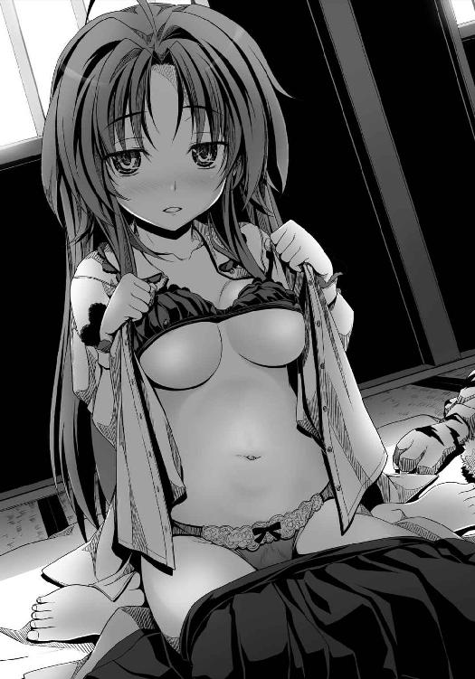
「う。そ、それは」
「言えないの？ わたしを愛してないの？」
「そんなわけねえだろ。き、き、緊張するんだよっ！ その言葉は俺にとってもお前にとっても、とてつもなく重いんだぜ！」
「金ヶ崎の英雄のくせに、小心者ね」
「お前が好きすぎて、『好きだ』と言うだけでいっぱいいっぱいなんだよ」
「言ってくれないとこのまま天主から追い出しちゃうから」
「お前が先に言えよ」
「ダメ。良晴が先よ。わたしにキスしたいのなら、言いなさい」
「嫌だ。先にキスする」
「え？ ちょっと......んっ......」
良晴は、信奈の唇をふさいでいた。
長い長い時間、二人はそのままお互いの唇をついばみあった。
「......信奈......」
「良晴。お願い。愛していると、言って」
もう良晴は逆らえない。
「わ、わかった。の、信奈。俺は、お前を」
これまでは、信奈と結ばれることをためらったこともあった。
しかし、今はもう一切の迷いがない。
あの素直じゃない信奈の口から「良晴の赤ちゃんがほしい」と言われて尻込みしちゃあ俺はもう男じゃねえ、というか人間失格だ、生涯エロザルだ、人間の証明をするためにも俺はこの緊張を乗り越えて信奈の願いをかなえてやらねえと──と決めていた。
だがそんな良晴が（まさか十兵衛ちゃんが生き霊と化して出てくるってことはないだろうな）とほんの一瞬余計なことを考えてしまった、まさにその直後だった。
「あのう。お取りこみ中、申し訳ありません。火急の用件で参りました」
幼い少女の声が、信奈と良晴の背後でいきなり響き渡った。
あまりにも存在感が薄すぎるために、良晴も信奈もその者が室内にいることにぜんぜん気づかなかったのだ。
太陽が琵琶湖の彼方に沈み、室内が暗くなってくるとともに、部屋の端に座っているその者の姿がだんだん見えてきた。
「お久しぶりです、お二人とも。こんばんは、けんにょです」
その影が薄すぎる者の正体は、ほんの少し前まで大坂本猫寺の生き神さまだったはずの少女、けんにょだった。
「えええっ？ けんにょおおおおっ？」
「長秀さんが見張っていたのに、いったいなぜ入りこめたんだっ!?」
「それは、本猫寺から追い出されてただの町娘になってしまったため、わたしの存在感がなくなったからです。俗に言う『影が薄くなった』というやつです」
「た、たしかに信じられないくらい影が薄くなっているし、別人のようにキャラが立ってなくねえ？」
「ちょっと待って、けんにょ？ あんた、頭の猫耳はっ？ 尻尾はっ？」
「ぜんぶ取れてしまいました。それゆえ、当主の資格を失って本猫寺を追われてしまったのです」
「「ええええええ？」」
「お二人のたいせつな逢瀬を邪魔した罪は万死に値しますが、一刻を争う事態なのです。相方の孫市が留守だったので、もうあなたたちしか頼れるお方がいないのです」
「いったいなにがあったのよ？ っていうか、あんたはわたしたちの秘密を知ったからこの場で打ち首！」
「待てよ信奈。けんにょちゃんがこれほどうちひしがれて俺たちに頭を下げるなんて、ただごとじゃねえぞ」
「このままでは本猫寺は和睦を破って織田家と開戦してしまいます。どうか門徒たちとわが妹をお救いください」
けんにょの言葉は、近衛前久という見えない敵をやっと見つけたことによって天下布武へ王手をかけたと信じていた信奈と良晴を激しく動揺させる衝撃的な内容だった──。
けんにょは、これまでの経緯を細々とした力ない声で語った。
大坂本猫寺を総本山とするにゃんこう宗は、戦国時代の日ノ本でもっとも強力な宗教組織だ。
歴史はまだ短い新興の勢力だが、畿内、北陸、東海、中国に広がるその門徒数は多く、ひとたび武装蜂起すればその動員兵力はあらゆる戦国大名を上回る。
今では、本山の大坂本猫寺は多数の川に囲まれた一大水上要塞に成長している。
名前こそ「寺」だが、実際には相模北条家の小田原城と並ぶ難攻不落の巨城だ。
しかも本猫寺は雑賀衆という戦国最強の鉄砲傭兵集団と懇意で、本猫寺に雑賀衆を引き入れればたとえ十年でも二十年でも篭城が可能となる。
つい先日までその本猫寺の当主だったけんにょは、いちどは本猫寺の国を建てるべく「天下布猫」を掲げて信奈と戦おうとしたこともある。
「あの頃のわたしは、信奈さまが叡山を焼き討ちにされて僧侶を皆殺しにしたという風聞に踊らされていたのです」
このままでは両者は天下人の座を巡って泥沼の殺し合いを繰り広げる。そんな歴史を知っていた良晴の奔走によって、けんにょと信奈はしばしの和睦を結んだ、はずだった。
今そのけんにょが、うちひしがれた姿で、信奈と良晴の前でしおれている。
「ご覧のとおりわたしは猫耳と尻尾を、つまり当主の資格を失いました。これもきっとわたしが傲慢で生意気で口の悪いうつけ娘だった報いというものでしょう」
「ちょっとあんた、わたしにケンカ売ってるのっ？」
「本猫寺の当主はわたしの妹、きょうにょが継いでいます。きょうにょは、武家と本猫寺の共存共栄はありえない、と信奈さまとの和睦に反対していました。この国のまつりごとも宗教もまとめて本猫寺が仕切るべきだ、本猫寺がこの国の神権と王権をいずれも一手に握ると。そこまでして、はじめてこの国に平和が来ると」
「タカ派だな」
「本猫寺のために戦って死ねば猫極楽に行ける、お猫さまの群れに囲まれた暮らしを永遠に楽しめる、という方便の教えを、きょうにょは再び持ち出すでしょう。そうなれば門徒たちはみな死兵と化します」
「どうしてそんなやっかいな教えを作ったのよ!?」
「本猫寺を邪教と忌み嫌う古い仏教勢力に何度も何度も弾圧され、また戦にあけくれる武士たちに田畑を焼かれ兵糧を奪われ続けているうちに、武力には武力で対抗しなければ生き残れないと門徒たちは追いつめられ......その中で、戦って死ぬことへの恐怖に耐えるためにそのような方便が生まれたのでしょう」
けんにょいわく──もとは仏教系のごく小さな宗派だった本猫寺だが、複雑な運命を背負って生まれた八代目当主のにゃんにょが、信太の森の猫の妖怪を母に持つ半妖怪だったのだという。
そんな奇妙な当主がいる本猫寺に集まってきた門徒は、戦乱の世で踏みつけにされ、権力と結びついた旧仏教界からは相手にもされなかった力なき庶民ばかりだった。
にゃんにょが門徒たちのあまりの貧乏苦難ぶりに切れて「猫は猫を殺さない。だから人間よりも尊いんだにゃ！」と居直ってからは、いよいよ「よく言ってくれた」と庶民の間で爆発的に人気が沸騰した。
庶民の英雄となったにゃんにょは、にゃんこう宗のもとに集まった民の力の拡大を怖れた旧仏教勢力や武士たちに寺を襲撃され、逃げてきた土地からも追い出されたりといよいよ苦難を重ねた。このことで「にゃんにょさまをお助けしよう」という猫好きの門徒たちがかえって結束し、ついには武装蜂起して戦うことも辞さない集団になっていったという。
良晴はうなった。
「まったりとかわいい猫を愛でるのが本猫寺の教えなのに、乱世ってのは因果なもんだな」
「多くの門徒たちがにゃんこう宗の国を望む中、いつしかわたし自身がこの国の王になろうという野望を抱いてしまったのです。本来、宗教者の王国とは現実世界の王国ではなく、心の中の王国でなければならないのです。壮大な寺院を構え富と武力で己を飾れば、武士と同じ現世の権力者になってしまうのです。叡山がそうであったように、気がつけば本猫寺も──」
「心の世界の神権をつかさどるべき本猫寺当主が、いつしか現世の王権をも望むようになった。そういうわけね」
「自衛のために生みだした猫極楽の教えが、門徒たちをさらなる戦いに駆り立てることになったのです」
やっぱりこの子は秀才だよなあ、猫耳と猫語尾を捨ててますますそう見えるようになった、キャラは立ってないけど、と良晴は感心した。
「けんにょ。にゃんこう宗門徒としての団結力を手にした民が、ふがいない武士どもに見切りをつけて一揆に走ったのは当然と言えるわ。民の力を集めた本猫寺がここまで巨大化したのも、古びた権威が壊れていく過程で起きたひとつの必然よ」
現世の王権はあらゆる宗派から独立した地平に立つ信奈さまが手にしなければなりません、とけんにょは首を振った。
「この国は今こそ、宗教者が武装しておのおのの王国を築いてきた古い慣習を断ち切るべきなのです。ですが妹は、わたしが捨てた野望を捨てきれずに再び兵をあげようと」
「にゃんこう宗門徒だけの国を造れば、門徒とそうでない者とに分断されてこの国は真っ二つだわ。猫より犬が好きな子も多いしね」
「きょうにょは、信奈さまが後押ししている南蛮の邪宗門を禁教にすればすべての民を門徒にできると考えています」
「本猫寺や旧仏教勢力を押さえこむためにわたしが南蛮のキリシタンに肩入れしていることを読まれているのね」
下手したらキリシタンとにゃんこう宗の宗教戦争になっちまう、と良晴はため息をついた。
「信奈。本猫寺と開戦したら、お前の天下布武は十年遅れるし、門徒たちを殺せば殺すほど人心が離れるぜ。それに、雑賀衆がいる。孫市姉さんが本猫寺に加勢したら一大事だ」
「サル。孫市の蹴鞠の強さはたしかに超人的だったけど、今川義元のほうがさらに上だったわよ？」
「孫市姉さんの本業は鉄砲だよ。梵天丸に加勢して騎馬鉄砲隊を編制し、武田の赤備えを退却させた戦上手っぷりを見ただろ？」
まあ三国志で言えば義理がたい呂布みたいなもんだ、しかも鉄砲使いだから破壊力が半端ねえ、と良晴がうなずく。
「赤備え、ねえ。あんたなんかが采配とってなきゃ勝ってたんじゃない？」
「おう。それはそうかもな。うぐぐ」
「そもそも孫市はあれほどの鉄砲衆を抱えていながら、どうして傭兵稼業なんかやってるのかしら。自分で天下を盗ればいいのに」
「そういうことにぜんぜん興味ねーんだよあの人は。天下よりも、天下一の男探しに夢中なんだろう？ それがいったいどんな男なのか、さっぱりわからねーけど」
「......ほんもののバカね。天下一の男ならここにいるのに」
信奈が小声でつぶやいたが、良晴はない知恵を絞ってうんうんうなっていて、せっかくの信奈のご褒美台詞を聞き逃してしまった。
「あと少しなのに。信奈が天下を統一して戦を終わらせれば、民の暮らしも嘘のように安定するのに。あと数年だけ我慢してくれれば、歴史は良い方向に向かうはずなのに」
「それは未来から来たあんただから言えることよ。百年も戦争に巻きこまれ続けていたこの国の民の忍耐力は、もうとっくに限度を超えているのよ。誰かが煽れば、一揆にだって加わるわ」
「この安土城と安土の町を見せれば、新しい時代が来たとわかってもらえる！」
「まだ城は完成していないし、日ノ本中から人を呼びこんで安土の噂を津々浦々まで浸透させるには時がかかるわ」
「そうだな......情報伝達の速度と精度が俺の時代とは違いすぎる。戦国時代にインターネットが、いやせめてテレビ放送でもあればなあ」
このままじゃ元の木阿弥じゃねえか。信奈を、民を虐殺する第六天魔王にはしたくねえ。絶対にそれだけは阻止したい。だが、妙案が浮かばない。良晴は唇をかんだ。
「多くの門徒は南蛮蹴鞠大会を通じて一揆よりも平和に暮らすことを望んでいます。しかし妹は、わたしが抱いた野望に今も取り憑かれているのです。そして、本猫寺当主の命令は門徒にとって絶対なのです」
「そうか。でも、けんにょちゃんを当主の座から追い落とすまでの手際が良すぎるよな」
「猫耳が落ちたのも、偶然にしては都合が良すぎるわね」
「このところ足利義昭さまから信奈さまを討てと手紙で何度も催促をいただいていましたし、関白・近衛前久さまからも内々に『足利将軍の上洛を助けよ』とのお言葉を。妹は、ひそかにわたしを本猫寺から追う準備を進めていたのかもしれません」
「なんですって？ また近衛がっ？ あいつ、もう許さない！」
「足利義昭さまは播磨の毛利さまの陣におられますが、近衛さまは堺の津田宗及さまのもとをたずねられているようです。この安土へ辿り着く途中、津田さまのお屋敷の前を通りかかりました時に小耳に挟みました。猫耳はもうありませんけれど」
「津田宗及も近衛の陰謀にかんでたの？ あんた、そんな機密情報をどうやって知ったの？」
堺の人は誰一人わたしがけんにょだと気づかなかったので堺では噂を聞き放題、情報をつかみ放題、あちこちのお屋敷に忍び放題でしたと、けんにょは力なく笑っている。
「実際、長秀さんの監視をかいくぐってこの天主にのぼってきてるんだもんな。ほとんどステルスだ。忍者よりすげえ異能力だ」
「やられた。姫巫女さまをおもんばかってやまと御所に間者を入れていなかったのは、わたしの手抜かりだわ」
「五右衛門はずっと俺のために奔走してて、織田家のための諜報活動にまでは手が回らなかったからなあ。でも、織田家にも直属の忍びがいるじゃないか」
「左近のこと？」
「そう。一益ちゃんがいる。一益ちゃんに忍んでもらえば」
「あの子はもう忍びじゃないわ。本人も甲賀時代のことを忘れたがっているし、今さら忍びの仕事はやらせたくないのよ」
「そっか。一益ちゃんは海が好きだからな。すまねえ」
けんにょは、さらに居住まいを正して頭を下げてきた。
「あと、『月刊けんにょだにょ』でお二人のあらぬ噂を書き立てて申し訳ありません。南蛮渡来の活版印刷機を動かすことが楽しくて次々と刷らせていたわたしの責任です」
「あー！ そういえば、そんな瓦版もあったわね！ 畿内で出回っている瓦版って、いつもわたしの悪口ばかりじゃない。わたしとサルが恋仲だとか愛欲の日々だとか無責任なことばかり書き立てて！」
「このけんにょは生まれてこのかた恋愛というものをしたことがない娘。お二人の絆がこれほど崇高なものだとはいざ知らず、今まで瓦版を読んで単純に面白がっておりました。これまでの非礼の数々、万死に値します」
「ま、まあ、瓦版の噂もぜんぶ嘘ではなかったってことだよ。別に崇高とかそんな大それたもんじゃねーし、気にするな」
「けんにょは、信奈さまと良晴さまの秘められた恋心について、決して口外いたしません。全力で見守らせていただきます」
「で、デアルカ......」
けんにょがこうもしおらしいとなんだか調子が狂うわねえ、と信奈は大きなため息をついた。
「良晴、今すぐ堺へ行くわよ。近衛を捕まえて陰謀を止めさせなきゃ！ 権力争いに民を巻きこもうだなんて、関白たる者がやっていいことじゃないでしょう。論外だわ！」
「あの。えっと。信奈、子作りは？」
「はあ？ それどころじゃないでしょう。ば、ば、バカじゃないの？」
「ご、ごめん！ 一応聞いてみただけだっ！」
「それは後日っ！ 一刻も早くきょうにょを止めなくちゃ。どれほどの民の命がかかってると思ってるのよ？」
「おう、そうだな」
「しょ、しょうがないでしょ。い、今、わ、わたしがお市のように赤ちゃんをみごもっちゃったら、こ、これほど切羽詰まっている情勢が、と、滞っちゃうじゃない......」
「そ、そりゃそうだけどさ......あまりにも盛り上がりすぎていたから身体が熱い......誰かなんとかしてくれ......」
「ししし知らないわよっ！」
信奈はほてる身体をけんめいに抑えながら立ちあがって、長秀の名を呼んでいた。
「天下と良晴。二つとも手に入れるのはやっぱり至難の業ね。でもわたしは、なにもあきらめないわ。良晴が半兵衛も官兵衛も鹿之助も、誰の命を救うことも最後まであきらめなかったように」
「信奈。お前」
「次にまた、天下と弾正のどちらかしか選べないような状況を前にしたら。その時こそわたしは、絶対にどちらもあきらめないわ！」
今の信奈がこれまで以上に輝いている理由が、自分自身の播磨でのあの覚悟にあったことを、良晴は知った。
鼻の奥がつんと痛くなった。
それにしても、信奈は近衛前久を許せないらしい。
「近衛はやってはいけない一線を越えたわ。公家の頂点に立つものが、武家と民とを戦わせようなどと。関白だろうが藤原摂関家だろうが、返答次第では首を盗るわ！」
信奈の瞳は、近衛への怒りに燃えていた。
「馬、ひけーい！」
けんにょが、「あのう」とそんな信奈に声をかけた。
「この国には長年続いてきた身分という仕組みがあります。たとえ武力で天下を盗っても、天下人とあやしげな未来人の祝言を武士も民も認めません。このままでは、お二人が祝言をあげるのは無理です。たとえ子を作っても、父親の正体を秘め続けなければならないでしょう」
「そんなこと、わかってるわよ！ それでずっと悩んでるんじゃない！ いっそこの国の伝統のなにもかもを根絶やしにして、きれいさっぱり新しい国にしちゃいたい誘惑にかられるくらいよ！」
「待て信奈。俺ごときのために伝統ある日本文化を壊滅させるなよ！」
「やらないわよ。やらないけど、もどかしいじゃない！ あんたはもどかしくないの？」
「もどかしいのは俺も同じだけど、そうやってすぐ極端に走るのがお前の悪い癖だ。お前の悪名を被ってくれる弾正はもういないんだぜ」
「むう」
「さらなる悪名を被る危険な賭けになりますが......この機に近衛さまと取引すれば、堂々と祝言をあげられるかもしれません」
二人の悲恋を見かねたけんにょのこのなにげない一言が今、この国の歴史を大きく動かそうとしていた。
「近衛と？ わたしが？」
「取引？ 今までの経緯とか信奈の性格を考えると、さすがに無理じゃねえかな」
「サル。わたしの性格ってなによ、なんのことよ？ 返答次第じゃ叩き斬るわよ」
「だからそういうところだよ！」
信奈と良晴は、（まさか、ほんとうに）（そんなことが可能なのか？）と上気しながら顔を見合わせた。
「近衛さまはやまと御所の公家衆の頂点に君臨するお方。位人臣を極めた関白です。皮肉な話ですが、近衛さまだけがお二人の恋を成就させる力をお持ちなのです」
巻ノ二 関白藤原良晴
播磨の西の端に位置する、上月城。
中国の覇王・毛利家の軍勢約五万が、織田方が包囲する三木城を救援するためにこの地に集結していた。
その日、元祖本家正統足利将軍を名乗る幼い足利義昭が、急ごしらえの天守にのぼって東のかた、姫路城方面を遠眼鏡で眺めていた。
「ほっほっほ。喜べ、吉川、小早川。本猫寺からお返事が来たのじゃ。われらに呼応して織田信奈と戦ってくれるそうじゃ！」
亡命先の明から舞い戻ってきて毛利家のもとへ押しかけてきた足利義昭はお手紙将軍の異名を取る筆まめで、その数え切れないほど乱発している手紙の内容はたいてい、足利将軍家をガン無視して今川幕府などを開いた信奈の悪口と、「わらわが京に戻ったあかつきにはたくさん領地をはずむのじゃ」という空手形ばかりであるが、これでも先の将軍・足利義輝から正式に将軍位を継いだほんものの将軍。
幼い毛利三代目・輝元を補佐する「毛利両川」、初代毛利元就の双子の娘・吉川元春と小早川隆景は、足利将軍をいただいた以上は織田信奈と対決すべし、と立ちあがってこの播磨まで侵攻してきた。
だが織田軍の結束は予想外に固く、毛利方の拠点・三木城を織田軍が完全包囲したことと織田方の九鬼水軍が海上から戦場に乱入したことで播磨戦線は膠着。
毛利側の先鋒をつとめていた備前美作の領主・宇喜多直家が合戦中に落馬して腰を痛め、戦線から離脱したのも痛かった。
毛利軍の山陽道方面と水軍を束ねる知将・小早川隆景は、得意の海戦に勝利してこの膠着を打開し、三木城を開放するという大戦略のもとに準備を進めているところだった──。
「姉者。われらは大坂の制海権を握り三木城へ海から補給を入れるとともに堺を封鎖するつもりだったが、先に大坂本猫寺を海上から支援せねばならなくなった。三木城の城兵たちにはしばらく耐えてもらう」
「毛利上等」の日の丸鉢巻がにぎにぎしい吉川元春は、妹の隣に腰掛けていにしえの戦国大河物語『太平記』の本文を「おおう。おおう。またしても美しきもののふの命が散っていくけぇ。泣けるけぇ」と泣きながら書写し、美形武将の出番を適当に書き足して話を捏造するという妙な趣味に耽っている。
吉川元春はかくれなき猛将だが、戦をしていないと気力体力がありあまるらしく、さりとて現実の殿方にも興味がないのでこういう趣味で憂さを晴らすらしい。
「こほん。将軍さまの前でそういう腐ったおなごのような趣味は......姉者」
「山陽道と水軍のことは隆景にすべて任せているけぇ。隆景の好きにすればええ。自分はただ隆景の決断に従って敵中へと斬りこむだけじゃ」
「大坂本猫寺は難攻不落の水城。しかも伊勢、越前、近江、三河などに多数の門徒を抱えている。これらが蜂起すれば織田軍は身動きがとれなくなる。織田信奈はおそらく大坂の周辺に付け城と砦を築き、大規模に封鎖するだろう」
「播磨の三木城をおそろしい規模の外城でくるんでしまっているようにか、隆景」
「おそらくは。急ぎ海路を確保して本猫寺に軍兵と兵糧を入れねばならない。織田軍との決戦は武士同士で決着を付けるべきで、にゃんこう宗の門徒たちに武器を取らせてはいけない。そうなれば、民を巻きこんだ泥沼の戦いになってしまい、天下はさらに乱れる」
小早川隆景は「不本意なことになってしまった」と眉をひそめていた。
「姉者、織田信奈に天下人たる資格があるかどうかを試している場合ではなくなった」
手紙攻勢で本猫寺を焚きつけた足利義昭に、小早川隆景はさりげなく苦言を呈しているのだ。
うう、もしかしてわらわはまずいことをしたのかの、と足利義昭が首をすくめた。
「わらわとて、足利将軍として天下大乱を終わらせようという志半ばで挫折した兄上の代わりとなって、日夜がんばってお手紙を書いているのじゃ。うう。す、すまぬ」
「将軍さま。天下とはただの言葉にあらず。大勢の人間の命という実をともないます。言葉の上の戦いだけではすみません。大勢の人間の命が、散るのです」
「......これからは心しておくのじゃ。すまぬ小早川」
「その覚悟をなされた上であれば、ご自身の信じる道を進まれよ」
わかったのじゃ、と足利義昭が救われたようにうなずいた。
「自分にわかるのはこれだけじゃ、隆景。戦って死ぬのは、もののふの役目じゃけぇ」
「そういうことだ姉者。とはいえ、またしても村上水軍に助けてもらうことになるが」
「思いだすのう。われら毛利家が中国の覇者となった厳島での決戦を。われらが兄者を」
吉川と小早川は顔かたちもうり二つじゃが息もぴったりなのじゃ、仲良し姉妹なのじゃな、と足利義昭がうらやましそうにつぶやいた。
「当主はまだお子さまでも、そちら毛利両川がいる限り毛利家は安泰じゃの。わらわは兄上と離れ離れで寂しいのじゃ。うう」
「将軍さま。自分と隆景は、顔は同じでも性格が真逆。昔はとことん不仲だったけぇ」
「ええ。私たちは会うたびにケンカばかりで、父上にいつも愚痴られておりました」
「なんと。とてもそういう風には見えんが」
「すべては、今は亡き兄者のおかげなのです」
小早川隆景は、遠く西の空を寂しげに見つめていた。
※
村上武吉は今、瀬戸内の海を東へと向かっていた。
行き先は播磨灘から明石海峡を越えた先に広がる、大坂の湾。
どこまでも荒れ狂う海は、毛利両川の運命を暗示しているかのようだった。
あの有名な厳島の戦いにおいて、毛利家「初代」毛利元就は圧倒的兵力差をひっくり返して奇跡の勝利を収めた。
村上水軍が全軍をもって毛利方に加勢し、海賊としての利害を捨てて死兵となって戦ったことが、強大な陶軍の当主・陶晴賢を厳島で討ち取るという大勝利につながったと言っていい。
だが戦国の世では、死ぬべきでない男が次々と死んでいく。
二代目・隆元、初代・元就が没した今の毛利家は、隆元の忘れがたみ・幼い「三代目」毛利輝元を当主にすえつつ、元就の双子の娘である小早川吉川の毛利両川が舵を取っている。
しかし毛利両川は、天下を盗ったあとどうする、という明確な未来像を見ることができなかった。
特に、毛利家の「知」を担当している小早川隆景が、「父上も兄者もいない毛利家が天下を望んではならない。知略を用いるべき私に、この国の未来を思い描く力がない」と信じている。
だから、強敵の尼子家を滅ぼして文字通り中国の覇者となった毛利家は、「天下を望まず」という元就の遺訓のもとに家名を残すために逼塞し、天下人の器をはかるための狂言回しとなるはずだった。
それが、まさか足利将軍を担いで織田軍と全面対決することになるとは世の中はわからんものだ、と武吉は思っている。
その上、いちど織田家と和睦したはずの本猫寺までが足利方として参戦とは。
「見ているか元就、隆元。俺は百まで生きるぜ。てめえらが生き急いでさっさと逝っちまったせいで、小早川のお嬢と吉川のお嬢は俺が守ってやらねばならんからなあ」
小早川隆景から村上水軍への依頼は二つ。
畿内一の貿易港・堺を封鎖する。これは織田軍の補給、とりわけ硝石の補給を停止するためだ。隆景らしい長期戦略の一環である。
さらにもう一つ。大坂本猫寺に毛利の軍兵と兵糧を届けること。
むろん、織田方にも水軍がある。同時に大坂と堺を押さえるのは難しい。
いかに村上水軍といえど、取りかかれる仕事はどちらか片側だけだ。
だが村上武吉には自信があった。
織田軍は、陸戦においては桶狭間の戦いをはじめさまざまな経歴を誇るが、海戦の経験は少ない。今まではあくまでも陸の部隊を支援するために水軍を用いてきた。
対する村上武吉は、厳島の戦いで海賊衆を率いて圧倒的兵力を誇る陶軍を粉砕した、文字通りの海の王者だ。
両者の間には、圧倒的な経験の差というものがある。
「長生きはしてみるものだ。この海戦は、厳島以来の大戦となるだろうよ」
俺はいずれにせよ一度は堺に行くことになるな、通行税を支払わずまんまと俺たちをだまして妙なものを海から引きあげさせたあのバテレンの言葉どおりになっちまったか、と村上武吉は気づいた。
瀬戸内の海賊衆・村上水軍が、下関にほど近い壇ノ浦に船団を集めて海底の探索を行ったのは、つい先日のことだ。
きっかけは、九州豊後から堺へと船で渡ろうとしていた南蛮人の青年宣教師を捕らえたことだった。
宣教師は黒髪を長く伸ばした優美な青年だった。背が高く痩せており非力ではあったが、気性の荒い海賊たちに凄まれ、あるいは殴られても、穏やかな態度を決して崩さなかった。
宣教師は、瀬戸内の海を渡ろうとしていたにもかかわらず、村上水軍に対して通行料を払おうとしなかったのだ。
『私は銅銭も金銀も持っていない』
調べさせたところ、宣教師の身なりは事実、清貧そのものだった。
誰もが仰ぎ見ずにはいられない巨体と威厳の持ち主である瀬戸内の王・村上武吉は、このはるか彼方の世界から船に乗ってはるばる日ノ本まで渡ってきた南蛮人宣教師の胆力に一目置いたが、瀬戸内の海は村上水軍の縄張りだ。たとえ南蛮人と言えども黙って通過させるわけにはいかなかった。
『バテレン。小島が多く潮の流れが複雑な瀬戸内の海を素人が渡るのは命がけだ。だから俺たちが渡してやる、その代わりに銭を出せと言っているんだ』
宣教師は柔和な口調で、村上武吉に言った。
『壇ノ浦に、財宝が沈んでいる』
なぜ南蛮人のお前がそんなことを知っている、と村上武吉は詰問したが、宣教師は『私はあなたたちよりもずっとジパングの歴史に詳しい』と微笑むばかりだった。
だが、宣教師の言葉に従って村上水軍の海賊たちが実際に壇ノ浦から引きあげた宝箱の中身は──金銀宝石の類ではなく、薄汚れた珠が、ただひとつだった。
『これが勾玉だ。これこそが人類の歴史を変えることのできる宝具だ』
宣教師は海賊たちに縛られて海へ沈められることとなったが、海賊たちの長・村上武吉はこの宣教師にいよいよ興味を持ち、命だけは助けてやろうと牢へ幽閉したのだった。
村上武吉が宣教師を殺さなかったのは、宣教師の瞳の中に荒々しいなにかを見て取ったからかもしれない。
そして。
その青年宣教師は今、船牢から出されて村上武吉の隣に静かに立っている。
宣教師の名は、ガスパール・カブラル。
ドミヌス会の新たなジパング支部長である、という。
牢の中で、この船は堺へ行くことになる、私は堺から上陸してジパングの女王に会うことになると宣教師ガスパールは語り、澄んだ瞳を光らせて微笑んでいた。
神の子とみまがうような柔和な笑顔だった。
だがその瞳が放つ光だけは、まるで猛禽類のように獰猛だった。
「私はこのジパングを神の国とする」
今、甲板に立ってそう言い切る宣教師ガスパールは、さながら、従順な羊の皮を被った猛虎だった。
「ほう。神の国。つまり日ノ本をキリシタンの国にするということか？」
「それ以上だ。私は、地上に神を降臨させたいのだ」
「なんだと!?」
「見ているがよい、瀬戸内の王よ。私は、神の不在ゆえに過ちを繰り返してきた人類の歴史を改竄する」
ガスパールの突拍子もない言葉は、村上武吉の心を妙にざわつかせる。
「バテレンよ。お前の予言が成就するのはしゃくだが、この勝負は俺の負けらしい。これも定めというやつかもしれん。近いうちに、堺へ上陸させてやろう」
「グラーシアス。しかし、まだ私自身が堺へ上陸する時ではない。キリシタンでありながら織田家のサムライでもある少女が、勾玉を用いて私の代わりに道を拓いてくれる」
「ほう？ たしかに異人のお前よりも武士のほうがなにかと動きやすいだろう。しかしお前自身とその武士の夢は、重なっているのか」
「いや、夢はみなそれぞれが自分の胸の中に抱くもの。だが今は、堺へ勾玉を運んでくれればそれでよい。結末は、私が思い描いているとおりになる」
「それでは、お前はこれからどうする？」
「私自身が表舞台にのぼるべき時を静かに待とう。それまではしばし九州に戻り、神の国を築く下準備を進めておきたい。反キリシタンを掲げる島津の勢力が増大しすぎている」
「まったく、お前は柔和な仮面の下に鉄の意志を秘めている。毛利隆元がそうだったようにな。宣教師にしておくには惜しい男だ」
「毛利隆元？」
「昔の話よ。俺が今、庇護しているお嬢たちの兄貴だ。つまらない連中の手にかかって、死んだ」
「瀬戸内の王よ。あなたもまた、家族のためにこの戦をはじめるのか」
「ああ。つきつめて言えば、そういうことだ。お嬢たちと俺とは血のつながりはないが、家族だ。俺と隆元は兄弟の盃を交わした仲だからな」
「あなたは凶暴だが、よき男だ」
「バテレン。お前はなぜ家族を捨ててこんな異郷の島国まで来た」
「あいにく、私には家族はいない」
「ほう？」
「私は天の下に独り。わが心には愛もなく恋慕の情もなく、そして守るべき家族もいない」
村上武吉はこの時、はじめてこの静かな宣教師の瞳の中に、癒やしがたいなにかを見た。
遠く南蛮から船に乗って一人きりで日ノ本へ来るような酔狂な男だ、長い長い陰の物語を抱えているのだろう、と武吉は思った。
「瀬戸内の王よ。家族を愛すれば、家族以外の者を憎むようになる。家族を守ろうとすれば、家族以外の者と戦うことになる。家族こそが、人と人を対立させ戦わせ憎しみをばらまく、苦悩の源なのだ。あなたがたジパングの人々はみな、赤子のように一途に己の家族を愛しすぎる。あなたがたは愛深きゆえに、憎しみもまた深いのだ。その深き愛ゆえに戦い続けるのだ」
※
摂津と和泉の国境にある一大貿易都市・堺。
信奈と良晴は不眠不休で馬を飛ばして、大商人・津田宗及が商いをしている天王寺屋へと向かっていた。
「なあ信奈。松永久秀はどうして、近衛が陰謀を巡らせていることをぎりぎりまで黙っていたんだろうな」
「武士がひとたび京に足を踏み入れれば、公家どもの妖怪じみた政治力に振り回されて四苦八苦することは避けられない。弾正自身がさんざん味わってきたことよ。わたしが自力で乗り越えるべき試練だと思っていたんでしょう」
「それにしても、もっと早く教えてくれていれば」
「わたしが忍耐に欠けていて短気なうちは、伏せていたほうがいいと考えていたのよ。やまと御所との対立は避けなければならないもの。わたしが暴走して御所を焼いたりすれば、もう戦乱の世は終わらなくなる」
「そうか。たしかに久秀はやまと御所だけは焼かなかった。足利将軍を襲い、東大寺を火の海にしたのにな」
「弾正はこの国のすべてを焼き尽くしたいと言いたげな態度だったけれど、心の底では戦乱の世を終わらせて自分のような戦災孤児をこれ以上増やしたくないと願っていたんだわ。そうでなければ、こうまでしてわたしを助けてはくれなかった」
「そうだな。久秀がお前の京での悪評を肩代わりしてくれて、半兵衛と前鬼が京に巣くう古い怨霊を祓ってくれたんだ」
「ええ。わたしは、なによりも人に恵まれたみたい」
「あとは近衛の首根っこを押さえれば、もう京はお前の敵ではなくなる。次は、民と敵対する泥沼の道を避けることだ」
「にゃんこう宗門徒たちとの戦いだけは避けなくちゃね。良晴」
「ああ。久秀や前鬼たちの思いを無にしないためにも。なんとしても」
「ふ、ふ、ふ。大坂の本猫寺と中国の覇者・毛利が連合して堺の港を押さえれば、鉄砲に頼る織田軍は干上がるでおじゃる。さらに各国のにゃんこう宗門徒どもを蜂起させれば、麻呂はもう勝ったも同然」
「手前もこのまま商売敵の今井宗久さまだけに儲けさせてはおけません。足利幕府再興のあかつきには、わが天王寺屋を幕府の御用商人に」
関白・近衛前久と堺の豪商・津田宗及が天王寺屋の茶室に集い、毛利家に居候する足利義昭と、きょうにょが率いる本猫寺とをうまく連携させるための陰謀を進めていたところへ──。
「近衛！ もう言い訳はさせないわよ！」
「証拠はあがってるんだ！」
鬼の形相となった信奈とにっくき良晴がいきなり襖を蹴破って現れたので、近衛は「おじゃああああっ!?」と奇声を発して腰を抜かした。
津田宗及も、手にしていた大名物「珠光文琳」をあやうくとり落としそうになった。
「織田信奈？ ど、ど、どうしてここにっ!?」
「近衛さま、手前の店の裏手にございます桟橋よりお逃げくだされ」
「残念ね。桟橋なら、左近に命じて封鎖させたわよ！」
この時すでに信奈は滝川一益率いる九鬼水軍を堺へと呼び寄せ、港へ入れていた。
茶室の四方は、信奈の小姓たちが完全に取り囲んでいる。
そして、茶室に踏みこんだ信奈も自ら腰の刀を抜いた。
「金ヶ崎の折りに浅井家がいきなり裏切ったあたりから、あんたたちがわたしに隠れてやってきたであろうこと、いちいち数え上げたらきりがないわ。関東の風魔まで雇うなんてずいぶんと手広い謀略じゃない？」
「おのれ！ 茶室に刀を持ちこむのは不作法、と丸腰で部屋に入ったのが命取りになったでおじゃる！ 麻呂は手練れの刺客も返り討ちにしてみせる剣の達人であったというのに、口惜しや！」
近衛はかつて越後の上杉謙信を関東管領に就任させ、自ら関東公方となって東日本を自ら支配しようと暴れ回った武闘派なのだった。
藤原家としての名門意識ゆえに麻呂言葉を使い、しかも一見お歯黒の典型的な公家姿なのでひ弱そうに見える。それが信奈たちの目をくらましていたのだ。
もしも近衛がこの茶室に刀を持ちこんでいたら、相打ち上等とばかりに信奈と良晴に襲いかかって一撃で斬り殺していたかもしれない。
だが、現実は非情である。この時、近衛は丸腰だった。
追いつめられた近衛は「くわっ」と目を見開き、つばを飛ばしながら吼えた。
咆哮した。
「殺すなら殺せばよいわ！ 麻呂はたとえ殺されてもそちが牛耳る傀儡の今川幕府など認めぬでおじゃる！ 南蛮のキリシタンと手を組んでこの国を破壊しようとする不埒者めが！」
だが、信奈もまた一歩も退かない。
「近衛！ わたしは破壊者じゃないわ、応仁の乱でめちゃめちゃになってしまったこの国を再生しようとしているのよ！」
「だまりゃ！ 野蛮な武士にまつりごとをさせたばかりに、これほどあさましき乱世になったのでおじゃる！ 姫巫女さまのもとでわが藤原家がまつりごとを行っていた、いにしえの昔に戻すべきでおじゃる！」
「何百年前の話をしているのよ。時代錯誤だわ！ 今は名もなき民がにゃんこう宗門徒となって武装蜂起する世の中なの。公家が権威と血筋と言霊だけで一国を支配できるような時代じゃないのよ！」
「ぶぶぶ武士どもにまつりごとをやらせたせいで、ここここれほど日ノ本が無秩序になったのでおじゃる！ 力こそすべての修羅の世になったために、身分もなにもなくなって血迷った民どもが一揆を起こすのでおじゃる！」
「違うわ。人の心が成長したのよ！」
「まして異国の神を奉じるキリシタンなど論外でおじゃる！ 南蛮人をひいきして叡山の権威を踏みにじったそちは、売国奴でおじゃる！」
「わたしは南蛮諸国と対等に渡り合える、新しくて強い国を創ろうとしているの！ いつまで狭い島国の中で小さな権益にしがみついて領土争いを続けるつもり？」
「黙れおろう！ 武力だけでは、下克上の世は終わらぬでおじゃる！ 姫巫女さまをいまいちど頂点にいただかねば、新しい国など創れぬでおじゃるわ！」
「姫巫女さまを担ぎ上げるのがあんたじゃ、見通しは暗いわね。南蛮諸国の連中に合戦でもふっかけて、この国から南蛮人を全員追い出すつもり？」
「当然、攘夷を決行するでおじゃる！」
「話にならないわね。頭だけで考えて現実を見ないから、そんな甘いことが言えるのよ。いちど海の外へ出てみたら？」
「麻呂をフカの餌にするつもりでおじゃるか？ 富士山は見物したいが、この国の外になど出とうはないでおじゃる！」
近衛は、最後の気力を振り絞って叫んだ。
「織田信奈！ 麻呂はそちの野望をすべてお見通しでおじゃる。そちはこの国の王であることに飽き足らず、姫巫女さまに代わって自らこの国の神になろうとしているでおじゃる！」
「......はあ？ わたしが？ どうして？」
「その証拠に尾張の熱田神宮と、伊勢国の伊勢神宮。やまと御所にとってもっとも重要なこの二つの社をそちは手中に収めているでおじゃる！」
「ええ？ なによそれ。たまたまでしょう？」
「やまと御所に伝わる三種の神器のうち、ひとつが熱田神宮に、もうひとつが伊勢神宮にあるのでおじゃる。そちゃ、この国の神事をつかさどるために必要な神器をことごとく集めてわがものにしようと。いずれ自ら姫巫女さまに成り代わろうという野心を抱いているでおじゃる！」
「偶然よ。わたしは茶器は集めているけれど、神器とやらには興味ないわよ」
「安土の城にやまと御所をそのまま移転させようとしていると聞いたでおじゃる」
「御所の移転なんて考えてないわよ。姫巫女さま専用の宿を安土に建ててるだけよ」
「言い訳無用でおじゃる！ さらに！ 滝川一益とかいうそちの家臣が伊勢神宮の巫女になりおおせ、伊勢神宮の威を借りて伊勢一国を奪い取っているでおじゃる！ かの尊き伊勢神宮の巫女職に、なぜ尾張の田舎武士などがつけるのでおじゃるか？」
「知らないわよ。左近がかわいくおねだりしたからでしょ？」
「おじゃーっ！ 伊勢神宮は戦乱で窮乏しているとは申せ、そのようなゆるい社ではなーい！」
この国でもっとも尊い社である伊勢神宮を愚弄するでない！ と近衛はもう興奮して卒倒寸前だった。
「よいか！ かつてやまと御所は姫巫女さまのご一族から『斎宮』を選んで伊勢神宮に派遣し、代々神宮にお仕えさせていたのでおじゃる！ 伊勢神宮こそはやまと御所の氏神でおじゃる！ それをなんぞや忍びごときが！」
「左近はもう忍びじゃないわよ。こんど、わたしの妹分を『ごとき』呼ばわりしたら許さないわよ！」
「うぐぐ。なぜかような者を巫女としたのか神官どもに問いただしてもはっきりした返事がなく、麻呂は狐につままれた気分でおじゃる！ 逆らったら伊勢神宮を焼き払うとそちが脅したからに違いないでおじゃる！」
「近衛？ もういいかげんに、陰謀ごっこをやめたらどうなの!? わたしは、あんたがなにを企もうが絶対に止まらないわよ！ ことごとく打ち破ってみせるわ！」
良晴は確信した。近衛がどれほど挑みかかっても、信奈の信念はまったく動じない。
信奈の心の中には、斎藤道三が、松永久秀が、そして信奈の夢のために散っていった大勢の家臣たちがいるのだ。
「うぬぬ。これが死の包囲網を突破してきた天下人の威光というものでおじゃろうか......」
信奈の激しく燃える視線に射貫かれているうちに、近衛の心のほうがついに限界に達したらしい。
「思えば、麻呂がこの者に次々と試練を与えて天下人に育ててしまったようなものでおじゃる......」
近衛は叫び疲れ、敗北感にうちひしがれて、へたりこんでしまった。
「麻呂の負けでおじゃる。殺すがよいでおじゃる」
良晴は、「勝負あったな」と思わず漏らしていた。
関白・近衛前久こそが信奈の天下布武事業の前に立ちはだかる巨大な壁だったのだ。
その近衛と正面から戦い、信奈は精神力で勝ってみせた。
松永久秀を失い、久秀の遺志を受け継ぎ、信奈はまた強くなった。
「商いもまた戦い。手前が、織田家にすべてを張った今井宗久さまに敗れたということでしょうな」
津田宗及はひとたび覚悟を決めると茶人らしい落ち着きを取り戻し、「末期の茶を一杯所望いたします」と作法どおりに茶を点てた。
「近衛さまも、どうぞ」
「ここで倒れようとも麻呂の志は永遠に残るが、姫巫女さまが心配でおじゃる」
「近衛。だからわたしはやまと御所を潰すつもりはないって言っているでしょう」
「まだ言うでおじゃるか。そちゃ身分の垣根を潰して、そこのサルと祝言をあげたがっているでおじゃる。もう畿内中がその噂であふれているでおじゃる。仮にも姫大名が身分卑しき家臣との恋などという醜聞で騒がれておっては、民心はますます離れるばかりでおじゃるぞ」
「それは、あんたたちが瓦版を使って噂を撒いたからでしょう!?」
「麻呂たちがなにもせずともそちの醜聞はどんどん広まるでおじゃる。この醜聞を収めることは日を西の空から呼び戻すようなもの。天下を盗り、かつサルとも結ばれる。そのような強欲な真似をしでかすためには、そち自身が生きながら神になるしかないでおじゃるわ」
「......わたし自ら、神に......」
近衛の口からその言葉を聞いた信奈の瞳が、一瞬、あやしく輝いた。
おい信奈？ と良晴は信奈の手を引いた。
「そ、そうだったわ。取引に来たんだったわね」
「例の取引はやめておこうぜ。近衛が認めるわけねえし、これだけ疑われているところにあんな話を持ち出したらますますあやしまれる」
「そのために堺まで来たんだから、やめないわよ」
「しかしな信奈。あの話はやっぱり、無茶振りすぎる。けんにょちゃんは尊い生き神さまの家の生まれだから、これがどれほど無茶振りな話なのかよくわかってないんだよ」
「近衛。まず取引をひとつ。きょうにょの決起を止めなさい。さもなければ、あんたを自分の陰謀のために大勢の民を巻きこんだ罪でさばくわ！」
「ぐぬぬ」
「さあ。書状を用意するから、今すぐ本猫寺へ使者として行きなさい」
「うぬう」
「津田宗及、あんたからも勧めなさい。そうねえ、この天王寺屋ごと堺の町を火の海にされたくなければね」
だからそういう火付け発言がだなあと良晴は顔をしかめたが、信奈は片方の目をぱちりと閉じてみせた。
ほんとうに堺を焼くつもりはないらしい。
だが津田宗及は顔を青くした。
「こ、近衛さま。織田さまは、やると申されたからには必ずおやりになります。手前の命ひとつで済むならいざ知らず、この堺を灰にはできませぬ。なにとぞ堺をお守りください！」
「うぎぎ。この女はやはり火付け魔でおじゃる！」
近衛は、歯がみしながら「やむを得ぬ、和平の使者になるでおじゃる、今すぐ大坂へ出立するでおじゃる」と承知した。
これで本猫寺との開戦を回避することができるわ、と信奈が満足して微笑んだ。
「麻呂にはそちの行く末が見えるでおじゃる。そちのあくなき野心をつきつめれば、この国の神事をつかさどる姫巫女さまを廃したてまつるという最悪の結末になるでおじゃる。たとえ今はそのつもりがなくとも、いずれそちの野望は行くところまで行くしかなくなるわ」
信奈は、振り上げていた刀をゆっくりと鞘に納めた。
「近衛。あんたの一存で、その問題は解決するわ」
「なんとな。麻呂の一存で？」
「とりあえず生かしておいてあげるから心の片隅に留めてゆっくり考えなさい。ただし、次にまたわたしを滅ぼそうと陰謀を巡らせたら、その時は問答無用よ」
「い、いったいどのような条件を呑めというのでおじゃるか」
「わたしが天下を統一したあかつきには、サルをあんたの養子にするのよ。藤原摂関家をサルが継ぐの！」
どーん。
「な、な、なんとおおおお!?」
「もちろんあんたが持っている関白の位もサルに継がせるの。関白・藤原良晴の誕生よ！」
どどーん。
信奈は得意満面。
これ以上のどや顔はないというくらいにふんぞり返っている。
「どう？ 公家の筆頭、関白ともなれば天下人の伴侶にふさわしい立場じゃない？ これでもう誰にも文句は言わせないわ！」
近衛も津田宗及も開いた口がふさがらなくなった。
「な、な、な......言葉が出てこないでおじゃる......」
「近衛さまは藤原摂関家の氏の長者、途方もなく尊きご身分のお方。そのお方に、こともあろうに相良さまを養子にせよとは」
「ひいいい！ まままま麻呂の代限りで藤原家が氏素性も知れぬ卑しきサルに乗っ取られるとは、これは悪夢でおじゃる！ いっそ斬られたほうがましでおじゃる！」
「織田さまがまさかここまで常識外の御仁だったとは。お互いに、たいへんなやけどをいたしましたな」
「近衛？ わたしは別に藤原家なんてどうでもいいの。藤原家を乗っ取られるのが嫌だというのなら、関白の位を譲ったあと速攻でサルと縁を切って、サルに新しい姓でも与えればいいでしょ？ それで藤原家は守られるわ」
「ぐぬぬう。嫌じゃ、だまりゃ！ と言いたいところでおじゃるが、断ったらこやつはいずれ自ら姫巫女さまに成り代わるでおじゃる。姫巫女さまをお守りするためには麻呂が犠牲になるしかないのでおじゃろうか」
「なあにが犠牲よ。自分でしでかしたことのツケでしょう？」
近衛は、あまりのことに魂が抜けたように放心していた。
よもやこのような究極の選択を突きつけられるとは、想像もしていなかったらしい。
「さあさあ、どうするの？」
「さ、さすがに麻呂の一存では即答できぬでおじゃる。これほどの大事をなすには、藤原一族ならびに公家衆への根回しが必要でおじゃる」
「あまり猶予はないわよ！ わたしが天下を統一したら、すぐに返答しなさい！」
「ぐぬぅ。しょ、承知したでおじゃる」
燃え尽きた。
近衛は真っ白に燃え尽きた。
「ふふ。デアルカ！」
信奈は「わたしたちの未来に希望が見えてきたわね、良晴」と白い歯を浮かべて微笑んだ。
まさしく、会心の笑み。
「はあ。俺も落ちてくる実をぜんぶ拾わなきゃ気が済まないあつかましい男だが、お前にだけは負けるよ......」
良晴は、半ば呆れていた。
※
信奈と良晴は、茶室に居残って本猫寺宛ての書状の作成を開始した。
精根尽き果てた近衛と津田宗及は、疲れはてた表情で茶室から這いだし、天王寺屋の裏手にある桟橋までとぼとぼと歩いた。
「麻呂はすぐに大坂本猫寺へ行かねばならぬでおじゃる。船を用意するでおじゃる」
「はい。焚きつけた火を近衛さまが自ら消さねば、織田さまはお許しになりますまい」
「関白ともあろうものが織田信奈の使い走りに。ぐぬぬ」
「お互い、首がつながっただけでも幸いでしたな」
「そちは珠光文琳を召しあげられるだけで済み、堺を守れて幸いでおじゃろうが、麻呂は藤原家と関白の職を人質に盗られたでおじゃる！ 嫌だと言えば姫巫女さまが危ないでおじゃる！」
「織田家は神官の出。織田さまは神をも畏れぬ御仁に見えますが、桶狭間の戦いに勝てた礼として熱田神宮に壁を奉納しているそうです。よもや姫巫女さまを害することはありますまい」
「神官あがりだからこそ油断ならぬのでおじゃる。サルを関白にするだけであれが満足するとは思えぬ。もしも失われた神器、八尺瓊勾玉を織田信奈が手に入れたらどうなるか」
「ふうむ」
「麻呂が本猫寺の決起を食い止めれば、織田信奈の天下布武は八割方完成でおじゃる。足利将軍を担いでいるとはいえ、どうせ武田と上杉はまた足を引っ張り合うでおじゃるからの」
「例の軍師どのになにか策は？ 近衛さまの知恵袋でございましょう」
「こんな時に限って姿を見せぬでおじゃる。土御門といい、ええい！ 落ち目にはなりたくないものでおじゃる」
自らの策にはまって進退窮まった近衛は忌々しげに舌打ちした。
「近衛さま、ご覧あれ。船団が堺の港を封鎖しておりますぞ。あれが噂の滝川さまの水軍でございますかな？」
近衛は目を細めながら、水上にきらめく船団を凝視した。
大将船とおぼしき大型の安宅船の甲板に、小柄な巫女が立っていた。
幼い巫女はどうにもじっとしていられないらしく、ぴょんぴょんと跳びはねたり空中で回転したりしている。
そんな巫女の周囲には女海賊らしき面々がはべっていて、巫女の動きに合わせて拍手喝采していた。
『姫さま、今日はいちだんと身軽ですねっ』
『三割増しでかわいい！ いつもかわいいですが！』
『南蛮船に南蛮商館。堺の港もなかなか楽しいものじゃ、気分が盛り上がるのじゃ』
近衛の気も知らず、巫女と女海賊たちはまことにご陽気に遊んでいた。
『堺のたこ焼きはうまい、うますぎる。潮風が語りかけてくる。もぐもぐもぐ』
しかも、海賊の中になぜか甲冑を着た南蛮人まで交じっていた。
現代風に言えば、無国籍集団、という言葉がぴったりだった。
というか、そのまんま海賊である。
「うぐぐ。あの白い巫女服を着ておる娘が、噂の滝川一益でおじゃるか。巫女のくせにずいぶんと南蛮かぶれでおじゃる」
「どうやらそのようでございますな」
「しかしまあ、ずいぶんと幼い姫武将でおじゃるのう......うん？」
「近衛さま、いかがなされました？」
「あ、いや。麻呂の気のせいでおじゃる。まさか、そんな」
「近衛さま？」
「こ、これはいずれ確かめてみねばならぬでおじゃる」
「顔色が青いですぞ。いったいいかがなされました？」
そう。
やまと御所の中枢にいる近衛はこの時、津田宗及どころか信奈や一益自身ですら知らない重大な真実に気づくことができる立場にいたのだ。
そんな近衛と津田宗及に、一益は甲板の上から陽気に声をかけた。
「ちと急ぎの用があっての、海から直接お邪魔したのじゃ。のぶなちゃんは茶室かの？」
茶室でおじゃりますと、なぜか近衛ともあろう者がへりくだって返事をした。
「本猫寺から開戦通告のお手紙が、そして村上水軍からは果たし合い状が届いたのじゃ」
「な、なんと？ まことでおじゃりまするか？」
「村上水軍が明日この堺に攻めてくるそうじゃ。織田家とねんごろな堺は敵だからぜんぶさくっと焼いちゃうと果たし合い状に書いてあるのじゃ。くすくす」
「ぎゃあああ、間に合わなかったでおじゃるううううう！ 麻呂が失地回復する機会がおじゃんでおじゃる！」
「この堺が、瀬戸内の海賊どもに焼かれるのでございますか!? 近衛さま、あなたが織田家包囲網などを画策したから、堺が火の海に！」
「ええい麻呂一人の責任ではないでおじゃる、そちもさんざん陰謀に荷担したでおじゃるううう！」
「あああ。自分で煽った火に焼かれるとは。因果応報とはこのことでございましょうか」
近衛と津田宗及は抱きあいながらへたりこみ、「かくなる上は」「織田さまにおすがりする他ありますまい」と目に涙を浮かべてうなずきあうしかなかった。
巻ノ三 本猫寺入城
「織田家の、日ノ本の興亡はこの海戦にかかっているわ」
村上武吉が「堺を攻撃する」と予告した、その日の朝。
信奈は南蛮鎧を着込み、ビロードのマントを翻して、堺の湾を固めた九鬼水軍の旗艦「鬼宿丸」の甲板上で村上水軍の襲撃に備えていた。
信奈は今、堺に水軍の主力を集結させている。
信奈自身が不慣れな水軍を率いることには諸将から反対もあったが、信奈は「采配は左近に任せるから。わたしは村上武吉を釣りだすための囮よ」と言い放ち鬼宿丸への乗船を断行したのだ。
「村上水軍が予告どおり堺を攻めるか、それともわたしたちを堺に引きつけておいて大坂へ入り本猫寺に加勢するかは五分と五分よ。もしも大坂へ入られればこの戦は果てしのない長期戦になるし、かといってこの自由都市・堺を火の海にさせてはならない。だからわたしは自らを囮にして、堺の海上で村上水軍と決戦する道を選んだの！」
きらめく海を眺めている信奈のその手には、本猫寺のきょうにょからの返書が握りしめられていた。
返書には、きょうにょの直筆で簡潔な文章が書かれている。
『ひとつの国に、神と王は並び立たないぬこ。大坂本猫寺当主が織田家を滅ぼし、この国の覇者になるぬこ』
花押は、猫の肉球の形だった。
織田家包囲網の黒幕であった関白・近衛前久を和平の使者として投入するという信奈の起死回生の策は、あと一歩のところで間に合わなかったのだ。
「宗教者が人の心を救うという己の仕事も忘れて、合戦にのめりこむなど」
総大将である信奈の左右には相良良晴、そして九鬼水軍を率いる滝川一益と九鬼嘉隆が並んでいる。
※
越前では──。
「出てきた、出てきたぞっ、犬！ 数え切れない門徒たちだ！」
「多すぎて数えられないけど、見える範囲だけで二万はいる」
柴田勝家と前田犬千代が、北ノ庄城の城下に「にゃーにゃーにゃー」と押し寄せてきたにゃんこう宗門徒の一揆勢に目を見張っていた。
「......これ、下手したら城を落とされて殺される」
「あわわ。どうして急ににゃんこう宗が!? これじゃ越後の上杉謙信と決戦するどころじゃないぞ、くそっ」
「......とてもまずい。でも」
「でも？」
「犬と猫とは、しょせん相容れぬ仲」
「もったいぶっておいてその台詞かよっ？ ええい！ 姫さまより預かったこの越前は、この柴田勝家が死しても守るっ」
「勝家。姫さまに援軍を要請する？」
「無理だ。この様子だと、どこの国もこんなありさまだろう」
「......たぶん」
「あたしたちだけで戦おう」
「......でも相手は、死ねば猫極楽に行けると信じている」
「それでも、大将を討ち取れば！ 大将さえ討ち取ればっ！」
「......敵の大将は遠く大坂本猫寺にいる......越前にはいない」
「うわあああっ!?」
勝つためにはこいつらを皆殺しにするしかないのか。でも、そんなことやっちゃいけない、と勝家は唇をかんだ。
「この越前に民の屍を山積みにしたら、姫さまの清い志に泥を塗ることになる」
「......城を包囲されたらまずい。どうにかして蹴散らして、一カ所に篭城させる。あとは姫さまを信じて時間を稼ぐ」
「よし。それじゃ、いきなり突撃して一揆勢の度肝を抜こう！」
勝家は（いつも犬と二人でしゃにむに突撃ばかりだ。悔しいけれど今のあたしじゃ一国一城を治めることはできない、あたしもサルのように自分の家臣団を作らないとダメだ）と勝負前の栄養補給、みそ煮込みうどんをすすりながらひとりごちた。
「だが犬。問題は、越後の上杉謙信だ。もしも今、軍神・謙信が精強な越後兵を率いて攻めてきたら」
「謙信は義の武将、天下を望んでもいない。これほどの窮地に陥った織田家を攻めはしない」
「万が一の話だよ。今もし攻められたら、いかに武闘派のあたしたちと言えど」
「......そうなれば、壊滅するしかない」
勝家は鳥肌を立てている自分に、ふと気づいた。
※
伊勢長島では、川の中州に設けられた広大な砦に約十万人の一揆勢が集まっていた。
伊勢の国主・滝川一益不在の中、この一揆を鎮圧するべく駆けつけたのは美濃尾張を信奈から一時的に預かっている津田信澄だった。
長島は伊勢と尾張の国境にあり、織田家のかつての本拠地である尾張の清洲城にも近く、うち捨てておくことはできなかった。
その上、長島は大坂本猫寺同様に川の中州にあり、陸から攻めようとすれば難攻不落の要塞なのだ。
これまで信奈は長島のにゃんこう宗門徒たちとはことを構えず、長島の自治独立を黙認してきた。
九鬼水軍を率いて伊勢攻略を達成した滝川一益も、この長島は放置していたのである。
だが、きょうにょの決断によってその長島もついに打倒織田家のために決起した。
「ダメだあ。お市がいないと、ぼくだけじゃあ。威厳が足りないなあ」
本陣に到着した信澄は「いくつもの川の流れの中に砦が無数に築かれていて、これでは近寄ることもできない。鉄砲の的だよ」と頭を抱えていた。
川の向こうで、どおおおお、とときの声があがった。
「御曹司、一揆勢が無数の小舟に乗って攻めてきました！」
「す、すさまじい大軍です！」
「こちらには水軍がありません！」
「これじゃ戦いになりません。このままでは御曹司の身が危険です！」
使者たちが口々に叫びながら本陣に駆けこんでくる。
混乱する本陣内にも一揆勢が放った鉄砲の弾が飛び交い、信澄の足下を次々とかすめていく。
「待てよ？ にゃんこう宗門徒は女の子だらけだったはずだよ？」
信澄はおかしなことに気づいた。
一揆衆の顔ぶれが妙だった。
にゃんこう宗門徒は女の子が多いはずなのに、今攻め寄せてきている連中は男ばかりなのだ。
それも、一見して野武士や地侍だとわかる連中がほとんどだった。
数も多すぎる。十万とはなにごとだろうか。総本山の大坂本猫寺ですら、これほどの人数は集められないはずだ。
側近の一人が、咳払いをしながら信澄のもとに歩み寄ってきた。
「御曹司。一揆勢の中に、古い地侍や国人たちが参戦しているのです。みな、関所や座の特権を織田家によって取り上げられたことを恨んでいる連中です！」
「姉上に恨みを持つやつらがにゃんこう宗の一揆に便乗したってことかい。付け焼刃にもほどがあるね」
「御曹司、ここは撤退を！」
「ダメだ。長島から撤退すれば、次は尾張があやうくなる。ぼくは一人になっても本陣を死守する！」
「しかし御曹司！」
「ぼくは戦下手だ。凄惨な負け戦になるだろう。それでもぼくはすでに姉上とサルくんのために命を捨てた身だ。戦う意志のある者だけでいい、どうかぼくとともに残ってくれ」
※
東海道の三河では、もう少しのんびりした雰囲気で一揆が起きていた。
というのは、三河では松平武士団同士の戦いになっていたので、お互いに本気で殺しあうところまでは行けないのだ。
「半蔵さん、たいへんです～。三河武士の皆さんの半数近くが一揆に加わってしまいました～」
「松平武士団の半分はにゃんこう宗門徒、たぬきを崇める一派が残りの半分ですからな」
「どどどどうしましょう半蔵さん～。やっぱり、眼鏡眼鏡に続く一発芸を開発できなかったので家臣に見放されて」
「天下盗りの野望も持たずに一発芸の開発にあけくれていたために、ついに家臣どもに見放されたという可能性はあります」
「えええ～」
このところ漫才の修行にあけくれていた松平元康が、忍びの服部半蔵を相手に「サル晴さんによれば、私のような緑眼鏡は未来でいちばん不人気なのだそうです」と頭を抱えていた。
二人はわずかな手勢だけを率いて、今、大集団と化した一揆衆と川を挟んで対峙している。
「緑眼鏡とは失敬な。そのような雑言、気にすることはありません姫さま」
「気にします～。現にこうして、家臣団の半数がにゃんこう宗さんに走ってしまいました」
「緑眼鏡はひどいですな。せめて、たぬき眼鏡と」
「腹黒そうで、より不人気そうな通り名です～。ただでさえ、なぜか腹黒いと思われやすい私ですのに～」
「しかたありますまい。たぬきを氏神として掲げていますから」
「サル晴さんによると、私は未来の絵巻物ではとことん腹黒い悪辣な武将として描かれているそうです。しかもせこい陰謀を企んで失敗してひどい目にあう、そんな役柄が多いとか。なぜでしょうか？ ぜんぜん身に覚えがありません、しくしくしく」
「たぬきで、しかも緑眼鏡だからでしょうな」
「がーんっ!? 緑眼鏡のなにがそんなにいけないのでしょうっ!?」
「さあ姫さま。川を渡るのです。一揆勢の前に一騎駆けして、家臣どもを叱りつけるのです。さすれば主人に対して犬のような忠誠心を誇る三河武士たる者、みな逃げるなり降伏するなりいたしましょう」
「犬がたぬきに降伏するでしょうか～？ そもそも、犬が猫を拝むなんて妙ですが～」
元康は（あああ。この隙に武田信玄さんが乗りだしてきたら、こんどこそ松平家はおしまいです～。どうかこの哀れな松平家に、天下一の武将と天才軍師さんをください）とたぬ耳を震わせながらたぬきに祈った。
※
『越前、三河、近江、伊勢長島、さらに摂津河内和泉の各地で一揆衆がいっせいに蜂起。各軍団はまったく身動きがとれません。ただいまの織田家の状況は一点です』
近江の一揆勢と対峙している丹羽長秀から早馬で「各地の門徒が一揆を開始」「各地とも予想以上の大軍。地元の地侍や国人、野武士どもが一揆に参戦している模様」と衝撃的な報告を次々と受けた信奈は、大坂本猫寺に村上水軍を絶対に合流させてはならない、この堺で村上水軍を討ち滅ぼす、と決意していた。
「デアルカ。かつてそこかしこに関所を設けたり座から銭を取ったりして利権をむさぼってきた古い田舎侍どもがこの一揆に便乗して、既得権益を取り上げたわたしに牙をむいてきたわけね。火事場泥棒だわ」
だがそもそもきょうにょが和睦を反故にして挙兵しなければ、このような混乱はなかったはずだ。
「きょうにょは間違っている。わたしは、人の心を救うべき坊主や神官どもが武器をとって民に血を流させることを認めない。死ねば猫極楽に行けるから戦って死ねだなんて、そんなのはもう宗教じゃない。絶望の淵に追いつめられた人を生かすのが宗教の役目でしょう」
「信奈......」
今、良晴はにゃんこう宗の一揆を止められなかったという無力感に押しつぶされそうになりながらも、けんめいに耐えていた。
ここを乗り越えてこそ信奈の運命を変えることができるはずだ、と自分に言いきかせながら。
「人間は、生きてこそ救われるのよ。いつか必ず死ぬ定めだからこそ、ぎりぎりの瞬間まで生きなければならないの。幸福も不幸も絶望も苦悩も、すべては生の中にあるの。そうでしょう良晴。蝮も弾正も、死ねば極楽に行けるだなんて、そんな世迷い言のために死んだんじゃないわ！」
「お前と本猫寺を戦わせたくはなかった。俺の力が及ばなかった、ごめん」
「良晴は全力を尽くしてくれたわ。謝らなくていいのよ。ここからは、わたしが覚悟を背負う場面よ。天下人としての覚悟を」
「天下人としての覚悟、か」
「南蛮諸国と対等に渡り合うために、宗教とまつりごとを分離し、まつりごとを合理的に推し進められる新しい国を造らなければ。これは、神罰や迷信を怖れないわたしにしかできない仕事よ」
フロイスは信奈とはじめて会った時に信奈を「ジパングのクィーン」と呼んだが、今の信奈はほんとうにその称号にふさわしい姫武将に成長した、と良晴は思った。
「戦力は圧倒的に不利だけれど、勝たなければわたしたちに未来はないわ」
「せめてあと一年、水軍強化のための時間を稼げていればな」
「時間は止まってくれないわ。ないものねだりよ、良晴」
信奈にはこんな悲壮な表情は似合わない。
信奈がたとえ不世出の英雄であろうとも、なにもかもを一人で背負う必要はない。
良晴は、そう信じている。
だから俺は未来から来て、今、ここにいるのだと。
「信奈。半兵衛いわく、これがお前の天下布武にとって最大の、そして最後の試練だぜ」
「わたしは必ずやり遂げるわ。そしてこの海の彼方に広がっている世界に、きっと」
良晴はそんな信奈の手をそっと握っていた。
触れただけでやけどしてしまいそうなほどに、温かい手だった。
「ああ。その日はもうすぐだ。もう、遠くない。手を伸ばせばつかめる距離にある」
良晴が手を握ると、信奈の表情が穏やかになった。
どこまでも広がる海原の向こうに、信奈の目は釘付けになっていた。
「良晴も一緒に来てくれるのよね。わたしの夢は、天下布武で終わらないのよ」
「行くしかないだろうな。お前を放置していたら、行く先々の島に嬉々として火をかけそうだからな」
「はあ？ わたしにはそんな野蛮な趣味はないわよ。それよりあんたのほうが心配だわ」
「おおお俺はぶぶぶブレない男だぜ？」
「どうだか。あんたって犬千代に懐かれるし、半兵衛や播磨にも慕われてるし」
「あー。そういえば犬千代には初対面の時から、ずいぶんと世話を焼いてもらってたなあ」
「安土城の屋敷も、あんたと隣同士にしろ、ってしつこかったのよ」
「犬千代が？ 偶然じゃなかったのか」
「妙だ妙だとは思っていたけれど、やっぱり露璃魂だったのね。子供相手に一線を越えたら殺しちゃうから」
「おおお俺が一線を越える相手は一人だけだよ。生涯でただ一人だけだ。俺はそう決めている。だから、勝て！」
「さささ左近たちがいる前で、いきなりなに言ってるのよ。バカ！」
あああ、あたしの日焼けしたお肌に不気味なじんましんがああ、と九鬼嘉隆が喉を押さえて苦しみはじめた。
女海賊稼業に入れこみすぎて婚期を逃しつつある九鬼には、今の信奈と良晴が醸し出す甘い空気はほとんど毒物らしい。
一益が、「静かに」と顔をしかめて九鬼のお尻を叩いた。
「くっきー。二人はせっかく人目につかない船の上にいるのじゃ。でもそれもこの合戦がはじまるまでの短いひととき。気を配ってあげるのじゃ」
「姫さま、気を配ると言いますと？」
「そうか。くっきーはのぶなちゃんとよっしーの仲を察することができぬのじゃな。このおもーい絶望的な現実を前にして、これが最後の機会とばかりに前代未聞と言えるくらいあまあまな空気がダダ漏れになっているのに。やっぱり婚期を逃すだけのことはあるの」
「えええっ？ あ、あたし、やっぱりダメなんですか？」
「くすくす。似たような性格じゃがよっしーに嫉妬できる程度の感性はある柴田のかっちゃんよりも、さらに見通しが暗いの」
「柴田勝家以下っ？ そんなあ～!? いったいどうすれば婚期が近づくんでしょう？」
「とにかく恋をすることじゃのと言いたいが、そのマグロ並みの鈍い感性ではそもそもそれが無理じゃの」
「うあああああっ!? だってええ、あたしの恋人は海ですしっ！」
今日も、一益と九鬼は相変わらず仲良し主従だった。
良晴は（考えてみれば妙なコンビだな）と首をひねった。
「なあ信奈。どうしてこの二人、こんなに仲がいいんだ。甲賀の忍びと伊勢志摩の海賊。接点がなさそうだけどなあ」
「ふふ。人に歴史あり、よ。良晴」
「一益ちゃんって人に歴史ありと言われるほど歳取ってないだろ。織田家四天王ただ一人の幼女だろ。はっ？ まさかロリババアなのかっ？ 実は齢三百歳？」
「露璃婆？」
信奈は良晴の額をこづいてほほえむと、不意に表情をひきしめ、祈るような言葉を口にしていた。
「この賭けに敗れればわたしは本猫寺を直接攻めなければならない。蝮。弾正。お願い。わたしに、力を」
※
「織田信奈は、村上水軍と本猫寺が海路でつながることを怖れているぬこ。自らを囮として堺の海に村上水軍を呼び入れるつもりだぬこ」
同時刻、大坂本猫寺。
姉のけんにょから当主の座を強引に奪い取った妹・きょうにょが、本猫寺を仕切る下間一族をずらりと揃えた本堂で口を開いた。
けんにょよりもずっと幼い顔立ちのきょうにょだが、その視線は氷のように冷たい。
本猫寺当主の家に生まれたきょうにょは、早くから感情を抑制する術を身につけている。
「このきょうにょは、一切の感情を交えず戦略を立てることができるぬこ。感情に流されて生きている姉上とは違うぬこ」
織田信奈の挑発には乗らないぬこ、ときょうにょは表情を変えないままつぶやいた。
「きょうにょさま。それでは」
「海から、大坂に加勢が来るのデスか」
「それは心強い」
「中国の毛利さんと海路でつながれば、もう兵糧の心配はなくなりますね。兵糧が滞りなく運びこまれればお好み焼きも焼き放題、あちこちに出店したわたくしの負債もどうにか返済できるでしょう」
下間一族が安堵して微笑む中、きょうにょは顔色ひとつ変えずに黙って正座している。
（漫才と南蛮蹴鞠に浮かれ、戦わずして和睦の道を選んだ姉上に、このきょうにょが正しかったと証明しなければならないぬこ）
きょうにょは、「眼鏡眼鏡の芸があればうちはいらんからなあ」と漫才に飽きた雑賀孫市が傭兵として地方巡業している間、姉のけんにょの相方をつとめさせられていた。
しかしきょうにょは、以前から姉が孫市と漫才に興じたり南蛮蹴鞠に夢中になったりする姿を苦々しく思っていた。
（姉上は、昔はもっと真面目なお方で、本猫寺当主としての責任感にあふれていたぬこ。鉄砲の教師としてやってきたはずの雑賀孫市が姉上に妙な「自由」とやらを教えたせいで、性格が悪いほうへと一変してしまったぬこ）
※
けんにょは幼い頃は「本猫寺八世にゃんにょさまの生まれ変わりではないか」と周囲が驚くほど利発な神童だった。
きょうにょにとっても、姉は誇りだった。
姉妹で本猫寺教団をさらに拡大して、日ノ本を天下布猫の国となす──それがきょうにょの夢だった。
だが、戦乱の世を終わらせることができる者は武士にあらず、この本猫寺しかないと一途に信じているきょうにょとは違い、姉のけんにょは常に迷い苦悩していた。
かつてのけんにょはあまりにも利口すぎて、天下布猫という教団の理想に疑問を抱く少女だったのだ。
それは北陸で勃発した門徒たちの一揆を自分の書状によっても止められず、大勢の門徒が戦って死んだ、とけんにょが知った夜のことだった。
「ねえ、きょうにょ。この国の民すべてを本猫寺の門徒にするのは無理というもの。そもそもわたしごときが生き神さまだなんて、おこがましいとは思いませんか？」
けんにょは、「始祖さまは、弟子など取らないはずだったのに。始祖さまいわく『わが計らいにて人に念仏を申させ候わばこそ、弟子にても候わめ、ひとえに弥陀の御もよおしにあずかりて念仏申し候人をわが弟子と申すこと、極めたる荒涼のことなり』」と、嘆いていた。多くの門徒を集め地上の栄華を極める教団の存在そのものを疑問視していたのだ。
信仰の場は現実の王国であってはならず、心の中の王国であるべきだと。
これからの新しい日ノ本では、神権と王権とは完全に分離されるべきだ、と。
それなのに本猫寺はいつの間にか、叡山をはじめとする古い仏教勢力と同じ道を辿っている、と。
対するきょうにょは、それは理想であって現実的ではない、ここまで教団が拡大した以上は戦わなければいずれ武士に攻め滅ぼされてしまう、と考えていた。
「本猫寺の代々の当主に猫耳と尻尾があるのは、たまたま八世にゃんにょさまのお母上が信太の森の猫の妖怪だったから。それ以上でもそれ以下でもないのよ。門徒の皆さんは、この猫耳の愛らしさに幻惑されてわたしを拝んでいるけれど。わたしは、皆さんをだましているようでいたたまれないわ」
「姉上。始祖さまはこういう言葉も残されたぬこ。『善人なおもて往生を遂ぐ、いわんや悪人をや』。八世にゃんにょさまはこの言葉を『人間なおもって往生を遂ぐ、いわんやけだものをや』と読み替え、自ら猫神さまを名乗ったぬこ。それ以来、猫耳は選ばれし者の証し。卑下することはないぬこ」
「きょうにょ。わたしたちの血に流れる猫の妖怪の血は卑下するべきものではないけれど、崇められるようなものでもないと思うの」
「姉上は考えすぎるぬこ。新しい文明を運んできた南蛮人だって、十字架にはりつけられているやせた男の像を拝んでいるぬこ。なにを拝むかは、人々が自分で決めることだぬこ」
「でも、本猫寺のために戦って死ねば猫極楽に行ける、という教えはどう？ 門徒の皆さんをあざむいているでしょう？」
「本猫寺は長らく旧仏教勢力や武士どもに弾圧されてきたぬこ。戦って生き残るための方便だぬこ」
「わたしたちの世界はこの世界だけよ。地獄はあったとしても、極楽なんてどこにもないわ、きょうにょ。あるとすれば、それは生きている人間の心の中にあるの。極楽を、現実の世界にもたらそうだなんて。キリシタンの聖書にもこう書かれてある。『王のものは王に、神のものは神に』と」
「姉上。そのようなお強い考えを貫いて生きていける者は少ないぬこ。民たちは、乱世に恐れおののき戦の炎に焼けだされて、心安らかに生きる場所をこの世に見いだせないぬこ。だから猫極楽というお話が必要とされるぬこ」
「だから、この世で不幸なまま死んでも、次の世では幸せになれると嘘をついて人々をだますの？」
「だますのではないぬこ。人は心からそう信じることで、幸せになれるぬこ」
「それはほんとうの幸せじゃないわ、きょうにょ。ありもしない空手形をつかませて死へ向かわせているだけよ。猫にマタタビを嗅がせているようなものよ」
「それでも、戦乱と飢餓と天災にただ苦しめられ続けるより、ずっと救われているぬこ」
「わたしは本猫寺の当主として生まれてきた以上、今この場で、この現世で門徒たちをほんとうに幸福にしなければならないの」
「そのためには天下布猫を実現し、戦乱を終わらせるしかないぬこ」
「門徒とそうでない者との間で殺しあうような世界を招いてはならないし、この国は八百万の神々の国。ただ一匹の猫だけを拝む国には決してなりえない。本猫寺当主は、門徒たちの力を殺しあいではなく、民を生かす方向に導かなければならないの」
けんにょは教祖の座におさまっているには知的すぎて、物事が見えすぎたのかもしれない。
「なぜ、わたしはただの町娘に生まれてこなかったのかしら。どうして、このような罪深い立場に生まれてしまったのかしら」
どうやら南蛮人宣教師がもたらした異教の教えが姉に影響を与えているらしい。南蛮の救世主イエスとやらは神の子でありながら武器を持って敵と戦うことをせず、淡々と十字架にかかり死んだという。その話にけんにょはなにかを感じたらしい、ときょうにょは薄々察知していた。
そんな姉の姿を見れば見るほど、きょうにょは姉を尊敬せずにはいられなくなる。
（これこそが、無数の人々を救おうとするほんとうの宗教家の姿だぬこ）
でも、当主がこれほどに思い悩んでいて、はたして門徒たちが救われるだろうか？
加賀や伊勢で門徒たちが蜂起して武士と衝突した、どこそこの城を攻略した、という報告が大坂に舞いこむたびに、「どれほど書状を書いて止めてもわたしの言葉には力がない」とけんにょの苦悩はいよいよ深くなっていくのだった。
（いずれ姉上は、本猫寺当主の座を放り出して高野山に隠れてしまうかもしれないぬこ。それはダメだぬこ）
きょうにょは、ついに、姉の苦しむ姿をそれ以上見ていられなくなった。
紀伊の雑賀に、雑賀衆という地侍集団がいた。
雑賀衆は紀伊の田舎で自由を謳歌し、長らく海賊や傭兵といった荒っぽい稼業をいとなんでいたが、最近は南蛮渡来の新兵器「種子島」、つまり鉄砲に凝っているのだという。
鉄砲をたくさん揃えれば大坂本猫寺は難攻不落の要塞になると気づいたきょうにょは、雑賀衆を率いる若き姫君、伝説の鉄砲名人・雑賀孫市を本猫寺に招いて、けんにょに鉄砲の扱い方を教えるように依頼したのだった。
それが、けんにょの人生の転機になった。
「これが鉄砲や！ 世の中を変える新しい武器やで。どや、硬くて黒くて大きくて最高に興奮するやろ！ はあはあはあ」
野生児のような格好で本猫寺の本堂に乗りこんできた雑賀孫市があまりにも自由闊達すぎることに、まずきょうにょは（これが鉄砲名人？ 想像していた人物と違うぬこ）と孫市を呼んだことを後悔したが、まだこれは序の口だった。
孫市はあまりにも桁外れすぎた。
「あれ？ どこにいるんや、けんにょはんは？」
「......わたしはここにいますわ。孫市さんはちんちくりんのわたしとは大違い、なんて美しいお方」
「おわ？ おったんか!? なんで今の今まで、見えなかったんや」
「わたしは影が薄いですから」
「ははあ。たしかに、今にも消え入りそうやな。そやけど身体が透けてるわけやないらしい。気配が消えとるんやな」
ぱん、と孫市が素手でけんにょの頭を猫耳ごとはたいた。
ななななんということを、と様子を見守っていたきょうにょたちは失神しそうになった。
「おおー、当たった。やっぱり、透けてはおらんねんなー」
「ううう。透けてなくて、申し訳ありません」
「ちょい。ずっとこないな辛気くさい感じなんか、あんたの姉ちゃん」
孫市は偉大なる本猫寺当主を前にしてもまるで恐縮しないどころか、屁とも思っていないらしい。
きょうにょに対しても、あっけらかんとした口の利き方だった。
あまりにもあんまりなので、誰も孫市を叱りつける気力がわいてこない。
「そ、そうだぬこ」
「なにを悩んでるねんな。このでかい寺で三食昼寝つきの生き神さまちゃうんか。メザシもカツオも喰い放題やろが」
孫市の言葉を聞いたけんにょが「あああ。本来はそんな贅沢な身分ではないのです、わたしは無用の猫耳と尻尾で皆さんを騙しているのです」と顔を覆った。
「戦乱の世に苦しめられている門徒の皆さんを、わたしは今すぐにこの場で救わなければならないのです。それが本猫寺当主のつとめです。それなのに、わたしは猫耳をつけているだけでなにもできないのです。戦も一揆も止められないんです。本猫寺のために戦って死ねば猫極楽に旅立てる、と嘘をつく勇気もないのです」
「あんさん、まだ子供のくせに人を救わなならんのか？ なんでや？」
「なぜって、わたしは本猫寺の当主だからです。わたしが暮らすこの寺もこの衣装も日々の食事も、救うという約束を前提に門徒の皆さんからいただいているのです。それなのに、わたしは無力すぎてどうすればいいかわからず」
ぱーん。
またしても、孫市の手がけんにょの頭をはたいていた。
「アホか。ガキんちょのくせして、一人前に思いあがるな！」
「......すみません」
けんにょは驚いたように目を見開いて孫市の顔を見つめ、きょうにょは口から泡を吹いて倒れていた。
たかが地侍が本猫寺の当主にこんな真似をしでかしたら、本来ならば即座に死罪である。
しかし孫市のこのような八方破れの奇行はあまりに前例がなさすぎて、幹部の下間一族たちも金縛りにあったように動けなくなってしまった。
「孫市さん、わたしはまだ思いあがっているのでしょうか。どうすればこの迷妄から覚めることができるのでしょうか」
「あのな。自分も救えんようなやつが、他人を救えるはずあらへんやろ」
「......それは」
「あの世やのうて、この世で人を救うというなら、まず今この場であんたが救われんといかんやろ」
「それは、悟りを開けということでしょうか」
「悟り？ そんなもん、うちが知るか。あんたは、自分一人の力でこの世を救えると思いあがっとるんや」
「いえ、わたしにはそんな力はありません。しかし、本猫寺の当主に生まれてきたからには救わねばならないのです」
「なんでやねん」
「ですから、わたしが本猫寺の当主だから」
孫市は「わからんやっちゃな」と大あくびをした。
「そんなもんは、門徒どもが勝手に決めたことや。人間も猫や犬と同じただの生き物や。生き物ちゅうのは本来、飯喰って糞して死ぬだけや」
く、糞!? と一同がまたざわめいた。
「あんたは、なんも特別な存在やない。うちが紀伊の地侍の家に生まれてきたのと同じで、あんたが本猫寺当主なのはたまたまや」
「ではわたしの生そのものが、無価値だと」
「そうやない。生まれながらに自分の役目を与えられた特別な存在なんぞ、おらんねや。なんもせんうちからそんなご大層な者になりたいなどと悩むことが、あつかましいねん」
「あなたは、傭兵稼業を続けることを悩まないのですか。戦になれば、人をあやめるのでしょう」
「悩んだこともあったな。そやけどこの鉄砲ちゅうやつに出会ってからは、とことんこの稼業を続けたろうと決めた。うちほど鉄砲をうまく扱える人間は、たぶんこの世におらん。南蛮にもや。うちはこいつを撃つために生まれてきたと決めた」
「でも、人を殺すお仕事です」
「因果な稼業や。傭兵稼業はいつも地獄と隣り合わせや。そやけど、現実に戦はある。ある以上は、誰かが戦わなならん」
「胸が痛みます。あなたのように明るく、無垢な人が」
「やめさせたいのなら──あんたが戦を止めてみせえや、けんにょはん」
雑賀衆にはにゃんこう宗門徒が多いのだが、孫市は門徒ではなかった。
性分が、天衣無縫なのだ。
「なあ、けんにょはん。自分がこの世に生まれてきた意味は、自分で決めるもんや。人間はな、自分がなりたいと願った者にしかなれん」
「わたしが、自分で決める？」
「もちろん、タダでは決められんで。決める度胸はあるか」
「......孫市さん。その鉄砲でわたしを撃ってください」
一同が「お待ちあれ！」とざわめいた。
けんにょさまをお止めしなければ！ といっせいに立ちあがった。
しかしその時すでに、孫市はけんにょの胸に自慢の大鉄砲「八咫烏」の銃口を突きつけていた。
いつの間にか、火縄に火まで入っている。
目にも留まらぬ名人技である。
これではもう、誰にも止めることができない。
幹部に抱き起こされたきょうにょは「姉上！ やめるぬこ！」と悲鳴をあげていた。
「今まで誰も試したことはありません。猫の妖怪の血を引く本猫寺当主の一族は、ただの人間よりも生命力が強い。寿命が尽きるまでは矢でも刀でも殺されることはない、倒れても蘇ると言い伝えに聞いています」
「嘘っぽい話やな。どこの教団にもそういう奇蹟譚は、よくあるで。南蛮のバテレンも同じような話を語っとるわ」
「はい。よくある話です。しかし、ほんとうかどうかを試した者はいないのです」
「あんさんがはじめて試す、ちゅうんか。それとも死にとうなったんか」
「死にたくはありません。なにもできないままに死ぬのは怖いです。一人で勝手に思い詰めて一人で勝手に泣いて、ほんとうにバカみたいです。ぶざますぎます。でも！」
けんにょの声が詰まった。
嗚咽になった。
孫市は、「火種が尽きるまでに話してしまいや」と優しくつぶやきながら、静かにけんにょを見守っている。
「自分を救うことすらできないわたしは、今ここで死にます。そのまま死ねば、わたしはここまでです。人々を騙し続けた罪で地獄へ落ちます。でももしも、再び命を得られたなら──」
「あんさんは生まれ変わったら、なにになりたい？」
「その時は──こんどこそ本猫寺の当主として、人々を救いたいです」
「よう言うた」
「無茶をお願いして申し訳ありません。あの......孫市さんは人を撃ち殺す時、祈りますか？」
「殺すと、決めた時はな。『いずれの行も及び難き身なれば、とても』」
それはもしや、始祖さまのお言葉──と、一同がまたざわめいた。
「あ、姉上!?」
「きょうにょ。みなの衆。孫市さんを傷つけてはなりません、これはわたし自身の意志で決めたことです。本猫寺のほんとうの当主となるために、通らなければならない道なのです」
「『地獄は一定、すみかぞかし』」
孫市は、引き金を引いた。
それから数刻の時が過ぎて──。
きょうにょたちが呆然と泣き崩れる中。
けんにょは、息を吹き返した。
ただ一人孫市が、笑っていた。
「けんにょはん。人を救うために生まれてきた、と決めたのなら」
けんにょは「わたしは生涯の友を得た」とつぶやき、また、泣きそうになった。
その頭を、孫市がみたびはたいていた。
「泣きたくても、笑え。うちが漫才を教えたる」
※
「来たぞ！ 村上水軍だ！」
その日の午後、堺の湾に村上水軍の大船団が現れた──かのように見えた。
志摩奪回ののちに建造された二代目・鬼宿丸は、南蛮のガレオン船の構造を採り入れて高い帆柱を備えてある。良晴は帆柱にらせん状に巡らされた階段をのぼって帆柱の頂上に立ち、遠眼鏡越しにこの大船団の影を見つけた。
帆柱から急いで甲板へと下りながら、「囮策は成功したぞ」と良晴は声を張りあげた。
海上で待ち受けていた滝川一益率いる九鬼水軍の船団が、いっせいに帆を揚げる。
「ほほほほ帆に書かれた『丸に上』の家紋。ああああれはむむむ村上水軍です！」
「くっきー、落ち着くのじゃ」
「ひひひ姫さま、むむむ村上水軍は無敵無敗。ざざざ残念ですがあたしたち九鬼水軍では勝てません！」
「九鬼お姉さん、落ち着いて。取り乱しすぎだろ」
「お前たち陸の者にはわからないんだ！ いる。あの中に間違いなく村上武吉がいる！」
だが──。
実際に良晴の目の前に出現したものは、海を覆い尽くす村上水軍の大艦隊ではなかった。
兵を乗せている船は、快速で飛ばす軽量の小早船が、ただ一隻。
しかも、その小早船に乗っている海賊の数も、わずかばかりだ。
残りの船は、水夫だけが乗りこみ、兵士の代わりに藁人形とたいまつを積んだ、粗末な漁船ばかりだったのだ。
この異様な光景を目にした信奈が、眉をひそめる。
「これは、どういうこと？」
良晴が「しまった」と悲鳴のような声を漏らしたのが、ほぼ同時だ。
「信奈。白旗だ！ 白旗を掲げている。村上水軍は戦いに来たんじゃない！」
「まさか？」
一益が悔しげに声を漏らした。
「のぶなちゃん。してやられたのじゃ」
「これが、小早川隆景の知略か──」
良晴は、信奈と織田軍が次第に蟻地獄へと引きずりこまれているような感覚を抱いて、震えた。
※
「織田方の水軍は堺に釘付け。おかげさまで、楽に紀伊から大坂まで通してもろたわ。雑賀衆と鉄砲五千丁、無傷で大坂入城や」
同時刻。
大坂に流れる木津川を遡る船団があった。
三本足の黒い烏を旗印とした、雑賀衆の船団だった。
雑賀衆たちに交じって、毛利軍から派遣された足軽たちも船に乗りこんでいる。
村上武吉は、中国から毛利軍を、さらには紀州雑賀から鉄砲傭兵軍団・雑賀衆を無傷で大坂本猫寺へと入れるために、堺を攻めると予告して織田方の水軍を堺におびき寄せたのだ。
村上武吉にとって織田の水軍を潰すくらいは容易なことだが、それはいつでもできることだ。それよりも先に大坂本猫寺の守りを完全なものとしてしまうために一芝居打ったわけだ。
小早川隆景は村上水軍を陽動に用いて、織田の水軍を堺に引きつけ、その隙に毛利軍と雑賀衆を海路より本猫寺へと送りこんだのだ。
「まったく。うちが出入りするところは、結局はこうして戦になるんや」
織田軍による叡山焼き討ち騒動が起こったとき、けんにょは門徒たちに推されて「次は本猫寺が焼かれるにょ。門徒たちを守るためには戦うしかないにょ」と対織田戦を決意した。孫市との出会いによって内向的な性格が劇的に外向きに変わったことが、あの時「本猫寺けんにょの野望」が一瞬燃えあがった最大の原因だろうと孫市は少々反省している。
「そして、こんどは妹のきょうにょはんが。まったく、うちは疫病烏や」
自分の鉄砲の腕と強運に絶対的な自信を持ち、鎧も兜も滅多につけない雑賀孫市が雑賀鉢を頭にかぶっているのは、この合戦に対する覚悟の現れだろう。
「雑賀衆は鉄砲で名を売ったが、もともとは紀州の海賊や。信奈はん、村上水軍に気を取られて雑賀衆が船を持っとることを失念したか。それとも雑賀衆は必ず陸路から来ると思っとったんか」
うちとあんたが戦う場は南蛮蹴鞠の試合や、と信じてくれとったのかもしれんな。堪忍してや、と孫市は小声でつぶやきながらつい目を伏せていた。
本猫寺にこもった門徒たちが、木津川口から淀川へと遡ってきた雑賀衆に大歓声を送ってくる。
孫市は舌打ちしながら船を降り、本猫寺の本堂に入った。
「よくきたぬこ、雑賀孫市。頼りにしているぬこ」
下間一族に守られたきょうにょが、感情のこもらない声で孫市を出迎えた。
「きょうにょはん」
「にゅ？」
「門徒どもは今すぐ帰らせえ。戦うのは戦を生業としとる侍だけでええ。断るなら、うちらは雑賀へ帰る」
孫市のぶっきらぼうな言葉が、下間一族をあわてさせた。
「孫市どの。それはなりません！」
「みな、きょうにょさまをお守りするために自ら志願してきた門徒たちです。われらが声をかけて集めたわけではないのです」
「さよか。ほなら、うちらはこのまま織田信奈側について本猫寺を奪い取ることにするけど、ええか？」
「ええっ」
「ええええっ!?」
孫市は、制止しようとすがりついてきた幹部の頭を殴り飛ばしていた。
「いちいち言わんとわからんのか？ 素人に戦をやらすな、ボケ！ あいつらは兵糧を食い尽くす無駄飯食いにしかならん、足手まといや！」
地獄に落ちるんは戦を稼業にしとる侍だけでええんや、と孫市はきょうにょをにらみながら吐き捨てるようにつぶやいた。
「きょうにょはん。ほんまに、これでええんか」
けんにょが織田家との和睦を決めた時に、もっとも反対していたのがきょうにょだった。
孫市とけんにょが漫才をはじめてから、きょうにょは「ここはもう本猫寺じゃないぬこ」と言い捨てて本堂に姿を見せなくなり、ずっと自室にひきこもっていた。そのきょうにょが和睦成立直後にけんにょの前に飛びだしてきて、孫市に「お前が姉上を堕落させたぬこ」とめずらしく感情をむきだしにして喰ってかかったのだ。
孫市ときょうにょはだから、いまや犬猿の仲と言っていい。
「織田家による天下布武の道と、本猫寺による天下布猫の道。両者は必ず衝突するしかない。あんたは最後までそう言い張ってけんにょはんと大ゲンカしとったな」
「今もその考えは変わらないぬこ。姉上はいちど織田家と対決すると決めておきながら、土壇場で日和ったぬこ」
「そうやない、日和ったんと違う。南蛮蹴鞠大会ですべては変わったんや。本猫寺と織田家は共存できるとあの時、誰もが......」
「あんなものは球遊びだぬこ。きょうにょは、姉上を見限ったぬこ。猫の目のように方針を変えるようでは、本猫寺の主にふさわしくないぬこ」
「あんたは南蛮蹴鞠にも最後まで参加せんかった。意固地な妹はんやな、とおもっとったけど、まさかこれほどとはな」
きょうにょは、たとえ孫市がなにを言おうが自らの決断を覆すつもりがなさそうであった。
敬愛してきた姉を追放した時から、個人として生きることを放棄しているらしい。
「姉上はこの本猫寺の当主をつとめるには優しすぎたぬこ。感情というやっかいなものを抱えこんでいたばかりに、本猫寺の国を創るために門徒たちの血を流すことを最後の最後になってためらったぬこ」
「あんたは、門徒どもの犠牲をいとわんのか？」
「この現世に、本猫寺千年の楽園楽土を実現するためぬこ。姉上は、死後の猫極楽などない、この現実の世界で門徒を救わなければならないといつも言っていたぬこ。ならば、日ノ本そのものを門徒の楽園、門徒の国にするしか救いの道はないぬこ」
「あんたの言うことはいつも理屈やな」
「本猫寺当主に感情は不要だぬこ。本猫寺の当主は人ではなく、神だからぬこ」
「ええか。けんにょはんは、本猫寺の当主と日ノ本の女王の二つを一人で兼任する夢を捨てたんや。『王のものは王のもとへ、神のものは神のもとへ』。門徒たちを織田信奈との戦に巻きこむことを避けて、王の道を織田信奈に譲ったんや。それは、賢明な選択やったと思う」
孫市は語った。戦うよりも戦わずして譲るほうがずっと辛く厳しい道という場合もある、と。
「そのけんにょはんは今、織田信奈のもとに保護されとるそうや」
「猫耳を失った姉上はもうただの町娘。今の当主はこのきょうにょだぬこ」
「なにが猫耳や。そんなもんは、いわしの頭みたいなもんや」
「門徒たちはそうは思っていないぬこ」
「うちは、猫耳の神さまちゅうのがほんまにあほらしくて笑えるから、にゃんこう宗に手ぇ貸してやってたんや。この憂さだらけの世を笑いで満たしてくれると思うたさかいな。あんたはそないな仏頂面して、人を裁くほんまもんの神にでもなったつもりか？」
「すでに神だぬこ。言葉だけで姿を現さないキリシタンの神とは違い、本猫寺当主はここに血肉を持って実在するぬこ」
「猫耳がそないに尊いんか!?」
「選ばれた印だぬこ」
「きょうにょはん。あんたは、自分の期待に応えなかった姉を見返したいだけやろ。それは理屈やない。あんた自身の感情や。そないなもんに門徒どもを巻きこんだらあかん。それに」
「それに？」
「各地で、一揆に便乗した地侍どもや野武士どもが好き勝手に暴れくさっとる。もう門徒とか宗門とか関係のうなっとる。せっかく織田信奈が回復した秩序が、ぜんぶわやや！ こんなわやくちゃなありさまの、どこが神の国やねん！」
「......お前も好き勝手に暴れくさっている紀伊の地侍だぬこ。これより合戦の指揮はすべて、孫市に任せるぬこ」
「きょうにょ！」
「軍議はこれまでだぬこ」
かたくなに心を閉ざしたきょうにょには、孫市の言葉は届かなかった。
ざわめく下間一族と孫市を残し、本堂の奥へと消えていった。
本猫寺再決起を地方で知った孫市は、本猫寺の誘いを蹴って相方であるけんにょの側につきたかった。
だが、雑賀衆の多くがにゃんこう宗門徒である。
留守にしていた孫市があわてて雑賀に戻ってきた時にはもう、「これまでの義理によって本猫寺に加勢する」と決まってしまっていた。
むろん、孫市は戦を仕事としている。いや、鉄砲を撃つことを生きがいにしていると言っていい。漫才であれ戦であれ、自分は鉄砲を撃つために生まれてきた、と信じている。
きょうにょを説得できなかった時には、とことんやったる、と腹は括ってきた。
「門徒たちの一部はやる気にあふれていますが、多くは開戦に乗り気ではありまセン。孫市どの、いかがなされマス」
「南蛮蹴鞠大会の中断は断腸の思いなれど、われらはきょうにょさまの仰せに従い、孫市どのの指揮下に入ります」
「当主サマは、突然猫耳を失った姉のけんにょサマを躊躇なく追放せよと命じられまシタ。今思えば、あまりにも迅速すぎる行動デス。もしかして」
織田家と和睦してひとときの平和を満喫していた下間一族も多くの門徒たちも、いきなりの事態急変に戸惑っているらしい。
だが、本猫寺において生き神さまである当主の命令は絶対である。
「この大坂本猫寺で、織田信奈と決戦する。門徒どもは全員寺から帰すんや。うちら雑賀衆と毛利からの加勢だけで織田軍と戦う」
「それで数が足りますデスか」
「もう、停戦はない。ならばうちが戦場で織田信奈を殺すしかない。きょうにょはんは、どれほどの犠牲を払っても己の信念を貫くつもりや。あの子は姉に、地上の王国を築いてもらいたかったんや」
姉に夢を託していたんや、と孫市はつぶやいた。
「今、きょうにょはんは己の感情を殺しくさってまで、自ら姉の代わりになろうとしとる」
「ああ。南蛮蹴鞠大会を開催した時には、まさかこのようなことになるとは。このままでは、お好み焼き屋を全国に拡大するというわが夢が」
「孫市ドノ。この戦は、いったい何年続くのデショウ」
「下手をすれば十年、いや二十年」
「なんと？」
「心配いらん。織田信奈を殺せば一戦で終わる」
「しかし戦場で敵の総大将を討ち取れるものでしょうか？」
「うちは鉄砲の女神や。ひとたび八咫烏を構えれば、もう誰にも止められん。きょうにょはんに見せればええ──南蛮の新兵器を両軍が大量に持ちこんだ新しい時代の合戦が、どれほどのものかを。そして、こないな戦をはじめたことを後悔させえ！」
孫市は自分の鉄砲の腕を呪いたくなった。
孫市と雑賀衆五千の鉄砲隊が入城した本猫寺は、敗れない。そして最愛の姉を追放してまで当主の座を奪ったきょうにょの信念もまた折れない。
本猫寺が降伏するとすれば、それは村上水軍が壊滅して制海権を奪われ、毛利からの補給が断たれた時くらいだろう。
（そやけどそんな夢みたいな話が、あるかどうか）
川と湿地に囲まれた城塞の中には最強の鉄砲傭兵・雑賀衆。
本猫寺に連なる大坂湾上に、日ノ本一の海賊衆・村上水軍。
補給を担当するは、中国の覇者・毛利。
大坂本猫寺は文字通り、難攻不落の大城塞となった。
※
「やられた！ 村上水軍は囮だった！」
「しかも白旗を掲げているのじゃ」
堺の港に集結していた九鬼水軍の待ち伏せは、空振りに終わっていた。
村上水軍の主力船団は、堺には来なかったのだ。
堺へ到来した船団は、兵を搭載していない囮の船ばかりだった。
良晴は、たった一艘で接近してくる敵船の姿を旗艦の甲板上から確認して呆気にとられていた。
毛利方の目標は大坂だった、やっぱり海戦じゃあっちが何枚も上手だった、と良晴は痛恨の極み。
「そんな。まさか、わたしの考えを読まれていたの？」
信奈も、自分が小早川隆景の策にはめられたことに気づいたらしい。
「今頃、本猫寺には毛利の兵と兵糧が到着しているわ。下手したら雑賀衆も加勢している！」
「孫市姉さんが？ それじゃ俺たちが南蛮蹴鞠大会でやってきたことは、ぜんぶ無駄になっちまったのか!?」
「無駄ではないはずよ。合戦を望んでいない門徒は大勢いるとけんにょも言っていたわ。でも、本猫寺において当主の命令は絶対だもの」
信奈は、毛利軍の戦略を考え抜いている小早川隆景との読みあいに敗れたのだ。
「まさか誇り高い海賊の王に、偽りの果たし状を書かせるだなんて」
「それだけ小早川隆景と村上武吉の絆は深いってことか」
「ほーんと、のぶなちゃんの作戦は外れが多いのじゃ」
それにしても、と良晴は悔しげに頭をかきむしった。
「孫市姉さんもまた、雑賀衆の頭領として本猫寺の要請に応じざるを得なかったわけか」
本猫寺のトップ・けんにょと防衛隊長・孫市の漫才コンビ。彼女たちと南蛮蹴鞠によってよしみを通じることで、流血の歴史を大きく変えることができた。
ずっとそう信じていたが、南蛮蹴鞠大会だけでは納得できなかった門徒もいたんだな、と良晴は悔いた。
「この時代に放送網があって、あの南蛮蹴鞠大会を全国中継できていれば今頃は。信奈はこれから何万人ものにゃんこう宗門徒の血を流さなければ天下布武の道を突き進めないのか」
「落ちこまないの。良晴の活躍のおかげで、門徒たちの士気は低いはず。やる気になっているのは、当主のきょうにょと一部の強硬派だけよ。総本山の大坂本猫寺をさくっと落とせば終わるわよ！」
この大一番でも相変わらずの一益は、こんな時でも笑顔を失わない。
「のぶなちゃん、よっしー。いいことを考えたのじゃ。織田家がまるごとにゃんこう宗に帰依すれば、戦は終わるのじゃ」
「待てよ。一益ちゃんは伊勢神宮の巫女じゃなかったのか？」
「巫女じゃ。しかも斎宮とかいう、とっても偉い巫女なのじゃ」
「そんな偉い巫女さまがにゃんこう宗に転んでいいのか？」
「巫女でも猫でも、姫はかわいければなんでもいいのじゃ」
信奈が「ありえないわ」と不満顔になった。
「わたしはたとえお芝居でもそんな真似しないわよ。この国の王が本猫寺当主の足下にひれ伏す、本猫寺当主が王の上に立つってことでしょ？ 絶対に無理。猫耳を被ったのが限界だわ！」
「やっぱり無理かの」
「そもそも！ いるのかいないのかもわからない神仏のために人間が戦う必要なんてないの！ ましてや猫のためにわざわざ命を賭けるなんて信じられない！」
「姫は、かわいければなんでもありがたがるのじゃ。かわいいは正義なのじゃ。つまりこの世でいちばんかわいい姫自身を日夜拝んでいるのじゃ」
「左近。かわいければなんでも拝むのなら、まずはこのわたしを拝めば？」
「考えておくのじゃ。ところで、よっしーは神仏を信じぬのかの」
不意に話をふられた良晴は、思わず恥ずかしい言葉を口にしてしまった。
「俺か？ 俺は、信奈がこの国を、いやもしかしたら人類の歴史そのものを変えてくれると信じているさ」
「ちょ。良晴？ 急に真顔でへんなこと言わないでよ!?」
「あーあー。のろけじゃの。ごちそうさまなのじゃ」
前方を目視していた九鬼が、敵船の舳先に仁王立ちしている巨漢の顔を見て「きゃあ」と悲鳴をあげた。
「白旗を掲げた船が迫ってきました。あの巨体！ あいつが村上武吉です」
「海賊の総大将がたった一艘で乗りこんでくるとはの」
「て、敵は、じ、実質、い、い、一艘だけです。千載一遇の機会。う、う、撃ちましょう姫！」
「いい考えじゃの、くっきー。あっちが果たし状を出してきたんだから、やっつけても文句は言われないのじゃ。ふふふ」
「待って左近。相手は白旗を掲げているのよ。攻め殺したらわたしの信用が地に落ちるじゃない」
「信奈さま、甘いです！ 相手は海賊の王ですよ！ 今ここで殺らなければ、次はこっちが壊滅させられます！」
九鬼は、村上武吉の姿を見ただけでへたりこんで震えが止まらなくなっている。
日ノ本の海賊衆にとって、村上水軍を束ねる村上武吉の名は文字通り海神と呼ぶにふさわしい。
彼は生きながらにして伝説になった男なのだ。
しかも、慈悲深い神ではない。
時に情け容赦なく、残虐で、いったん暴れはじめればどこまでもあらぶる神である。
まるでこの海そのもののような存在だった。
かの厳島で壊滅させられた大大名・陶晴賢をはじめ、海上で村上武吉に逆らって滅ぼされ海の藻屑と化していった者がどれほどいるか、九鬼には見当も付かない。
「あああ。あいつに滅ぼされてしまう。九鬼水軍もあたしも、もう終わりだあ」
「九鬼お姉さんって意外とヘタレだったんだなー」
「違うぞサル！ お前は陸の者だから、村上武吉が現れてもぴんと来ないだけだっ！」
「織田信奈、そして九鬼水軍よ！ 今日は戦いに来たんじゃねえ。騙した詫びに、瀬戸内の海で引きあげた宝具を届けに来た！」
信奈たちが乗った鬼宿丸に接近した村上武吉が、雷のような大声を張りあげた。
宝箱を持った海賊数名が乗りこんだ小舟が、鬼宿丸へと静かに近づいてくる。
「海賊！ 瀬戸内の海で引きあげた宝具ってなによ？」
「俺もそいつの使い道は知らん。だが、唯一無二の宝具だぜ」
「のぶなちゃん。くれると言うのなら、もらっておくのじゃ。茶器かもしれぬのじゃ！」
茶器愛好家の一益が鬼宿丸に横付けした小舟にぴょんと下りて、海賊から宝箱を受け取った。
信奈が「ちょっと」と一益を止めようとしたが、一瞬の早業だったので間に合わない。
「ところで九鬼嘉隆はどいつだ。海賊衆を率いてこの俺との勝負を受けた以上は、必ず潰す。いいな、次に会った時は地獄だ！」
こいつ、声もでけえがガタイがすごすぎる。人間というよりは巨人だ、と良晴は呆れた。
「どうしてあたしだけ名指しっ？ ひひひ姫さま、いいい今すぐににに伊勢志摩へ旅立ちましょう！ あそこまでは追ってこないはずですっ！」
「えー。この状況で勝手に伊勢に帰ったら、さすがにのぶなちゃんが怒るのじゃ」
「怒るというか謀反の罪で切腹よ！」
「村上武吉と戦うよりまだマシですっ！ 海の上で村上水軍には絶対に勝てませんっ！ ただ一艘で堺へ乗りこんで来たのも、それだけ自信があるからですっ」
このままじゃ九鬼水軍は戦う前に戦意喪失だ、と良晴がため息をついている横で、宝箱を担いだ一益が這いつくばって逃げようとする九鬼の肩をぽんと叩いた。
「敵が怖いからって逃げたら一生負け犬じゃぞ、くっきー」
「ひ、姫さま！ それは、志摩から逃げだして織田家のもとに転がりこんできたあたしへの当てつけですかっ？」
「そういうわけではないがの」
「たしかにあたしは志摩の男海賊連中からハブられて戦に敗れ、泣きながら尾張まで逃げた負け犬女です！ 婚期も逃しましたし！ でも、村上武吉が途方もなく強いという話はまた別です！」
「なんだって。明るい九鬼お姉さんにもそんな暗い過去があっただなんて」
「こらサル、お前には話していないっ！」
「もしかしてそんな悲しい過去があるせいで、男嫌いに。そして婚期を逃して......うっ、哀れな」
「サルっ、ほんとに殺すぞお前！」
俺ってどうしてこう余計なことを言っちゃうんだろう、と九鬼に殴られながら良晴は反省した。
「くっきー、よっしー。敵の前で仲間割れはよすのじゃ」
「そうよ。主君のわたしの恥になるじゃない。みんな落ち着きなさい！」
村上武吉は部下に宝箱を送り届けさせると、悠々と帆を揚げて引き返しはじめた。
「今日は騙して悪かったな。次こそは戦だ。そして、二度目の戦はない。貴様ら全員、自分の墓を用意しておけ」
「待て、村上武吉！ 毛利と信奈がわざわざ本猫寺で戦う意味なんてない！ やるならばせめて播磨で戦おう！ 海賊の王ならば、陸の世界には干渉しないでくれ！」
納得いかない良晴は「なぜ戦う。なぜ陸にかかわりを持つ」と吼えたが、村上武吉は「お嬢のためよ」とぶっきらぼうに言い捨てると、「俺に勝てる自信があるなら追ってこい」と笑いながら悠々と去っていった。
「お嬢のため、だって？」
「お嬢って誰かしら？」
「姫には、おじゃるのため、と聞こえたのじゃ。つまり近衛前久の仇討ちのために戦うのじゃな、あれは。海の上で男ばかりで暮らしているあやつらには、そういう趣味が」
「やめてくれ、一益ちゃん。村上武吉と近衛前久の禁断の濡れ場を妄想しちまった」
「うええ。気分悪ぅ。せめて片方だけでも白面の美少年にしてくれない？ 村上武吉に組み敷かれる勘十郎、なんてどうかしら」
「織田の御大将！ なにをのんきなことを言っているんですか！ 次に会った時にはあたしたちは確実に殺されます！ あたしは逃げますっ」
「だから九鬼お姉さん、今逃げたら二度と婚期はつかめねえぜ！」
「サルううう！ 貴様というやつはガチで殺されたいようだなっ！」
良晴たちが騒いでいると──村上水軍と入れ違いになる形で、一人の少女が甲板にゆっくりとのぼってきた。
年頃は十四歳くらいだろうか。怜悧な視線と繊細そうな顔立ち、しなやかでほっそりとした肢体の持ち主だ。
全身を、南蛮風の黒い衣装で覆っていた。頭には燕尾形兜、背中にはマント。
その左手にはロザリオが握られている。
右手では、ぎっしりと古文書を詰めこんだ台車をひいていた。
「ごきげんよう、皆さま。私の名は、蒲生氏郷。洗礼名はレオン」
蚊の一匹も殺したことがないような、潔癖そうな美少女だった。
この子が信奈の新しい妹か！ うわっこれは俺の想像以上にかわいい子が来たー！ と良晴は思わず鼻の下を伸ばし、すかさず信奈に裏拳を食らった。
「レオン、どうしてここに来たの？」
「強引に押しかけて申し訳ありませんお姉さま。そして織田家家臣団の皆さん」
「のぶなちゃん、誰なのじゃこいつは」
「左近にはまだ言っていなかったわね。レオンは、私の新しい義妹よ」
「い、妹じゃとっ!?」
「この子は近江の名門・蒲生家の嫡子。最初は人質として送られてきたんだけれど、お互いに一目惚れしちゃってね」
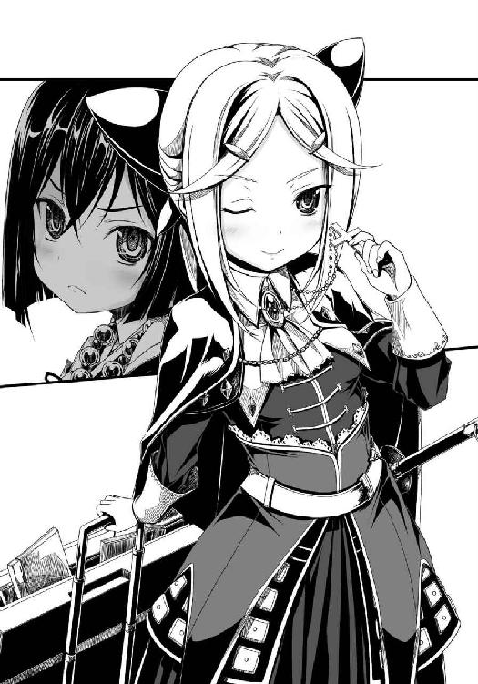
「お姉さまに巡り会うまで、私はずっと神を見いだすために旅をしていたわ。この国古来の神々を探してやまと御所の歴史や日ノ本の神話を調査し、海の向こうの神に希望を求めてキリシタンにもなったけれど、いくら祈ってもデウスさまはお姿を現してくださらない。そんな私に、お姉さまが天下布武というすばらしい夢を与えてくださったの！」
清楚で透明な笑顔はフロイスちゃんに似ている、武将というより聖職者の資質の持ち主なのかもしれないな、というのが良晴が氏郷に抱いた第一印象だった。
「乱世の平定、天下布武は天下万民の夢。これほど生きがいのある仕事はないわ」
氏郷は信奈の手の甲にキスをし、「今日から犬馬の労もいとわないわ、お姉さま♪」と声をあげながらひしっと抱きついて、幸せそうにほおずりをはじめた。
おいちょっとお年頃の女の子二人が抱きあうと胸と胸が押しつけられて目の毒なんだけど、と良晴は思わず視線を逸らしてしまった。
「ほ～らね、レオンはやる気あるでしょう？」
「俺の目には、別の意味でやる気まんまんに見えるが......おっと鼻血が」
「来ちゃったものはしょうがないわね。今日からこのレオンを正式に織田家の一員として迎え、万見仙千代に代わって旗本小姓衆を率いさせるわ！」
「なんじゃとっ？ 一門衆じゃとっ？」
「ゆくゆくは百万石ほどの大国を与えて、浅井長政の代わりに働いてもらうの」
「百万石っ？ こんな小娘が？ むきーっ、なのじゃ！」
「左近？ あんたのほうがずっと年下だと思うけど......」
一益は、突然出現した信奈の妹にやきもちを焼いているらしい。
蒲生氏郷は、愛おしげに信奈に抱きついたまま「織田姓はおそれおおいので遠慮させてもらいますけれど」と微笑んだ。
「ああ。憧れていたお姉さまの義妹にしていただけるなんて、この氏郷はほんとうに幸福者。これからは、お姉さまのただ一人の妹として天下布武のために頑張るわ」
「妹分ならここにもいるのじゃ！」
「ふん。私は、お姉さまのためなら死ねるわ。南蛮文化を大胆に採り入れる先進性、数々の斬新な政策、古い常識に囚われない発想と勇気。そしてたぐいまれなる美貌と強靱な精神力。はじめてお会いした時から、天下布武を実現してくださるお方はお姉さましかいない、と私は信じているの」
「くすぐったいから、そのへんにしておきなさいレオン。まあ相思相愛、お互いに一目惚れってやつね♪」
「これからはお姉さまのすべてを間近から見せていただいて、学ばせていただくわ」
一益が、良晴にひそひそと耳打ち。
「この小娘、のぶなちゃんを見る目がきらきらと輝きすぎておる」
「信奈に心酔しているんだろう？ 純真そのものだし、心強い仲間が加わったってことで、いいんじゃないかな」
「よっしーが知っている未来では、こやつは大物なのかの？ 姫よりも？」
「そうだな。一益ちゃんと比べるのは難しいけど、俺が知っている蒲生氏郷は文武両道の大物だよ。信奈の人を見る目はたしかだ」
「むきー。悔しいのじゃ！」
「妬かないの、左近。レオン、ほんとうは盛大に姉妹の儀式を執り行いたいところなんだけれど、悪いわね。今はこういう状況なの。打開策はない？」
「ええ。ほんとうに憂慮すべき事態ね、お姉さま」
氏郷は信奈から名残惜しそうに身体を離すと、とんでもないことを言いだした。
「このままでは、お姉さまは天下布武を実現できないわ！」
えっ、と良晴たちは思わず意表を突かれた。
「私もキリシタンだから、にゃんこう宗門徒たちの心はわかるの。彼らは本猫寺のために戦って死ねば猫極楽へ行けると信じている。過酷な戦が長引けば長引くほど門徒たちは現世に絶望し、より信仰心を深め、そして一揆の炎はさらに燃えあがる。悪循環だわ」
「それはわかっているわ。この悪循環を、断ち切らないと。門徒たちに、新しき世が来たことをこんどこそ知らしめないと」
「でもそれだけではないの、お姉さま。このままでは、越後の上杉謙信が織田家の不倶戴天の敵となってしまうわ！」
「デアルカ......って、ちょっと待って。どうして上杉謙信が？」
「そ、そうだよ。上杉謙信は義の武将だから、窮地に陥っている織田家を攻めたりしないって」
「こういう時は、利にさとい武田信玄のほうが強敵なんじゃないかしら」
良晴と信奈が、顔を見合わせた。
氏郷は「川中島での武田と上杉の死闘を思いだして。なぜ上杉軍の兵たちが一片の土地も得られぬあの合戦で死兵となって戦い続けたかを」と話を続けた。
「上杉謙信は自ら毘沙門天の化身を名乗り、実際に神として生きるために生涯不犯を宣言した『処女王』。神としての権威と武将としての強さを兼ね備えた、おそるべき人物。越後の将兵たちはみな、謙信のためなら喜んで死ぬの。私が、お姉さまのためなら笑って死んでいけるように」
良晴が、「上杉謙信が生涯不犯を誓っていたって話は聞いたことがある」と膝を打った。
「お年頃の処女王を神のように崇拝している、それが越後兵の強さの秘密か。川並衆より因業が深い連中だな......」
「相良良晴、あなたは黙っていて。私とお姉さまの会話に割り込まないで。その上、『処女』という神聖な言葉を男ごときが口にしないで。穢らわしい！」
「うわああ、久々に浴びる美少女の冷たい侮蔑視線はたまらねえやあ！ って、違～う！ 俺だって一応織田家の重臣だぜ、そりゃねーだろっ!?」
「お黙りなさい」
ぱちん、と氏郷が良晴の頬を張ったから、信奈も一益も凍りついてしまった。
「な......殴ったね？ 信奈にも殴られたことないのに、ってありまくりだったな......」
「ちょっとレオン。良晴を人間扱いするように！」
叩いた氏郷は「穢らわしいものに手を触れてしまったわ」と指先を拭っている。
叩かれた良晴は「なんだか懐かしい扱われ方でちょっとほっとする自分が悲しい」と泣いた。
「お姉さま。越後兵は、あたかも神に仕えるがごとき絶対的な忠誠を謙信に誓っている神の軍団。この神の軍団が『猫極楽』の教えを信じて死をおそれぬ本猫寺の一揆衆と連携すれば、もう手がつけられないわ」
「それでも、謀略にも長けた武田信玄のほうがしぶといと思うけれど。上杉謙信には領土欲がないもの。これまでも、弱きを助け強きをくじく義戦を重ねてきたでしょう」
信奈はまだ納得しないが、氏郷は静かに微笑みながら首をわずかに振った。
「武田家は、あくまでも人の力、武の力によって統率されているわ。甲州兵は精強だけど、同じ武家同士、どこかに落としどころはある。でも、上杉家は利を無視した神の軍団。武のみでは勝利を収めることはできない。利で動かぬ上杉が織田家覆滅に動いた時こそが、お姉さまの滅びの時よ」
「上杉謙信がなぜ本猫寺側につくとわかるんだよ？ もしかして予知能力でもあるのか？」
「そうじゃ。なんでなのじゃ」
「......あなたたち家臣たちは誰も忠告できないようね。お姉さまの妹である私が諫言してあげる。お姉さまと相良良晴の醜聞が、上杉謙信を織田家覆滅という大義のために立ちあがらせるのよ」
「な、なんだって？」
「上杉謙信は日ノ本の古き秩序を回復するために戦う軍神。相良良晴、未来から来た異人であるあなたがお姉さまと結ばれるなどという成り行きを、上杉謙信は決して認めないわ。私も認めないけれど。二人の恋は、処女王・謙信にとってなによりも許しがたい不義よ。あなたがこれ以上お姉さまの隣でのさばってそのサル面を晒し続ければ謙信はお姉さまを生涯の敵と思い定めるのよ」
「今までは来る来る詐欺で終わっていた上杉軍の上洛が......お、お、俺のせいで現実のものになってしまうと、そういうわけか？ 信奈が身分違いの恋に突っ走れば、潔癖な上杉謙信の逆鱗に触れると？」
「そうよ。上杉謙信は武田信玄とは違い、現実の利を顧みないもの。あなたとお姉さまとの噂が真実だと知れば、彼女は疾風の勢いで神の軍団を率い織田領に侵攻してくる。正義の鉄槌を振るって越後へ風のように引き返していた今までの義戦とは違うわ。織田家の領土をことごとく制圧する総力戦よ。和睦交渉も通じない」
「それじゃあ、俺はどうすればいいんだ？」
氏郷は、良晴に向かって、言った。
「簡単なことでしょ。あなたは天下布武というお姉さまの夢、天下万民の悲願にとって邪魔な存在になってるの。お姉さまと別れて、潔く織田家から去ってちょうだい」
信奈が「えっ？」と悲鳴のような声をあげた。
「ちょっと待ちなさい、レオン！ それはダメよ！」
「お姉さまは上杉謙信にならい、生涯不犯の処女王になると宣言すべきだわ。それで一揆勢が燃やしている憎悪の炎は弱まり、上杉謙信は織田家と和を結んで再び武田信玄や北条氏康と合戦をはじめるわ。相良良晴一人の犠牲で、お姉さまの夢、天下布武が実現するのよ！」
氏郷は信奈を恍惚とした表情で凝視しながら、「天下布武は万民の夢でもあるの。乱世に苦しむ万民を救えるお方は、お姉さましかいない」と繰り返している。
「の、信奈に、毘沙門天になれと言うのかよっ？」
「わ、わ、わたしが、そんなものになれるはずないでしょう!?」
「いいえ。お姉さまは武田信玄以上の政治力と唯一無二の先見性を、つまり民を統べる王の力を持っているお方。その上、上杉謙信に並ぶ神の権威をも手に入れられれば、お姉さまは将兵や民から絶大な支持を得られるわ。足利将軍はもう不要となり、本猫寺をも呑みこんでしまえる」
「レオン？ わたしはそんな神の権威なんていらないわ。あくまでも人の力、武の力で乱世を平定するのよ！」
「でも、武家の棟梁である将軍の位にこだわった足利幕府の失敗を見て。この国の戦乱を平定するには、武力だけでは足りないの。民心を安んじ下克上の輪廻を終わらせるには、絶対的な神の権威もまた必要なの。にゃんこう宗やキリシタンのもとに人が集まるのも、神の権威を人々が求めているからなの」
「だから処女王を宣言して、自分自身を神に祭りあげろと？ 謙信との対決を怖れて、民の支持を得るために、人としての生き方を捨ててまで媚びろと言うの？」
「媚びるのではないわ。お姉さまには気高き孤高の道、人の感情を捨てた神の道を選んでほしいの。お姉さまがあくまでも天下布武をめざすならば、既存の王や将軍の地位に甘んじていてはダメなの。地上も精神の世界もことごとく支配する『女帝』の高みへとのぼるべきよ。誰のためでもない、天下万民のために！」
「......レオン。あなたの唱える理屈は正しいと思うけれど......」
良晴と信奈の間に、言いしれないほどに気まずい空気が流れていた。
（信奈が、地上の王権と神権を一人で独占する──『女帝』か。官兵衛のタロットの予言どおりだ！）
今の信奈を危機に導いている張本人は俺だったんだ、と良晴は深い衝撃を受けていた。
（信奈の苦しい立場をわかっていたつもりでも、俺はこの恋に夢中でそこまで考えが至らなかった）
領国内のあちこちで一揆に手を焼いているこんな状況で、身分すらない良晴を近衛前久の養子にしてあまつさえそのまま関白にするなどという無茶を信奈がやらかせば──。
信奈を秩序破壊者と認めた上杉謙信が、神の軍団を率いて、越後から全力で攻め寄せてくる。
「ダメだ信奈。今はまだ上杉と戦える時期じゃない。このままじゃ八方ふさがりになっちまう」
「良晴、あきらめないで。また武田信玄に謙信を牽制してもらえばいいのよ」
「勝千代ちゃんは織田家が浅井朝倉の領土を併合したのを見て、織田家に甘すぎたと反省しているはずだ。いずれは決戦しなければならない相手、さすがに二度も同じ手は通じねえ」
「でも。いくら五人の部隊長を揃えて複数戦線の同時展開を得意とする織田軍といえども、本猫寺・毛利・上杉の三者を同時に相手にするなんて、到底もたないわ」
窮した信奈は、顔を覆ってしまった。
良晴はそんな信奈を抱きしめて励ましたくなったが、氏郷の鋭い視線が気になって、どうしても信奈の肩に手を回すことができなかった。
（俺はもうなにもあきらめないと決めたが、それは俺自身の命とひきかえの決断だ。だが俺は信奈に同じことを言えるのか。俺のために信奈が、死んでもいいのか）
言えるはずがない。
氏郷が「解決策がひとつだけあるわ」と沈黙を破り、再び口を開いた。
「お姉さま、村上武吉が宝箱を持参したはず」
「これなのじゃ」
一益が差しだした宝箱には鉄の錠前がかけられていたが、氏郷はそれをしなやかで細い指で引きちぎって強引に開いてしまった。
こんな細い身体のどこにこんな力が、清楚でか弱い見た目からは想像もできないけどやっぱり武将なんだな、と良晴はまた驚かされた。
「お姉さま。見て、これが八尺瓊勾玉よ」
氏郷は、宝箱の中から一個の古びた珠を取りだして見せた。
「勾玉？ その珠が」
「この国には古来より三種の神器という宝具があるでしょう。これは、そのうちのひとつ。かつて源氏と平家の海上決戦・壇ノ浦の戦いの際に海中に沈み、失われていた神器よ」
「源平合戦で失われた神器！」
「ええ。これで、お姉さまのもとに三種の神器が揃ったのよ」
「デアルカ。でも三種の神器はやまと御所に伝わる宝物でしょう。それがこの合戦とどう関係しているの？」
「三種の神器を用いれば、お姉さまは天下布武の戦いに勝利できるの」
「......デアルカ......ずいぶん嘘臭いわね」
「信じて、お姉さま。私は決して嘘はつかないわ。立場を守るためにあいまいに言葉を濁すことはあっても、嘘はつかないと己自身に誓っているから」
繊細な顔立ちの氏郷が大きな瞳を濡らして涙ぐむと、誰も文句を言いだせなくなる。
生まれながらに、高貴かつ繊細な雰囲気を放っていて、知らず知らずのうちに場を支配する力を持った少女らしい。
「神器って、あやしげな霊力でも発揮するわけ？ わたしはそういうまやかしの類は信用しないんだけれど。それに、かつて神器に霊力があったとしても、過去の話よ。もうすでに、竹中半兵衛が陰陽道の時代を終わらせたわ」
「これらは陰陽道よりもはるかに歴史の古い、やまと御所に伝わる宝具よ。この国の大地から陰陽道の力が失われてもなお、神器は──起こすの。この国に残された、最後の奇蹟を」
「レオン。わたしは神の力ではなく、人間の力で天下布武をなしたいのよ。そうでなければ、新しい世、新しい国を造ることにはならないわ」
ああ、やっぱりお姉さまは誰よりも聡明なお方、と氏郷が切なげに息を漏らした。
「それに神器は、この国の神事をつかさどる姫巫女さまのものでしょう。わたしはこの国の王になるつもりだけど、神事まで自らつかさどる野望なんてないわ。両者は、分離されなければならないのよ」
「未来の世界ではそうなるかもしれないけれど、時代はまだお姉さまに追いついていないわ。お姉さまは王権と神権をともに手に入れねばならない運命なの。本猫寺に、足利将軍に、そして上杉謙信に打ち克つためには、神にならねばならないのよ」
信奈は、南蛮椅子の上にお尻を下ろして、大きなため息をついた。
「レオン。相談したいことがあれば呼び出すわ。今日のところは下がりなさい」
「はい、お姉さま！」
「で、その勾玉をどうするつもり？ わたしは、使わないわよ」
「これはこの国の神器。キリシタンの私が所持してよいものではないわ。ひとまず伊勢神宮の斎宮である左近さまに預けるわ」
「なんじゃと、姫に？」
良晴の背中に隠れていた一益の小さなてのひらの上に、氏郷は勾玉をそっと置いた。
「たいせつに持っていなさい。いずれお姉さまはこの神器を必要とされるから」
そう言って微笑みながら、氏郷は良晴のほうを振り返った。
「相良良晴、あなたの役目は終わったわ。今日から、お姉さまを支える家族の役目はこの私がつとめるから。そろそろお帰りなさい、自分の世界へ」
氏郷の透きとおった声に悪意がこもっていないだけに、良晴は言い返せなかった。
「それでは、お姉さま。ごきげんよう」
氏郷が静かな微笑を浮かべながら信奈たちの前から立ち去った直後。
信奈が、「あ～っ純真な子に蔑まれるほど辛いことはない。十兵衛ちゃんの悪意がこもった嫌みのほうがまだマシだっ」とうめいていた良晴の耳を引っ張ってきた。
「ちょっと良晴！ レオンのあれくらいの言葉でへこまないでよ。あの子はちょっとばかり純真すぎるだけなのっ！」
「本猫寺との戦を止められなかった俺は、氏郷が言うとおり、もうお役御免なのかも」
「バカ言っていないで目を覚ましなさい！ とにかく作戦変更よ、すぐに出発して！」
「え？ 出発？ どこへ？」
「鈍いわねえ。播磨よ」
「は、播磨？」
「三木城を包囲している部隊を半分、大坂戦線へ回さなければならないわ。大至急、十兵衛を引っ張ってきて。任せたわよ！」
「そ、そうか。勝家たちは一揆勢と戦っていて動けないから、今すぐ大坂へ回せる部隊は」
「播磨の三木城包囲軍だけよ。毛利はすでに、三木城から本猫寺に攻防の舞台を移しているわ。全軍は無理でも、十兵衛の部隊だけならば動かせる。お願いね！」
「お、おう。しかし、お前はタフだなあ」
「多夫？ わたしは、旦那さまは生涯ただ一人と決めているわよ。まったく男ってどいつもこいつも嫉妬深くて疑い深いのね！ 処女王じゃないとイヤだとか多夫がどうとか」
「なぜ怒りだす？ 誤解だ。お前はなにか誤解している！」
良晴は（悩むな俺。今は信奈を勝たせるために全力を尽くせ。いざとなれば信奈のためにいつでも命を捨てると俺は決めたはずじゃねえか、これしきのことであわてても意味がねえ）と自分の頬を叩いて気合いを入れ直した。
（処女王、か。上杉謙信は義の武将であると同時に、神の軍団を率いる毘沙門天の化身だったんだな。だが俺は、信奈にそんな孤独な生き方を選ばせたくはない。たとえ俺が信奈の前から去ることになっても、信奈には一人の女の子として幸せになってほしい）
業火に包まれた本能寺の部屋の中へと、血に塗れた信奈が飛びこんでいく姿を、良晴は幻視していた。
（信奈の運命を変えるためならば俺は命を投げだせる。だが、ここで俺が立ち去れば──信奈は本能寺の変を回避して生きのびることができるのだろうか？ その確信さえ抱ければ、俺は──）
苦い、思いだった。
※
良晴が鬼宿丸から別の船に乗り換え、播磨へ向かったあと。
「のぶなちゃん。あんなのを妹にするなんて、やばいのじゃ。何か企んでおる」
信奈を見かねた一益が「姫の力を使ってあいつの企みをしゃべらせてやるのじゃ」と提案したが、信奈は首を縦に振らなかった。
「左近？ もしかしてわたしに妹ができてすねてるの？ 今は各地の戦線が泥沼化する前に、総本山の大坂本猫寺を陥落させる時よ」
だが、はたして川と湿地帯に守られたあの巨城を力押しで陥落させられるだろうか？
各地で一揆が同時発生している。信奈が大坂に動員できる兵力は少ない。
雑賀衆と村上水軍、陸と海に強敵を抱えた信奈の表情はこれまでになくこわばっていた。
目の前に立ちはだかる強敵のためだけではない。
上杉謙信がもしも織田家を仇敵と定めたら、という怖れのためだけでもない。
信奈は、迫り来る自らの運命を前に、震えていたのだ。
（良晴のあんな苦しそうな表情を、わたしははじめて見た。未来から来た良晴は、わたしの未来を知っているのよね。わたしはレオンが予言したように近い将来、破滅するのかしら。海の向こうの世界へ出ることもなく）
以前からわずかながらに感じていた破滅の予感が、少しずつ、大きくなっていた。
（もしもわたしに希望に満ちた未来があるのならば、良晴はわたしの夢をかなえると誓ってまでずっと遠くの未来から来てくれて、わざわざこの世界に留まってくれなかったはずだもの。良晴は、わたしが破滅する未来を、わたしの夢が決してかなわないということを、最初から知っていたんじゃないかしら。だから、こんなにもわたしのために尽くしてくれて。自分が元の世界に帰る方法なんて、見つけようともしないで）
でももしもほんとうに良晴との恋のために死ぬのならば、わたしは絶対に後悔しない、と信奈は良晴に伝えたかった。
（ただ......その時、良晴がわたしの未来を守るために「この恋はもう終わりにしよう」と口にしたら、その時こそわたしの心は、壊れてしまう）
信奈は、自分自身の破滅よりもその良晴の決断への予感を怖れ、どうしようもなく怯えていた。
巻ノ四 姉と妹
大坂本猫寺へ連なる制海権を毛利方が保持するか、織田方が奪うか。
この次に行われる海戦こそが両軍の決戦の時となる。
村上水軍は摂津の尼崎の港に集合していた。
毛利軍の山陽方面指揮官・小早川隆景を旗艦に迎えるためだった。
村上武吉と海賊たちは、甲板上にこれでもかと海の幸を取りそろえて、凛々しく成長した小早川隆景を大歓迎した。
「村上名物、焙烙焼きを準備したぜお嬢！」
石を敷いた土鍋に伯方の塩と採れたての魚介類をぶっこんで豪快に丸焼きにする、それが村上水軍の海賊どもが好んで振る舞う「焙烙焼き」だ。
「さあさあ、食え食え！」
「ありがとう。はむはむ」
「お嬢はちんまり小柄なままだが、美人になったよなあ」
「相変わらず無表情で、なに考えてるかわかんねえけど」
「俺の嫁に迎えられねえかな」
「俺たち海賊どもにゃあ高嶺の花よ」
「......兄者よりよきおのこがいれば、考える」
「お嬢、そいつは無理な注文だぜ！」
「あの、九鬼なんとかみてえに行き遅れる前に旦那を探すこった！」
小早川隆景が命じた第一の策が完璧に成功したことで、海賊たちは否応なしに盛り上がっている。
饗宴が続く中、村上武吉と小早川隆景は摂津にそびえる六甲山麓の山々を尼崎の海上から眺めながら、次の作戦の打ち合わせに入った。
「慎重なお嬢自らが参戦するのか」
「厳島の戦いと同様に、次の一戦で完璧な勝利を収めなければ戦いは泥沼の長期戦になる。だから、私自らが先頭に立つ」
「ほう。織田信奈の首を盗るのか」
「これは半ば、織田信奈の天下人としての器を見定めるための合戦だった。しかし本猫寺が参戦したことで状況が変わった」
「にゃんこう宗門徒どもと織田家の全面抗争。この戦が長引けば長引くほど」
「天下統一は遠のき、この国はさらに乱れる。父上も兄者も、そのような未来は決して望んでいない」
「ふん。陸の者たちは気苦労が絶えんな」
「この国にはもう猶予がない、時間が残されていない。一刻も早く天下を統一する英雄がでてこなければ、この国は南蛮勢力に侵食されて滅びると私は思う」
「さっさとお嬢が天下を盗っちまえば済むだろう」
「......私はそのような器ではないし、この国の未来の姿を思い描く力もない」
「しっかりしな。自信を持て。お嬢は、頭が良すぎる。自分に怯えすぎているんだ」
毛利家の三代目はまだ幼い。兄者さえ生きておられたら、と隆景は折れそうに細い腰を自分の腕で抱きしめてつぶやいていた。
「お嬢。本猫寺の命綱は大坂湾と本猫寺をつなぐ木津川口だ。いまだに木津川口を封鎖しないのは、織田信奈の水軍を先に木津川口に入れるということか？」
「そうだ。父上はかつて厳島に陶晴賢の軍勢をおびき寄せて、嵐の夜に乾坤一擲の奇襲をかけた。両家の国力差をかんがみ、父上はただ一戦に賭けたのだ。そして、その賭けに勝利した」
「あの織田信奈が、陶晴賢のようにまんまと誘いに乗るだろうか？ 堺で一瞥したが、あの小娘はすげえ目つきをしていた。日輪のように燃える瞳の持ち主だ」
「陶晴賢の末路、海戦に持ちこむ毛利得意の戦術、いずれも承知していながら織田信奈は木津川口に出てくるしかない」
「ほう？」
「雑賀衆が守る本猫寺を落とすことは、たとえ上杉謙信や武田信玄をもってしても困難。織田信奈は火力で雑賀衆に対抗するため、堺で鉄砲をかき集めているはず。両軍ともに大量の鉄砲を導入して行われるこの大坂の戦いは、誰も見たことがない凄惨なものになる」
「その激戦の最中に村上水軍が木津川口から大坂へ入れば、文句なしに毛利の勝ちだな」
ともあれ戦況は先手を取った当方が圧倒的に有利で、織田信奈はもはや自ら戦術を選択できる立場にはない、と隆景は言った。
「織田信奈はどのみち、こちらからの誘いと承知した上で木津川口を守り、村上水軍の加勢を阻むしかない」
「先の先の先まで読み尽くしているな。さすがはお嬢だ」
「しかし播磨で思い知らされたように、織田信奈とその家臣団には不確定要素が多すぎる。とりわけ、未来人の相良良晴と九鬼水軍を率いる滝川一益」
「心配するこたあねえ。あんたの兄貴に代わって俺たち村上水軍の男どもが、お嬢を守る」
「......かたじけない。いつも、お前たちに頼りきりで」
「なに。お嬢は、この先のこの国にいなくてはならない者だからよ。陸の者と俺たち海の者との間をつないでくれる貴重な姫だからよ」
※
播磨の三木城包囲陣。
茶会を開く権利を信奈から授かった良晴の陣営に茶の湯の師匠として派遣されていた千利休が、持ち運びできる茶会道具一式を本陣内に広げて「......（みんなかわいく、美しく、そして仲良く）」と茶の湯の心「ごす・ろり」を伝授しようとしている中。
相良軍団を預かっている山中鹿之助と、丹波から加勢している明智十兵衛光秀の二人の姫武将が、茶の湯の心もへったくれもない勢いで激しく言い争っていた。
「このまま殿のお留守をただ待っていればいずれ後手に回り、殿のお立場が危うくなります！ ここは特攻あるのみです！」
悲しそうに眉を下げた利休が「......（怒ってはダメ。ごすの心。ろりの心）」と無言で訴えるが、鹿之助と光秀はそれどころではないらしかった。
この二人、なにしろ顔を合わせればずっとケンカしているのである。
「なにを言っていやがるですか。こっちが敵を包囲している側なのに、どうしてわざわざ敵が待ち構えている城に突撃しなければならないですか？ 蜂の巣にされるですっ」
「問題ありません。七難八苦、不肖この鹿之助が見事に玉砕してご覧に入れます。光秀さまは黙って座っていてください」
「問題ありすぎですっ！ お前がどうなろうが知ったこっちゃないですが、山中どのをむざむざ戦死させたらこの十兵衛が相良先輩に叱られます！」
「いいえ！ 殿はきっと鹿之助の忠義の心をおほめくださいます。もしかして一粒くらいは涙をこぼしてもらえるかもしれません......私ごとき田舎者のために、あの凛々しい殿が涙を......うっ。はあはあはあ」
「ええい奇っ怪な。お前とは考え方というか頭の中身がまるっきり合わないです！ お前は勝ちたくて戦をやってるのではないのですか？」
「光秀さま？ ちょっとばかり土岐源氏出身の名門だからと言って、私を出雲の田舎者と嘲笑するとは。ですが私はこれしきのことで音をあげたりいたしません。もっともっと馬鹿にしていただきたい！」
「きいい～！ そんなこと考えていないですう！ 人を小姑扱いするな、です！」
「山中馬鹿之助と呼んでいただいても構いません、覚悟はできています」
「お前、日頃からそんなことばかり考えていやがるですか？」
「罵られれば罵られるほど、七難八苦が私を強く鍛えてくれるのです。さあ、私にとびっきりの罵詈雑言をぜひ。はあはあはあ」
「なんでそこで息を荒らげるですか！」
勝てばよかろうなのだ～！ な光秀と、独自の価値観に基づく滅びの美学を追求している鹿之助の相性は、最悪らしかった。
「光秀さま、とにかく攻めましょう。地図をご覧ください。三木城の上流にあるこの川をせきとめて、ここの堤を壊せば、きっと私たちの陣めがけていっせいに水が押し寄せて来ます！」
「なんでそんな手間暇かけて自滅しないといけないですかっ」
「もちろん七難八苦のためです！ きりっ！」
「あああ。ダメです。こいつと一緒にいると落ちる城も落とせないです！ そもそもお前、包囲網に出口を作って三木城の足軽たちにおかゆをタダで配っていますね？ あれはどういうことですか！」
「それはですね。お腹をすかせている人にいきなり腹一杯にぎりめしを食べさせると、縮んでいた胃が爆発して死んでしまうからです。悲惨すぎますね、たまらない死に方ですよね、はあはあはあ。でもおかゆならば、胃に優しいのでそういう心配はありません」
「そういうことを言っているのではないです！ 篭城している足軽どもを、城を包囲しているこっちが喰わせてやってどうするですか！ これじゃ永遠に三木城を落とせないです！」
「すべては殿のご命令ですから」
「先輩の？」
「足軽たちに戦もやらせず、ただ飢えさせて苦しめてじわじわ餓死させるなんて真似はやっちゃいけねえ。逃げる者はそのまま逃がしてやれ、食を求めてくる者にはおかゆを喰わせてやれ。できる限り生かしてやって、死なせるなと。ああ......殿はなんとお優しい。私、ちょっと三木城に入って篭城してきます」
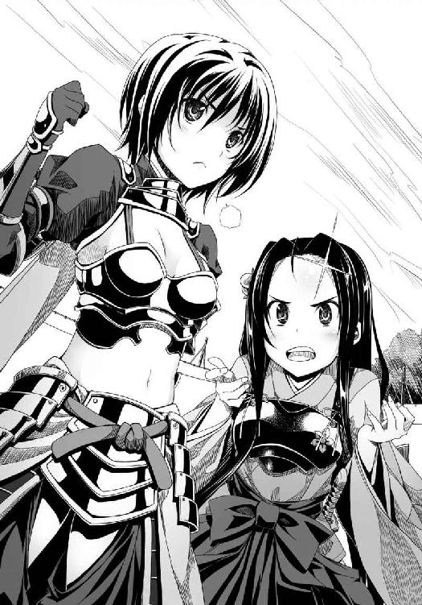
「えーと。寝返ったら躊躇なくすぱっと斬るですよ？」
「ほんのささいな誤解から仲間に斬られる、そんな人生の結末も悲壮でいいですね。ぜひどうぞ！ できましたら背後から予告なしに、むしろ騙し討ちで！」
「ああ、頭が痛くなってきたです。相良先輩らしいといえばらしい命令ですが、このままでは何年かけても三木城は落ちないです」
「光秀さま。日ノ本各地で織田家の諸将が華々しく活躍する姿を眺めながら、ここでともに朽ち果てましょう。これぞまさに七難八苦です」
「アホかーっです！」
こんなどうしようもない不協和音が鳴り響く本陣に、慌ただしく総大将の相良良晴が飛びこんできた。
「うおーい！ 信奈から新しい下知がきたぞおおお！」
「あれ？ 相良先輩はてっきり堺で村上水軍にやられたものとばかり」
鹿之助が、良晴の前に米つきバッタのように這いつくばって一礼した。
「殿、お久しぶりです！ この地図をご覧ください。三木城の上流にあるこの川をせきとめて、ここの堤を壊せば、きっと私たちの陣めがけていっせいに水が押し寄せて来ますよ！」
「な、なぜそんなことしなきゃならねえんだよ？ それより、すげえ喉が渇いたんだけどさ」
「......（お茶をどうぞ）」
「ああ、ありがとう利休ちゃん！」
「......（二杯目）」
「おお。一杯目よりも熱くてうまい」
「......（三杯目）」
「これは熱い！ 順番にお茶の温度があがり、そして量はどんどん減らされている。さすがは利休ちゃん、お茶を点てさせれば天下一だな」
「......（四杯目）」
「いやもうお腹いっぱいだから」
「......（いろいろなあやしい錬金術の薬を混ぜて飲ませてみて、人間の心身がどう変化するか実験したいので、十杯は飲んでもらわないと）」
「ちょっと待てえええ！ これって人体実験だったのかっ!?」
「......（錬金術の力で、本猫寺当主のような獣耳をはやしたい。不可能ではないはず）」
「俺は遠慮する！ それより十兵衛ちゃん、軍団を率いて大坂へ来てくれ！」
「え、今からですか？」
「決戦がこれから、大坂本猫寺ではじまりそうなんだ！」
「なーんか、先輩ともども玉砕しそうで気が進まないですぅ」
「殿が私より先に玉砕するなんて、天が許してもこの鹿之助が許しません。きりっ」
「そうそう。このヘンな女はいったいなんなんですか先輩。きーっ！」
もしかしなくても、すげえ不仲そうだなこの二人、と良晴はたじろいだ。
「信奈の戦略はこうだ。毛利軍は三木城を救援するために今も西播磨に布陣しているが、大坂本猫寺が足利義昭の誘いを受けてにわかに立ちあがったために、舞台は本猫寺を巡る攻防へと移った。播磨には足利義昭と吉川元春が残り、小早川隆景は村上水軍を率いて大坂へ迫っている。しかし」
良晴は畿内の地図を広げて、これまでの経緯とこれからの両陣営の動きを光秀に説明した。
「先輩、各地に書きこまれているこのバッテンは！ もしやあちこちで同時に一揆が起こりやがったですね。勝家どのも長秀どのも元康どのも、動けないのですね？」
「ああ。今、摂津の信奈のもとには蒲生氏郷率いる旗本親衛隊と、一益ちゃんの水軍しかいない」
「ぬぬ？ 蒲生氏郷って誰でしたっけ、先輩？」
「近江の名門、蒲生家から信奈のもとに人質として送られてきた義妹だよ。すげえ切れ者だが、純粋すぎるぶん万見仙千代よりもやっかいだよ」
「ああ。あの、古文書ばかり読んでいる鶴千代どのですか」
「信奈は鶴千代じゃなくて、レオンと呼んでいたぜ？」
「なにもあんな、苦労を知らないお嬢さまに頼らなくても」
「おいおい。同じ名門出身じゃねーか。氏郷と仲良くしろよ？」
「同じではないです。十兵衛は血筋こそ高貴ですが広く世間を見分してきた苦労人、あいつは日ノ本の神話の研究なんぞに没頭していた世間知らずの箱入り娘です。戦もまつりごとも学問通りにはいかないですよ？」
「なるほどなあ。たしかに十兵衛ちゃんはちょっと所帯じみてるところがあるな。対する氏郷は温室育ちの薔薇といった趣だ。無垢そのものというか」
「むきー！ それより先輩、摂津かいわいには織田方の中堅武将がわらわらいやがるはずですが」
「みんな、あちこちに付け城や砦を築いてそこを固めている。本来は本猫寺への補給路を断つためだったが、いまやそこかしこで一揆が発生しているから、みんな動けない。だから信奈のもとには今言った兵力しか集まっていないんだ」
特に本猫寺と同じ上町台地にある最前線の天王寺砦が落ちたら、包囲戦は失敗に終わる、と良晴が地図を閉じながら言った。
「先輩が危惧していたとおりになったですね。自国領の民がいっせいに一揆を起こすなんて、まるで悪夢です」
「ああ。民を殺すわけにはいかねえからな」
「民を殺したらそのぶん年貢と税が減りますですからね。孫子いわく、お百姓さんと商人は生かさず殺さずですよ先輩」
「いや孫子はそんなこと言ってねーから。たぶん」
拝みたいなら猫でもなんでも勝手に拝みやがれです、どうしていちいち信奈さまに楯突いてくるですか、と光秀がいらだたしげに地団駄を踏んだ。
実は俺と信奈の醜聞も原因の一つで、と良晴はなかなか言いだせない。
ずきずきと胸が痛んだ。
「そうです。摂津といえば、キリスト教かぶれの高槻城主・高山右近がいちばんアテになるはずですが？」
「高山右近は、今回はかえって動きづらいんだ。キリシタンが本猫寺と戦ってもよいのかどうか、ひたすら悩んでいるらしい」
「なぜです。いっそこのままキリシタンとにゃんこう宗の宗教戦争にしちまいましょう。信奈さまが勝ったらにゃんこう宗の寺をぜんぶ南蛮寺に建て替えてやると約束してやれば、高山右近はきっと目の色を変えて獅子奮迅の働きを！ 必ずや摂津一円を火の海に変えるです！」
「えーと、十兵衛ちゃん？」
「見せやがれです、右近の力！ 異教徒どもを薙ぎ払えー！」
「頼むから空気を読む能力を身につけてくれ」
「失敬な。いつも空気くらい読めてますっ！」
「今、大坂本猫寺には鉄砲五千を揃えた雑賀衆と、毛利からの援軍。これは弓隊が主力らしい。そして大坂からほど近い尼崎の港には村上水軍が。信奈は圧倒的に不利だ」
「わかりましたです。自分は陸路から信奈さまを支援します。今すぐに大坂戦線へ馳せ参じるです！」
あのう、私は？ と鹿之助がおずおずと良晴にたずねた。
「悪いが、鹿之助はこのまま三木城の包囲を続けてくれ。毛利軍に三木城を開放されたらその時点で織田の負けだからな」
「ああ。織田家が天下をかけた決戦をはじめるこの時に、私一人だけこの草深い三木に放置されるんですね。あまりにも甘美すぎる七難八苦ですが、悲しすぎてさすがにいたたまれません。私は殿にとって、しょせんは外様武将なんですね......はあはあはあ」
「うきゃー！ いったいなんなんですか先輩、こいつは！」
「ええと。鹿之助はいろいろ苦労しすぎてこういう性格になったんだ、悪気はないので許してあげてくれ」
「はあ。まあ、先輩がそう言うのでしたら」
「とにかく急ぐぞ！ 時間がない！」
殿はわざわざ三木まで来ておきながらこの役立たずの田舎者に夜伽を命じられないのですか？ となぜかぶるぶる震えて苦しんでいる鹿之助に「三木城の兵を飢え死にさせるな」と再び命じて、良晴は立ちあがった。
休む暇もなく、このまま光秀とともに摂津へと急行しなければならない。
「頼むぞ鹿之助。摂津では今、武将も兵力も足りない。猫の手も借りたいんだが、三木城の包囲を解くと毛利軍がいっせいに押し寄せてくるからな。もしも吉川元春が攻め寄せてきたら、手勢だけで撃退してくれ。できるか？」
「はっ。吉川元春はわが仇敵です、手の内はよく知っていますのでお任せください！」
そんな中、利休は「......（茶室を片付けてからゆるりと行く。そちらは一刻も早くお戻りを）」と無言で良晴をうながすと、持ち運びできる便利な茶道具一式をぱたぱたと片付けはじめた。
良晴と光秀は、道中、ひさびさに二人きりとなった。
だが良晴は「恋を捨てろ」と諫言する氏郷が信奈の前に現れたことが気がかりで、光秀のいつものボケにうまく対応できないでいる。
「あのー。先輩を旦那さまとして母上に紹介したいのですが」
「ああ、いいんじゃね？」
「むきー！ なんですかその薄い反応は。先輩、もしかして十兵衛の言葉を聞いていませんねっ！」
「おっと、しまった！ まさかすでにお母さんが待機しているとかっ？」
「母上は坂本城にて、病で臥せっていますです。こんなところまで連れてこられませんです」
「えっ？ そ、そうか。ごめん」
「いえいえ。母上が快癒したあかつきには、いつでもどこでもさくっと先輩を紹介して祝言の日取りを決定いたしますから！」
「しまった。十兵衛ちゃんが一瞬しおらしい表情を見せたので油断した！」
「この十兵衛が丹波を攻め取ったらその時は問答無用待ったなしで祝言ですよ先輩！」
「いや、だから、その話は」
「早く先輩のもとに嫁いで、母上に安心していただかないといけないです」
またこのパターンか、十兵衛ちゃんも進歩がないなあ、と良晴は苦笑した。だが。
「......実は、坂本城の母上の容体が悪化していて、とても危ないのです」
「容体が悪化？」
「うわごとのように、私の祝言が見たい、と繰り返しておられるそうです。もしかしたら十兵衛が祝言をあげる姿を見せれば持ち直すかも、と曲直瀬ベルショール先生が」
「じゅ、十兵衛ちゃん？ それって、お母さんが危篤ってことか？ 一大事じゃないか！」
「ん、まあ、一大事かもしれない......ですね......」
「そんな切羽詰まった状況だったなら、なぜ播磨に残ったまま動かなかった。どうして今まで黙ってたんだ？」
「山中どのにこんな話を知られたら、私を暇にしようと勝手に決めて三木城に特攻しやがるです。下手したら『私が死ねばなにもかも丸く収まるんです』とかおかしなことを言いだして毛利の本陣までのこのこ死にに行きかねないです」
「それはそうかもしれないけどさ。お母さんをこのままにしていちゃまずいぜ!?」
「だいじょうぶです先輩、十兵衛はこの大事な時に戦線を離れたりはいたしません！ 明智十兵衛光秀は、信奈さまのために一日たりとも休まずがんばるのです！」
「でも」
「勝ちゃいいんです、勝てば！ 和睦を破ったずっこい本猫寺なんかこの十兵衛が一日で倒してやるです！」
「下手したら何年もかかる長い戦になるぜ、今回は」
「先輩は、十兵衛に母上の命と信奈さまの天下のどちらかを選べと言うですか!? どちらも同時に手にすることは十兵衛にはできないと？」
「いや、そんなつもりはないよ。でもな」
「お任せあれ。十兵衛はこう見えても先輩とは出来が違う天才ですよ。颯爽と戦って母上の命も信奈さまの天下も、どちらもさくっと手に入れるです！」
光秀の悲しげな作り笑いが、良晴がなにを言おうがもう彼女の覚悟を動かすことはできないという真実を明確に語っていた。
（そんな。いつまでも十兵衛ちゃんをごまかしていていいんだろうか、俺は）
そうだ。
天下万民の声を代弁する氏郷が、信奈に決断を迫っている。
これ以上、この三人のあいまいな関係を引き延ばしていてはならない。
（そして俺の選択はもう、決まっている。十兵衛ちゃんには申し訳ないが）
俺が決断しなければならない時もまた近い、と良晴は気づいた。
（なにもあきらめないと俺は誓ったが、俺の魂はひとつしかない。先に十兵衛ちゃんと出会っていれば、もしかしたら俺は。でもこればかりは、どうしようもない）
十兵衛ちゃんは真実を知った時、どんな顔をするんだろう、と思うと良晴はいたたまれなくなった。
※
いきなり出端をくじかれた信奈と九鬼水軍は、堺に集結したまま着々と決戦準備をはじめていた。
小早川隆景の言葉どおり、裏をかかれた信奈はすでにこの戦での主導権を奪われている。もはや、隆景が敷いた路線の上で戦わなければならなかった。
勝家も長秀も元康も信澄も各地の一揆に釘付けにされて動けず、相良良晴軍団も播磨戦線から動けない。
いまや、遊軍として唯一動ける明智光秀と、織田方の水軍を率いる滝川一益の二人が勝敗の鍵を握ることになった。
とりわけ、水軍の将・一益の動向がこれまでになく重要となっている。
「み～んな、姫に期待しているのじゃ。今までよっしーやみっちゃんの陰に隠れて地味じゃったが、やっと姫の時代が来たのじゃ！」
一益は「あたしは祝言をあげるので志摩へ」と何度も逃亡を企てる九鬼嘉隆を執拗に押しとどめ、村上水軍に怯える堺の町衆たちに「堺を」「守ってや」「たのんます」と伏し拝まれて得意満面。
信奈に降参した津田宗及は（あの方はたしか、茶器に目がないとか）と一益を自宅に招き、機嫌を取っていた。もちろんそれだけが一益を自宅に招いた理由ではないのだが、もうひとつの理由はすぐに明らかになる。
めずらしい茶器をわけてもらえると聞いて大喜びで津田宗及の屋敷に泊まっていた一益のもとに、その日、二人の来客が訪れることになった。
二人は茶室の門前で鉢合わせになった。
南蛮風の黒衣に身を包みロザリオを握りしめた蒲生氏郷と、「滝川さまをお招きしました。すぐにおいでください」と津田宗及に呼ばれた雅な麻呂姿の関白・近衛前久である。
挨拶をせねばならない二人だが、会話もはずまない。
「ぐぬぬ。き、キリシタンがいったい何用でおじゃる」
近衛はどういうつもりか大きな黒い籠を背負っている。
氏郷は、相変わらず古文書をぎっしりと詰めこんだ台車を引いている。
この異様な構図は、完全に「間違い探し」だ。
「あなたこそ。関白ともあろうお方がそんな荷物を背負ってまで織田家の一家臣にどのようなご用？」
「そそそそちには関係のないことでおじゃる！ そちゃ、三種の神器のひとつを盗みおったとか！ なんたる野蛮な！」
「ふん。沈んでいたものを引きあげてもらっただけよ」
「御所に返すでおじゃる！」
「その話はまたいずれ」
「返すでおじゃる！」
「それより、この南蛮渡りのコインを投げるわ。裏が出るか表が出るかで、左近さまに会う順番を決めません？ 私は表に賭けるわ」
「えーい、ごまかすでないわっ！ ......麻呂は裏でおじゃる」
「それでは投げるわね。はい残念、表でした」
「おのれええええ！ 関白を待たせるとはいい度胸でおじゃる！」
こうして、先に一益に会う来客は信奈の義妹・蒲生氏郷となった。
※
「おお、蒲生氏郷。こんどは八咫鏡でもくれるのかの」
「ごきげんよう、左近さま。古文書でしたら、さしあげるけれど」
「なんの用かの。姫は津田宗及から茶器を見せてもらうのに忙しいのじゃ。もらえるのは一個だけじゃからな、慎重に品定めせぬと」
「お姉さまは前哨戦で小早川隆景さまの知略に敗れ、大坂本猫寺はいまや難攻不落に。この合戦に勝利するためには、どうしても三種の神器を揃える必要があるわ」
「ふむ。あと二つの神器は、尾張の熱田神宮と伊勢神宮にあるの」
「神器を用いなければ、同じ日ノ本の人間同士が長々と殺しあうことに。お姉さまの美しい夢を血で汚してはいけないわ」
「神器、神器と繰り返すでないわ。のぶなちゃんは使わぬと言っておろう」
一益は信奈の義妹という立場にいる氏郷を前にすると妙に心が乱れる。
ましてや氏郷が信奈と良晴の恋を引き裂こうとしていると知った今となっては。
「のぶなちゃんは神器なしには上杉謙信どころかこの目の前の戦にすら勝てぬのか？」
「神器を用いれば相良良晴の件で民心を失っているお姉さまは民の支持を得られるし、上杉謙信率いる神の軍団をもきっと平伏させられるわ」
「では、よっしーとの恋のほうはどうなるのじゃ？」
「それも、神器を発動させれば解決するわ」
「ほんとうかの？ 都合が良すぎるの」
「私は嘘はつかないわ」
「ふうむ。伊勢神宮の神器は、姫がお願いしたらすぐに貸してもらえるのじゃ」
「そういうことね。だから私はあなたに勾玉を託し、こうして神器収集の依頼に来たの」
「でも熱田神宮のほうは、ツテがないのじゃ。泥棒しないとダメなのじゃ」
「あなたにも難しいかしら？」
「姫は忍びあがりじゃからの。その気になればちょちょいのちょい、じゃ。しかし」
「しかし？」
「お前は嘘つきではなさそうじゃが、なーんか裏に企みがありそうなのじゃ」
一益は「それではお茶をいただくわね」と前屈みになった氏郷の額に、すばやくてのひらを押し当てていた。
「神器を使えばのぶなちゃんが戦に勝てるという言葉はほんとうじゃの？」
氏郷は、微笑しながら静かに答えた。
「......ええ、ほんとうよ。私は決して嘘をつかないと決めているの。私の言葉に、嘘偽りはありえないわ」
一益に触れられながらなにかを問われた者は、本心を語らざるを得なくなる。
これは忍びの術ではなく、一益が生まれ持ってきた不思議なわざなのだった。
「ふむ。どうやら嘘ではないようじゃな」
一益は（こんなニセ妹と共闘するのは不本意じゃが、のぶなちゃんの苦しむ顔は見とうない。あんな茶器をくれないケチでもわが姉みたいなものじゃ。神器を揃えてやるかの）と決めた。
氏郷が退室したあと、こんどは近衛前久が「今日のことは他言無用でおじゃります」と恭しく、しかしなぜか巨大な籠を抱えて茶室に駆けこんできた。
「なんじゃお歯黒、その籠は。おみやげにしては大きすぎるの」
「たっ、滝川左近さま。あのキリシタン娘にたぶらかされてはなりませんでおじゃる」
「ほう。関白からさま付けされるとは、姫も出世したものじゃ♪」
「織田信奈は南蛮にこの国を売るでおじゃります。いよいよ三種の神器すべてを狙うておるとか。姫巫女さまを廃したてまつり、己がこの国の神事まですべるという野望をあらわにしてきたでおじゃります」
「うーん......そういうヘンな野望はのぶなちゃんにはないぞ」
「家臣団の謀反を怖れて、黙っているだけでおじゃります」
「お歯黒。気持ち悪いから、その、おじゃりますという語尾をやめい。いったいなんの用で来たのじゃ？ 姫はモテモテで忙しいのじゃ」
「重ねて他言無用。実は麻呂が用いていた影の軍師が、言うことをきかず勝手に陰謀を進めているでおじゃります。麻呂の威光をかさに、織田信奈と本猫寺の合戦をいよいよ泥沼化させようと各地の地侍どもを煽っておりまして、この国は応仁の乱以上の乱世になろうとしている次第」
近衛が見るからにやつれて憔悴しきっているのは、ついに陰謀が自分の手を離れて暴走をはじめたことに疲れたからだろう。
「ふーん。軍師のう。誰か知らぬが、お歯黒が用いたのなら、お歯黒の責任なのじゃ」
「麻呂が割腹しても、やつはもう止められぬでおじゃります！」
「心配いらぬ、最後にはこの姫が勝つ。蒲生氏郷は三種の神器を使えば勝てると言うておったぞ。心配無用じゃ、ほっほっほ」
「いいえ、あのキリシタン娘の言いなりになってはならぬでおじゃります！ 滝川さまが信頼されるべきは、このお方でおじゃります！」
近衛は、巨大な籠をそろり、と持ち上げてみせた。
籠の中に隠れていた者は、一益と生き写しの幼い巫女だった。
「滝川さまの実の姉にあたられます、姫巫女さまでおじゃります」
窮した近衛は、姫巫女を一益のもとへ連れて来たのだ。
姫巫女は常に御簾に隠れている立場だから、この二人の顔を両方知っている人間は、数少ない。
二人がまるで双子のように似ていることに気づけたのは、織田家周辺では相良良晴と近衛くらいであろう。
「な、なんじゃと!? ひ、姫がもう一人？ これは手品なのか？」
「......これは......」
姫巫女と一益は、目の前に座っているもう一人の自分を食い入るように見つめた。
「姫巫女さまは実は双子でおじゃります。妹ぎみのほうは、いずれ姫巫女さまの位の相続を巡ってやっかいなことになるからと、御所の慣習に従って甲賀の里へ。どうやらその妹ぎみこそがあなたさまだったでおじゃります」
「あ、ありえぬ。お歯黒、今さらなにを言いだすのじゃ？ それでは姫は......」
「もっ、申し訳ございませぬ！ これは先々代の関白がひそかに施した処置。姫巫女さまはもちろん、この麻呂すら知らなかった古い話でおじゃりまして」
「嘘じゃ。たばかるなお歯黒。信じられぬ！」
一益は、どうしても納得できなかった。
「うははーっ！ お怒りはごもっともでおじゃる！ しかし血は水よりも濃し。なにとぞ姫巫女さまに忠節を誓い、やまと御所と日ノ本の国難をお救いくだされ。どうか、第二の楠木正成公とおなりあそばされるよう」
近衛が震えながら這いつくばって、一益の袖にすがりつく。
一益は、「イヤじゃ！」と怒鳴りながら近衛の頭を踏みつけていた。
姫巫女はただ、悲しげにそんな一益の姿を凝視している。
「知らぬ。姫は織田家の武士じゃ。勝手に捨てておいて、今さらやまと御所のために働けと都合のいいことを言うでない。わが姉はのぶなちゃんだけなのじゃ！」
「慣習でおじゃります。天に二人の王がないように、御所に二人の姫巫女さまがいてはならぬでおじゃる。これも、御所が二つに割れたあの南北朝の動乱を二度と繰り返さぬため。せめて伊勢神宮の斎宮の習わしが残っていれば、片方を斎宮にできたものを」
「なにが慣習じゃ。ひとたび姫を捨てたなら、生涯このことを姫に知らせずにずっと黙っていればよかったのじゃ！ うぬのためになど、姫は絶対に働かぬ！」
「麻呂ではなく、姫巫女さまのおんために、なにとぞ」
「うるさいのじゃ。姫はのぶなちゃんの妹分なのじゃ。こんなふざけた慣習など、御所ごと潰れてしまうがよいわ！」
「どうか三種の神器をやまと御所に返還してくださりませ。三種の神器をキリシタン娘に渡しては必ずや取り返しのつかぬことに。あれは、姫巫女さまが持つ神権の象徴そのもの。もしも異国人に奪われたらたいへんでおじゃります！」
「そのような大事なものなら、熱田や伊勢や壇ノ浦になぜ放置したのじゃ。それも慣習かの？ 姫を猫の子みたく捨てたように！」
「八咫鏡はいにしえより伊勢神宮に祀られねばならぬ決まり、草薙剣もまた同様の理由にて熱田神宮に、というのが建前でおじゃります。ですが実は、御所にすべての神器を揃えてしまうと姫巫女さまの位を巡って神器の奪いあいが起こるためでおじゃります！ ゆえにそれぞれを各地の神社に分散し、神人の武力と神社の権威とで二重に守らねばならなかったのでおじゃります！」
「それほどの力を持つというのか！ ただのがらくたではないのか！」
「がらくたではありませぬ！ ただ勾玉だけは源平合戦の折に平家とともに壇ノ浦に沈み、それ以来失われていたでおじゃります。貧窮する御所には海をさらって勾玉を捜索する銭などもちろんなく、そのままに。むしろこれで三つが揃わなくなったので、かえって見つからぬままのほうが安全と」
「～～～!! 姫も、見つからなかったほうがよかったのであろうな！ お歯黒！」
「あいや、決してそのようなことは！ 日ノ本最大の危機を前に尊い姉妹が奇跡的に巡り会った、これも天意でおじゃります！」
一益は突然、今まで生きてきた日々のすべてをひっくり返された気持ちだった。
たしかに、蒲生氏郷はなにかを企んでいるかのようにも思える。
だが、氏郷は少なくとも、嘘はついていなかった。
（わが姉はのぶなちゃんだけじゃ。そのはずじゃ。しかし）
一益は、もう、どうしていいのかわからなくなっていた。
姫巫女の額に小さな手を押し当てて、叫んでいた。
「そちは、ほんとうに姫巫女さまなのかの？」
「......ちんが、ひみこである」
姫巫女は、目に涙を浮かべながら、答えていた。
一益の手が触れた瞬間に、姫巫女の意識の中に、一益の記憶が流れこんできた──。
※
「津島のお祭りは楽しかったのじゃ。船がたくさん浮かんでいたのじゃ」
「ふふ。左近はそうして笑っているほうがかわいいわよ」
深夜。
津島の港。
灯籠で美しく着飾ったたくさんの船を眺めながら、一益は信奈の肩の上に乗ってういろうを頬張っていた。
「来年も祭りに加われるかのう」
「ねえ左近。わたしは妹がほしかったの。わたしにはかわいい弟はいるけれど、妹はいないの」
「尾張のお姫さまなら、妹くらいよりどりみどりではないかの」
「犬千代をはじめかわいい妹分は何人かいるけど。でも家臣をほんものの家族にはできないのよ。身分の垣根を崩したら、お家騒動の種になっちゃうから」
「ふうん。お姫さまの身分ってのもたいへんじゃな。同じ姫でも忍びの姫とは違うの」
「だからわたしは、自分の家臣とは恋もできないそうよ」
「なんと。鯉も食えぬとは、のぶなちゃんはかわいそうじゃな。ぐすっ」
「ちょっと話が噛み合っていないけど、まあいいわ。だからね、左近はわたしの家臣にならなくてもいいのよ。わたしの妹になりなさい」
「のぶなちゃんは身分もわからぬあやしげな者を簡単に信用しすぎるのじゃ。もうちょっと姫の身元調査を念入りにやったほうがいいのじゃ」
「そうかしら？ どこから来たのかもわからない人のほうが、謎めいていてずっと素敵だわ。なんっていうか、左近は自由人って雰囲気で、憧れちゃうわ」
「ま、姫も自分がどこから来たのか、さっぱりわからぬからの」
「そうなの？ 甲賀から来たんじゃなかった？」
「フッ。姫の人生を振り返ると、思えばいろいろあったのじゃ」
「あんた、人生を振り返れるほど長く生きてないでしょ」
出会ってまもない一益と信奈は、津島の港で祭りを満喫しながら、すっかり意気投合していた。
二人ともなによりも海が好きで、そして華やかな祭りが好きだった。
「ねえ左近？ 妹になるの、ならないの」
「のぶなちゃん。戦船が流れてきたのじゃ」
「え？ ほんと？」
そんな二人の前に、戦に敗れて沈没寸前となっていた一艘のボロ船が流れ着いたのは、偶然としてはあまりにもできすぎた話だった。
「うわ。よく沈まずにここまでこられたのじゃ。生きている人間は乗ってるかの？」
「左近、幽霊船だったりしてね」
「いたいけな童女に怪談をささやくのはやめい」
「......お願いします......む、婿を......じゃなかった、水を......」
この時、沈没寸前の安宅船・鬼宿丸から這いだしてきて一益と信奈とはじめて出会った海の落ち武者が、九鬼水軍の大将・九鬼嘉隆だったのである。
伊勢志摩から追われて息も絶え絶えに尾張の津島まで流れ着いた海の女・九鬼嘉隆、この時すでに婚期を逃しつつあるお年頃だった。
「あむあむ。うまい。うますぎる」
「へええ。女海賊ってめずらしいわね。どことなく六に似てるけど、やっぱり知力はいまいちなのかしら」
「のぶなちゃんは、あやしげな者を餌付けするのが好きじゃの。少しは警戒したほうがいいのじゃ」
沈みかけている船の甲板で、信奈は九鬼嘉隆に水と魚料理を振る舞ってみせた。
しばらく飲み食いできなかった九鬼は「このご恩は生涯忘れませんっ」と泣きながら魚を食い、水を飲み、尾張名物のういろうをいただいた。
「これが、尾張が日ノ本に誇るういろうですか。うまいです！」
「なるほど。話はわかったぞえ、くっきー。伊勢志摩で女の子ばかりの海賊団をやっていたら、『海の上に女が船で出るのは不吉じゃ』と因縁をつけてきた男海賊どもにハブられて追い出されてきたのじゃな？」
「こらチビ！ あたしはこう見えて繊細なんだから、嫌な現実をそうはっきり言うなっ」
「左近は殺されても死ななさそうよね。要は、海賊の縄張り争いに敗れたってことでしょ？」
「ううう。そうです信奈さま。あたしはただ女だというだけで海賊仲間から袋だたきにされ、子分を大勢失い、こうして生き恥をさらしています。正直、再び志摩に戻るのはおそろしいです。あんな負け戦、二度と経験したくありません......」
九鬼の奥歯がかちかちと震えていた。自分では気づいていないようだったが、大粒の涙をこぼしている。
「海の戦に敗れるということは、死を意味します。あたしの母も祖母も、海で死にました。海の上では、板一枚の下は地獄なんです」
「じゃあ、織田家に仕える陸の武士にならない？」
九鬼は、「いえ」と首を横に振って信奈の誘いを断った。
「あたしは海に生まれ海に育ちました。どれほどおそろしい場所であっても、海以外にあたしの生きる場所はないんです！」
ぶざまな敗戦、沈没や餓死の恐怖と戦いながらの敗走。経験したばかりの恐怖に震え涙を止めることができないにもかかわらず、九鬼はなおも海を選んだ。
「なんといっても海には陸の武士が得ることのできない、自由がありますから！」
九鬼は、これほどの挫折を味わってもなお、志摩の海に戻りたいという一念でここまで生きのびてきたらしい。
何度も声を詰まらせながら、海への思いを訴え続けた。
「陸の上には関所があり、国境があり、さまざまな壁があります。でも海はどこまでも海です。ひとたび海に出た海賊を遮るものはなにもなく、望めばどこまででも行けます。常に死と隣り合わせの自由ですが、それでも命を賭けるだけの価値があります！」
信奈も一益も、九鬼の言葉に思わずうなずいていた。
「海は、どこまでもつながっているものね──この津島の港だって、はるか彼方にあるという南蛮諸国までも、つながっているんだわ」
「そうなんです、信奈さま！」
一益は「生まれた故郷をそれほど好きになれるなんて、幸せなことじゃ」と九鬼の日焼けした横顔をまぶしそうに見つめている。
「信奈さま。このままじゃあたしは負け犬です！ 子分たちの仇を討つまでは、そして婿を取るまではあきらめられません！」
「婿ぉ？」
「はい。夫婦というものはとてもよいものだと聞いています。あたしもいつか、光る君のような美しい殿方と恋に落ちて、和歌などを交わしてそして夫婦に、などと海の上で妄想を膨らませていたところを、小汚い男海賊どもに襲撃されてやっつけられた次第」
「光る君ねえ。あんな美男子がこの世にいるわけないでしょ」
あの『源氏物語』というありもしないお話をもっともらしく語った読み物のせいで、大勢の若い男女がこうして現実を見失っているのね、と信奈は憂えた。
「今、生き残ったあたしの子分たちは志摩の小さな島々に散って隠れています。あたしは子分たちを再び呼び戻して、志摩の海を取り戻したいんです！」
「わたしに手を貸せというのね？」
「あつかましい申し出ですが、なにとぞ！」
「面白そう。でも、わたしは陸のことで多忙で、海に出る余裕はないのよ」
「そうですよね。すみません」
「ただ、銅銭なら腐るほどあるわ。津島の港で荒稼ぎしているから」
「貸してくださいっ！ お願いします！」
「いやあよ。あんたに銅銭を持ち逃げされたら丸損じゃない。お目付役が必要だわ」
「そんなことはいたしません！ もしかしたら祝言の結納金になるかもしれませんが」
「うーん。やっぱり、ただでは貸せないわね。利息をよこしなさい」
「いくらばかり？」
「わたしが銅銭を貸すから、それを元手に伊勢一国を切り取ってくるのよ」
「い、伊勢は広い国です。しかも衰えたりとはいえ伊勢神宮が絶大な権威を持っていまして、武力だけでは奪えません。他の国とは事情が違います。無理です」
「まあ、手が空いたらわたしも手伝ってあげるわよ。で、伊勢を切り取ったあかつきにはあんたには志摩だけあげるわ。たしか志摩って広い広い伊勢の隅っこのほうでしょ？」
「な、なんという、がめついお方！ まさに守銭奴！ これほどのケチがこの国に存在したとは！」
「ねえ、独り身？ あんた、一文無しの落ち武者のくせに態度でかくない？」
「独り身って誰ですかっ？」
「この三人のお年頃を見比べればおのずとわかるでしょ。あんたよ」
「うああああ！ なんて身も蓋もないあだ名を！ でも、ここで再起せねばあたしは海にも戻れない、婿も取れない！ 承知しました！」
「ふふっ。デアルカ！」
まるで悪魔との契約なのじゃ、と一益は思った。
「のぶなちゃん」
「なに、左近？」
「くっきーのお目付役は、この姫にお任せなのじゃ」
「あんたは海に出たいだけでしょ？」
「そのとおりなのじゃ！」
いいわねー子供は自由で、と信奈は心底うらやましそうに苦笑しながら一益の頭を撫でた。
「しょうがないわね。あんたはまだ子供なんだから、合戦になったら戻ってくるのよ」
「姫はもと忍びじゃ。そうたやすくはやられぬのじゃ」
「こ、このお子さまがお目付役ですか。こんなの海の上に連れ出していいのかなあ」
「くっきー、姫は自分の命くらいは自分で守れる優秀なお子さまなのじゃ。とにかくさっさと海へ出てみたいのじゃ」
「デアルカ。独り身、左近を頼むわよ」
「もしかして、あたしの意見はさらりと無視されるんですね。たぶんこれからもそうなんですね。ううう」
九鬼は信奈から借りた銅銭を軍資金として、散り散りになっていた子分を再び集めて九鬼水軍（当時はまだ、九鬼海賊衆と呼ばれていた）を再編した。
誰だか知らないけどとにかく一益がかわいい！ ということで、女の子海賊たちは続々と九鬼の旗のもとに集まってきた。
だが、志摩の本拠地は男海賊どもに奪われたままだし、陸にあがって戦えるほどの兵力はない。
そんな状態から伊勢を攻略すると言っても、まるで雲をつかむような話だった。
まず長島はにゃんこう宗の聖地で、うかつに手を出したらたいへんなことになるので、ここは戦略的に放置する──つまりあきらめることとした。
北伊勢には神戸家や長野家といった多くの国人が割拠していて、一筋縄ではいかない。
南伊勢には北畠家という名門が根を張っていて、その北畠家の後ろ盾になっているのが事実上の伊勢の支配者とも言える伊勢神宮であった。
はじめ、九鬼は子分の女の子海賊たちを率いて海から志摩を奪回しようともくろんだが、男海賊たちは「挑発に乗るな」「負け犬女の遠吠えよ」と陸にあがっててこでも動かない。
陸戦では勝ち目がない九鬼は海の上で決戦しなければならず、男海賊たちが陸にのぼってしまえばもう手を出せないのだ。
「くそっ。不意打ちは得意なくせに、堂々の決戦に挑もうとしないとは。やっぱり男なんてろくでなしばかりだっ！ 光る君はいないんだ！」
「こちらから奇襲をかけるしかないの、くっきー」
「奇襲するにしても、どこかの島を拠点にしなければいけません」
「すればいいのじゃ」
「ところがどこの島も守りを固めていまして、ぐぬぬ」
伊勢攻略のための根拠地を確保したいのにできない九鬼水軍は、ふらふらと海の上をあっちへ行ったりこっちへ来たり。いたずらに翻弄されるばかりで決戦に持ちこめない。
そうこうしているうちに、銅銭も尽きてきた。
なにしろ九鬼の一党はみんな生粋の海賊である。海のこと以外はからきしで、広い伊勢の陸地を限られた兵力でどうやって攻略するか、なかなかいい策が出てこない。
そんなある日、鬼宿丸の甲板の上で昼寝をしていた一益が、不意にひらめいた。
「このままじゃ、借りた銅銭を返せない。もしかしてあたし、魂を織田信奈さまに持って行かれるのかなあ。それとも肝の臓あたりを」
落ちこんでいた九鬼の隣で、くるくると宙を舞って「いい考えがあるのじゃ」と一声あげたのだ。
「くっきー。なんのかんの言っても、伊勢でいちばん偉いのは武士ではない。伊勢神宮じゃ」
「まあ大和なら奈良の興福寺、伊勢なら伊勢神宮、山城なら京のやまと御所がいちばん偉いですよね」
「伊勢最強の北畠家の権威も、後ろ盾となっている伊勢神宮あってこそじゃ」
「そうですねえ。でもそれが？ まさかあたしたち海賊で伊勢神宮を焼き討ちですか、姫さま」
「......くっきーはダメじゃな。婿はとれんな」
「ええええっ？」
「とりあえず焼き討ちなど、海賊と山賊の発想なのじゃ」
「あたしたちは海賊ですし」
「のぶなちゃんが姫に期待しているのは、そのようなおつむりの悪い下策を出すことではない」
「はあ。あの人、姫さまになにか期待していたんですか」
「当然じゃ！」
「てっきり、姫さまがかわいいから飼っているのかと」
「たしかに姫は天下一かわいいが、飼われてはおらぬぞ。姫は身体こそちいちゃいが必ずや立派な武将になるとのぶなちゃんは見抜いておるのじゃ。天晴な心眼の持ち主じゃな」
「はあ......で、海賊や山賊ではない立派な武将であらせられる姫さまは、伊勢神宮をどうしようと」
「くすくす。あそこにはやまと御所の神器、八咫鏡があるという」
「はあ、神器ですか。あたしみたいな庶民とは無縁な話ですねえ」
「それを、泥棒するのじゃ」
「海賊や山賊以下の発想じゃないですか！ 盗んでどうするんです！」
「どこぞの商人に高値で売り払うか、伊勢神宮を脅すか、じゃな」
「もうなんといいますか、人として終わっている発想ですそれは。外道の所行です。まあ、かわいいから許しますが」
「ふふふ。まあ見ておれ、くっきー。この身につけた忍びの術が役立つ時が来たのじゃ」
こうして、追いつめられた一益と九鬼のコンビは、伊勢神宮に忍びこんで神器を盗むという史上最低とも言うべき作戦を決行したのである。
伊勢神宮はやまと御所代々の姫巫女の氏神であり、三種の神器のひとつ・八咫鏡を預けられているほどにやまと御所とかかわりが深い。
かつては姫巫女の一族から選んだ清らかな乙女を斎宮（斎王）とし、伊勢神宮に仕えさせるという伝統さえあった。
ただしこの斎宮の伝統は、南北朝の動乱とやまと御所の衰微によって長らく途絶えてしまっている。
また伊勢神宮では、二十年ごとに正殿を建て替えてその場所を移動するという「式年遷宮」が行われていたが、この式年遷宮も近頃では滞っていた。
伊勢神宮の正宮は太陽神・天照大神を祀る内宮と、豊受大御神を祀る外宮とに分かれていて、八咫鏡は内宮にある。
一益と九鬼が数人の女の子海賊たちを連れて夜中に忍びこんだのは、もちろん内宮のほうだった。
「式年遷宮は、要は八咫鏡を泥棒に盗まれないために二十年ごとに建物ぜんぶを総取っ替えして鏡の隠し場所をわからなくさせるための仕組みなのじゃ」
「へええ。ずいぶんと詳しいですね、姫さま。お子さまかと思っていましたが意外な教養です」
「外宮のほうは最近ひさびさに式年遷宮をやったそうじゃが、内宮は荒れ果てておるの。泥棒には好都合じゃの」
「内宮と外宮で格差があるんですか？」
「よくある話じゃが、昔から両者は不仲なのじゃ。互いの神人どもが太刀をふるって合戦したり相手の社を焼き討ちしたりするのじゃ」
「はああ。下克上の世界ですねえ」
「けほけほ。泥棒として忍んできたのじゃから当然じゃが、埃っぽくなったの。姫はお肌が荒れると元気がでなくなるのじゃ」
「まだ夜が明けるまでは時間があります。そこの川で水浴びしてきましょう、姫さま」
「そうじゃの」
「姫さま、亀がいますよ。腹が減っては泥棒ができません。あたしが亀を捕らえてさくっと料理にします！」
「うーん。姫は亀は苦手なのじゃ。それに、夜中に食べたら太っちゃうのじゃ」
「じゃあ、あたしたちだけで食べますから！ 姫さまは水浴びをどうぞ！」
「婿を取る前に太ったらおしまいじゃぞ、くっきー」
「だだだだいじょうぶですってば！」
一益たちの侵入は実はこの時、すでに内宮の宮司たちによって気づかれていた。
まさか神器を狙う盗賊？ と色めきだった宮司たちは社の建物に隠れ、一益たちの動向を見張っていた。
「やはり泥棒のようですが」
「数は少ない。しかも女子供ばかりです。討ち果たしますか」
「いやいや、神聖なる社を女子供の血で汚すのはまずい。それにまだ泥棒と決まったわけではない」
「悠長なことを言っていると、手遅れになりますぞ」
「ご覧あれ、連中の汚らしい姿を。明らかに山賊・海賊の類です」
賊が男ばかりであれば問答無用で神人どもを繰りだして討ち果たすところだが、女子供ばかりなので宮司たちは躊躇していた。
そのうち、宮司の一人が「ひえっ、あのお方は」と一益の姿を遠目に見ながら奇声を発した。
「どうした？」
「私は、いちど都で姫巫女さまのご尊顔をちらりと拝したことが」
「それがなにか？」
「あのお子さまのお顔が、姫巫女さまにうり二つ」
「まさか、偶然であろう？」
「他人のそら似じゃろう」
「違う。偶然にしてはあまりに似すぎている！」
まさか姫巫女さまのご一族、なにがしかの事情があって庶民として暮らされている尊きお方ではあるまいか、と騒ぎになった。
「もしもそうであれば、いにしえの斎宮さまの如き振る舞いをなされるはず」
「そうとも。あの仲間どもを見よ。ただの野盗じゃ」
「どうせ汚い土足で社に踏みこんで宝物を盗もうとするに違いない」
「待て待て！ 見よ！ あのお方は五十鈴川に入り、身を清めはじめた！」
「ま......まさか、社に入るために潔斎の儀式を行っておるのか？」
「しかも、亀の甲羅を焼いて卜占を行っておるぞ！」
「女どもは飯を食っているが、あのお方だけは沐浴に集中してなにも召し上がらない」
「あのお方は、斎宮の決まりに乗っ取って卜占を行うことで自分こそが新たな斎宮であると宣言しておられるのじゃ。だからこそ社に入る前に、この寒い川に浸かり潔斎に入られたのじゃ。いにしえの斎宮の振る舞いを完全に再現しておる」
「では、ほんとうに姫巫女さまのご一族か」
「だからさっきから言っておる。双子のようにうり二つじゃ。間違いない」
「生きているうちに、まさか斎宮さまにお目にかかれるとは」
「この内宮も戦乱のうちに荒れ果ててもう終わりかと思うておったが、斎宮さまが復活なされれば」
「これで内宮は蘇る！」
さてと泥棒に行くかの、と鳥居をくぐった一益たちの前に宮司たちが勢揃いして恭しく一礼したのは、半分は一益の出自に気づいた者がいたためで、もう半分は単なる偶然による誤解が理由なのだが、その誤解も一益の出自が明らかであればこその誤解だった。
「ひひひ姫さま。みみみ見つかっちゃいましたよ」
「くっきー、なぜか宮司どもは姫の愛らしさに参っているようなのじゃ。これが社にこもって独り身をこじらせた男どもの末路かの」
「......あたしもいずれこうなるのか......」
「泥棒作戦は中止して、ここはもっと強気に行くのじゃ」
「強気に？」
「いっそ、おねだりして巫女にしてもらうのじゃ。宝物を持ち出し放題じゃぞ」
「はあ......姫さまはつくづく大物ですねえ」
「みなの衆。者ども。おのおのがた。姫はゆえあって滝川左近一益と名乗っておるが、これはもちろん世を忍ぶ仮の名前なのじゃ。本名は秘密なのじゃ」
今思いついたばかりの真っ赤な嘘を、一益は大きな目をぱちぱちと開いたり閉じたりしながらぺらぺらとまくしたてた。
「今は海賊を率いておるが、実はそれはもうやんごとなき身分の、と～ってもえらい姫さまなのじゃ♪」
「姫さま？ どうやんごとないのか、具体的にお願いします」
「くっきー。それは言えぬのじゃ。言えば天地がひっくり返る大騒動になるくらいにやんごとないとしか言えぬのじゃ」
一益は、そこまで深くは設定を考えていなかったのだった。
しかし「それは言えぬ」と一益がいかにもわけありそうな含み笑いを浮かべて口にした瞬間、宮司たちは「やはり」と息を呑み、
「「「は、ははああああ～！」」」
と平伏した。
「きっとこれには深いわけが。われらは決してあなたさまの正体を明かしません！」
「うむ！ 者ども。姫を伊勢神宮の巫女にしてほしいのじゃ。お願い♪」
「あなたさまは、すでに巫女でござりまする！」
「ただいま、巫女服をご用意いたします！」
「幸い、斎宮のみが着ることを許される最高級の逸品が一着だけ焼け残っておりました！」
「これより大々的に、伊勢全土にあなたさまの降臨を宣伝いたします」
「ああ、見ればなんと高貴なお顔、愛らしいお姿。これで内宮にも参拝者が戻ってくる！」
「ひさびさに社を建て直せるぞ！」
九鬼は、なぜ一益がこれほど歓待されるのか理解できないでいる。
しかし一益は「姫の愛らしさからかんがみて、本来これくらいちやほやされて当然なのじゃ」と自信満々、実力で伊勢神宮の宮司たちの心を射止めたとまるで疑わない。
「至れり尽くせりじゃのう、くっきー。宮司どもを一撃でめろめろにしてしまった姫のかわいさが、われながらおそろしうなったわ」
「からかわれているんじゃないですか、あたしたち？」
「ふふふ。実力じゃ、くっきー。これで伊勢の国人地侍どもはみーんな姫にひれ伏すことになるのじゃ！」
滝川一益の伊勢における快進撃はこれよりはじまり、九鬼嘉隆が志摩の男海賊どもを撃破して旧領を奪回したのもこのあとまもなくのことであった。
この日から伊勢神宮内宮の神人と内宮に味方する国人たちは一益の配下となり、対立していた外宮側の面々も一益がやんごとなきお方のご一族らしいという噂を耳にして次々と恭順。
とはいえ伊勢は広く豪族は多い。たびたび小規模な合戦は発生したし、織田信奈が自ら尾張から兵を率いて一益に加勢したこともあったが、北伊勢の諸家に続いてついには南伊勢の北畠家までもが織田信奈と和議を結んだ。
乱世とはいえ、伊勢では伊勢神宮にこそ最大の権威があった。
伊勢の豪族たちはみな、伊勢神宮の巫女となり戦場でも巫女服を着込んだ一益を攻撃することをはばかり、徹底抗戦することができなかったのだ。
甲賀の抜け忍から身を起こした滝川一益は、あれよあれよという間に伊勢一国の国主となったのである。
幼い一益が「姫の実力じゃな」と得意の絶頂にのぼりつめたことは言うまでもない。
志摩の男海賊たちは、あろうことか伊勢を奪い取って女の子海賊と船団の数を一気に増やした九鬼嘉隆が凱旋帰国してくると聞くや、あわてて海の彼方へと逃げ散った。
九鬼嘉隆は、戦闘らしい戦闘をするまでもなく、志摩の本拠地を奪回できたのだ。
「ついに志摩に戻ることができました。姫さま、ありがとうございます！」
「あとは親分のお婿さん探しだけですね！」
「姫さま最強！」
「一生ついてきます！」
「じゃが、のぶなちゃんへの銅銭の返却がたいへんじゃの。けっこう借りたからの」
「利息がすごいですからね。あこぎですっ」
「くすくす。伊勢神宮のお賽銭を支払いに充てるかの」
「そそそれは、ししし神罰があああ当たるんじゃないでしょうかっ？」
「親分、姫さま。この近くに南蛮人が占領している島があるらしいですが」
「ほう、南蛮人の島じゃと。面白そうじゃな」
「ちゃきちゃきっとやっつけましょう、これで志摩平定も完了です姫さま！」
「ま、気が向いたらの。姫は南蛮人とはできれば仲良うしたい。しばらくは海を眺めてぐーたら過ごすのじゃ」
伊勢志摩最強となった九鬼水軍の旗艦「鬼宿丸」の甲板に巫女姿で立つ一益は、姉と慕う織田信奈の天下盗りは自分の力によってまもなく実現するだろうと絶大な自信を抱きつつ、熊野灘の彼方を眺めることを日課とするようになった。
信奈は家臣をボロぞうきんのように酷使することで善くも悪くも有名だが、一益だけは別格だった。
常に一益を実の妹のように扱い、一益がもっとも求めているもの──自由を尊重してくれた。
そして、これこそ一益がもっとも力を発揮できる最善の環境でもあった。
「くっきー。もう狭い陸はいいのじゃ。姫はのぶなちゃんを連れて海の向こうへと行くのじゃ！」
「なにがなんだかよくわからないうちに伊勢一国を奪い取った姫さまはすごいです！ あたしたち全員、一生姫さまについてきますっ！」
「にょっほっほ。ま、ちとのぶなちゃんの手は借りたがの。もっと姫を褒めるのじゃ、くっきー」
「姫さまの副将にふさわしい器になれるよう、あたしも海賊の女王をめざしますっ」
「くすくす。なんでもどーんとめざすがよいのじゃ」
「でも、村上水軍がいる瀬戸内には近寄りたくありませんが。うわあああ、村上武吉怖いよう！ あそこだけは無視しましょうっ」
「いちど負け癖がつくとは悲しいものじゃな、くっきーよ」
このあと、武田信玄との戦いや播磨での毛利との戦いにおいて、九鬼水軍を率いる一益が織田家秘蔵の陽動部隊として大活躍したことは、言うまでもない。
※
「......」
姫巫女の額から一益は、自分の手を遠ざけていた。
ほんの一瞬のうちに、記憶を読み取られていくのがありありとわかった。
それがイヤだったのではない。
自分自身が、自分の力量を過大評価していたことを知ってしまった。
今、一益が回想した過去の記憶には、一益自身が見ていたはずのない場面が交じっていた。これは、自分の出自の真実を知った一益が「なぜ伊勢神宮の巫女になれたのか」という記憶の中の辻褄を知らず知らずのうちに自ら合わせていたからだが、真相から決して遠く離れてはいないはずだった。
伊勢神宮の宮司たちが、なぜ自分を巫女にしたのか、聡い一益には理解できてしまった。
それが耐えられなかったのだ。
「......では姫は、この身体に流れる血筋の力で伊勢を盗ることができたと、そういうわけじゃったのか？」
姫巫女は、屈辱に震えている妹の顔を、悲しげに見つめていた。
「......そなたは、じゆうにいきればよい。ちんのことなど、きにかけずともよい」
その姫巫女の言葉が、ますます一益を混乱させた。
「姫は、自由になどなっていなかったのじゃ！ 甲賀から抜けおおせたと思いこんでいただけじゃ。ずっと見知らぬ姉のてのひらの上で踊っていたのじゃ！」
「......」
「姫はただの子供じゃった。戦国武将としての実力などなかったのじゃ！」
「......ちがう。すべてはさこん、そなたじしんのちから」
「違わぬ！ 織田四天王の一角・滝川左近一益など、虚仮じゃ！ そもそも、こんな子供が伊勢攻略などという大功をあげられるはずがなかったのじゃ！」
「......それもすべて、そなたがまえへとすすんだからこそ」
「しょせん姫は、甲賀の忍びじゃ！ 逃げても逃げても過去が追いかけてくるのじゃ。自由などどこにもなかったのじゃ！」
やまと御所の姫巫女の位を継ぐ運命のもとに育てられた姉と、甲賀の忍びの里で忍者としての鍛錬にあけくれ、抜け忍となり海へと飛びだした妹。
あまりにも対照的な人生を背負って来た姉妹は、今、互いにかける言葉を見つけることができなかった。
とりわけ、姫巫女は──。
「ちんは、そなたから、じゆうをうばうつもりはない」
「自由に生きる力など、姫には最初からなかったのじゃ。実の姉が誰かを知ってしまった以上、のぶなちゃんと海の外へは行けぬ。三種の神器を蒲生氏郷には渡せぬ」
「......さこん」
「姫はこのまま、この島国で終わるのじゃ」
「......ちんのことはもうよい。おだのぶなとともに、うみのむこうへといくがよい。じゆうにいきよ」
「姫のためにやまと御所が滅びたら、姫は一生後悔し続けるではないか！ もう、なにをしようが逃れられぬのじゃ！」
幼い一益の心は今、混乱の極みにある。
これからどのように生きればいいのか。
信奈と姫巫女、どちらの妹として生きていくべきなのか。
自分が実力で手に入れたと信じていたものは、実はすべて、二人の姉の力を借りて掠め取ったものにすぎないのではないか──。
一益は今、長い夢から覚めたかのように年相応の無力な少女に戻ってしまっていた。
三種の神器を信奈のために集めるべきか、それとも実の姉である姫巫女へ返還するべきなのか。
自分のような子供にそのような一国の重大事を選択できるはずがない、どちらが正しいのかなんて判断できない、そんな知恵も経験もなにも自分は持っていない、と惑った。
あたかもいきなり船が転覆して海の底へと沈められたかのような不安から、一益は逃れることができなくなっていた。
「お歯黒。なぜ姫を放っておいてくれなかったのじゃ。なぜ、ただの姉と妹として会わせてくれなかったのじゃ！」
「も、申し訳おじゃりませぬ！ ぜ、前代未聞の国難時ゆえにおじゃりますゆえ！」
「国難など知らぬ！ 関白たるうぬが決めよ！」
「そこをひらに！ 日ノ本の未来も、姫巫女さまの運命も、すべては滝川さまのお心ひとつ次第でおじゃりまする！」
この邂逅をお膳立てした近衛は、ただ伏して一益に「姫巫女さまをお守りくだされ」と願った。
「驚くのは無理もないことでおじゃります。しかし姫巫女さまこそが、滝川さまのほんとうの姉上でおじゃります。ご決心がつきましたら、三種の神器をなにとぞ姫巫女さまのもとへ。このこと、どうかお心の片隅に──」
※
織田軍は大坂本猫寺を陸より包囲。
摂津の諸将および援軍として駆けつけた明智光秀の軍勢にそれぞれ砦を守らせ、本猫寺へ連なる陸路を次々と閉鎖。
本猫寺の北側、守口砦の主将は明智光秀。
本猫寺の南側、上町台地に築かれた天王寺砦の主将は塙直政。天王寺砦は本来は光秀が守るべき最重要拠点だが、光秀は播磨からの行軍に時間がかかったために間に合わず、ひとまず守口砦へと入ったのだ。
信奈自身は本猫寺の西側、淀川を挟んだ中州にある野田の砦に本陣を構えた。
小早川隆景、織田信奈。両者は泥沼の長期戦を回避すべく、ただ一撃による短期決戦へと向かっていた。
敵味方同士でありながら、そこには阿吽の呼吸のようなものがあった。
ゆえに信奈は、毛利方の罠であることを承知で滝川一益と九鬼水軍を木津川口に集結させ、村上水軍の襲来を待ち構えた。
小早川隆景は必ず陸戦の最中に村上水軍を動かして乾坤一擲の奇襲をかけてくると読んだのだ。
本猫寺を巡る陸戦で織田軍が崩れた時、村上水軍が怒濤の勢いで到来する。
だが陸戦に勝ち、本猫寺を落としてしまえば、死地に織田水軍を呼びこんだはずの小早川隆景の策はむざむざ木津川口を信奈に与えただけに終わる。
すべては陸戦にかかっている。
織田軍はここに信奈からの総攻撃の下知を待つばかりとなった。
野田の本陣で最後の軍議が開かれる直前。
小早船に乗って野田へと馳せ参じてきた滝川一益は、本陣へ向かう道の途中で相良良晴と鉢合わせになった。
「よう一益ちゃん。なんだかお肌のつやがないぜ。毎朝ちゃんと海に出てるか？」
そう笑って一益をいたわる良晴自身も、胃に穴が空きそうな気分になっていて足下がおぼつかない。
あれこれ手を尽くしたが本猫寺との合戦をついに止められなかった、と内心忸怩たる思いなのだ。
「はあ。このままじゃ『女帝』のタロットの予言が、悪い方向に当たりそうだ」
「のう、よっしー」
「うん？」
「この滝川左近一益はこの先、どのような未来を生きる運命なのであろうの？」
「どうしたんだよおいおい。らしくねえな。未来なんてものは、一益ちゃんが自力で切り拓くもんだろうが」
「しかし、よっしーは未来人なのじゃろ？」
「未来なんて刻一刻と変わっちまうもんさ。実際、変わった未来もあるんだぜ。俺たち織田家臣団が力を併せれば可能だ」
「うむ。そうじゃの。しかし」
「そうでなきゃ未来から来た俺はなんのために過去の世界で信奈のもとに仕えてるんだ？ だいいちそんなもん気にしてる暇があったら、今を精一杯生きなきゃならねえだろ」
「どうも気になるのじゃ。よっしーも、なにか隠しているような」
「ななななにも隠してねーぜっ？」
「まあ、のぶなちゃんの未来を聞きだすのはよっしーにものぶなちゃんにも失礼すぎるであろう。せめてこの姫の未来だけでも、こっそり教えてほしいのじゃ」
「断る！ そもそも、よく知らん！」
「なんじゃと？ 姫は織田家四天王最年少の出世頭じゃぞっ？ 知らぬわけなかろう！」
一益の伊勢攻略の大功の裏に姫巫女の存在があったこと、神器を巡って二人の姉の間で揺れていることを、不幸にしてこの時の良晴は知らない。
一益が自分の未来、いやむしろ自分自身の姫武将としての力量についていつもよりずっと敏感になっていることに気づけるはずもなかった。
ぴょん。
一益は、軽々と身を翻して良晴の頭の上に乗っていた。
「おいおい。なにすんだよ。早く軍議に出ようぜ」
ぺたり、と一益が良晴の額に手を当ててきた。
「よっしー。姫の未来を知っているなら、その大筋を教えるのじゃ」
「おわっ？ なんてことするんだよっ!? ──うおおおお、口が、口が止まらねえっ！ 信奈に首をはねられるうっ!!」
「未来はまだ確定しておらぬのじゃろ。あくまで参考意見として聞くのじゃ。誰にも言わないから安心してしゃべるがよいぞ」
「──たたた、滝川、かかか一益はっ！」
良晴は自分の頬をつねったり喉を絞めたりしてけんめいに抵抗したが、一益が生まれつき身につけていた術を破ることはできなかった。
「滝川一益は織田家で次々と戦功を重ね、ついには東国の支配者・関東管領に就任するが──」
「なんと。関東管領じゃと？ のぶなちゃんは姫に、日ノ本の東半分をくれちゃうのかっ？ あの、ケチののぶなちゃんがっ？」
やっぱりのぶなちゃんと姫の姉妹の絆は永遠なのじゃ、のぶなちゃんはいずれ天下人に。そして姫にものぶなちゃんの期待に応えるだけの実力があるのじゃ、と一益が安心しかけたところに。
良晴のさらなる言葉が、突き刺さってきた。
「だが主君の織田『信長』が死ぬと同時に、滝川一益はそれまでとは別人のように無能になり、見る影もなく没落する──」
「死ぬ、じゃと!? だ、誰が？」
「すべてを失った滝川一益は、人々から忘れ去られて落ちぶれ果てたまま、歴史の表舞台から消えていく──諸説あるが、野垂れ死に同然の最期だったらしいとも──」
良晴が「うわあああ！ 俺はなにを口走ってるんだ！」と叫んだ時にはもう、一益は良晴の口から自分の「未来」を聞いてしまっていた。
「の、のぶなちゃんは姫より年上じゃ。姫のほうが長生きするのはしかたがない。じゃが......姫は......のぶなちゃんがいなくなると、なにもできぬのか？」
「忘れろ！ なんでもない！ だから、こんなろくでもない未来を聞いても悪影響しか出ないだろうが！ 占いなんてものは、良い言葉だけ信じてりゃいいんだよ！」
「やはり姫は、姉の傀儡なのか」
「この世界は俺が知っている歴史とはもう分岐してる！ 俺さまが無断で歴史改竄しまくりだから！ だからこんな未来は実現しねえ、忘れろって！」
「姫は......姉から逃れてほんとうに自由になってしまったら、糸が切れた凧のように終わってしまうのかの」
信奈の左右に良晴と一益がはべり、大坂の大地図を広げて最後の軍議が開かれたのは、そのささいな事件から一刻ばかりあとのことだった。
良晴は大坂の地図を食い入るように見つめながら、うなった。
この大坂では、陸の中を川が流れるのではない。川の中に陸がある。同じ川が流域によって異なる呼称を持ち、さらに川同士の合流や分岐も多岐にわたり、複雑きわまりない。
「淀川、木津川、中津川、神崎川、寝屋川、平野川、大和川──陸という陸が至るところで川の流れに分断されている。まるで、水の迷路だな」
「本猫寺は北を淀川に、北東を大和川に、東を平野川に守られた水の要塞よ。しかも西は木津川口から続く大坂の湾なの」
「ただ上町台地上に連なる南の天王寺砦からは、陸路を用いて攻めることができるわけか」
「おひぃさま。これはまた、えらいやっかいな戦になりそうですな」
この軍議には、堺商人を代表して今井宗久、津田宗及、千利休。さらに、なおも和睦の可能性を探るために関白・近衛前久までが本陣に招かれている。
それほどの総力戦なのだ。
「雑賀衆の火力に対抗するためには堺に集まっている鉄砲をぜんぶ投入するしかないわ。みんな、頼むわよ」
「わしら堺衆の手でかき集められるだけかき集めましたわ。ぜんぶで、千丁になりますな」
「デアルカ。空前の砲撃戦になるわね」
「これほどの鉄砲勢同士の撃ち合いは、いまだ見たことありまへん。どれほどのものになるか、想像もつきまへんわ」
「ところでレオン！ 神器の件以外にも献策があれば、聞くわ。南蛮の合戦史にも詳しいのよね？」
狐耳のような黒い燕尾形兜を被り、信奈と同じビロードのマントを翻した蒲生氏郷が、南蛮渡りの歴史書を手にしながら口を開いた。
「陸からの制圧は困難。川と海と信仰に守られた本猫寺の防衛力は、千年もの長きにわたり難攻不落を誇った東羅馬帝国の都コンスタンティノープルにも匹敵するものよ」
「デアルカ」
「陥落させるためには、艦隊に丘を越えさせて川の上流を奪うか、あるいはウルバンの大砲を手に入れるか──いずれも現実的な策ではないわ」
「ウルバンの大砲？」
「オスマン帝国軍がコンスタンティノープルを陥落させる際に用いた巨砲よ。その威力は、コンスタンティノープルの分厚い城壁をも砕く。残念ながら、入手する術はないわ」
「造ってしまえばいいんじゃない？」
「いくら調べても鋳造する方法がわからないの。ただ」
「ただ？」
「左近さまのもとにいる南蛮の騎士ジョヴァンナ。彼女を私の与力にもらえれば、あるいは......」
「デアルカ。それじゃ期間限定で、ジョヴァンナをレオンの与力にするわ」
「ちょ、ちょっと待つのじゃ！ ジョヴァンナちゃんは渡さぬぞ！ せっかく餌付けしたのに！」
一益が文句を言いだした。
「左近？ 部将に抜擢したばかりの塙直政を最前線の天王寺砦に入れなければならないほど、今の織田家は人材が足りなくなっているの。一時的な配置換えよ、我慢して」
「......こんなやつ。なにも妹にしなくても、家臣にすればいいのじゃ」
一益が不満げにつぶやくが、一益の身に起きている事態をまだ知らない信奈はいつもの調子で「すねないの」と軽く流した。
「なぜ姫は正式に妹にしてもらえぬのに、こんなぽっと出の妹が出てくるのじゃ」
「あんたが返事をしぶってるからでしょう？」
「そもそも、な～にが名門・蒲生家じゃ。姫のほうがよ～っぽど名門の生まれなのじゃ」
「だからぁ、すねないのっ！ すねるくらいなら、あんたも正式にわたしの妹になると承知しなさいよ」
「ふん、なのじゃ」
おいおい未来をしゃべらされた件に続いてこんな話が被るのか。ちょっと不穏だなあと良晴は一益の顔色が冴えないことを心配している。
「左近さま？ お姉さまの妹は、私一人で充分よ。あなたは生涯織田家の一家臣としてお姉さまに犬馬の労をお尽くしなさい」
「なんじゃとっ！ そもそもその頭のふざけた狐耳はなんじゃっ！ どうぶつ好きののぶなちゃんに媚びおって！」
「狐耳？ これは、燕の尾をかたどった兜よ」
氏郷と一益はとにかくソリが合わないらしい。
そんな中、今井宗久たち堺衆が、話しづらそうにとある話題を切りだした。
「そやけどえらいことになりましたぞ、おひぃさま」
「......（こく、こく）」
「え？ なに？ どうしたの？」
「か、瓦版屋どもに織田さまの醜聞を書かさぬよう手を回したのですが、すでにかようなものがあちこちに大量に出回っておりました。各地の一揆に存外に数が集まっているのも、この瓦版のせいらしいです」
津田宗及が汗みどろになりながら、真新しい瓦版『月刊きょうにょだぬこ号外～織田信奈の陰謀』を信奈に手渡した。
「手前が裏を取ってみましたが、本猫寺が刷っているものではないようです。この瓦版の出所はまだ不明です」
「織田信奈の陰謀？ なんなの、これ？」
どこかの歴史ゲームのぱっちもんみたいだな、と良晴は思った。
しかしその内容を信奈とともに一読してみて、驚愕することになった。
独裁的主君の織田信奈と、その寵愛を受けている身分卑しき愛人の相良良晴。
その二人が、天下をどうするかについて安土城の天主で床をともにしながら好き放題に語り合っているという体裁の読み物であった。
『なあ信奈。俺はいつお前の旦那になれるんだ？』
『サル。この国のしきたりを守っているうちは、祝言は無理よ。上は姫巫女さまから下は庶民まで、身分というものは生まれながらに決まっているから。下克上の世とは言っても、あんたの出世にも限りがあるわけ』
『なら、この国のしきたりをぶっ壊すしかねえか。いちばん上の人間を蹴落として、俺たちがこの国の身分の頂点に立てば、誰も文句は言えなくなる』
『そうね。わたしは、姫巫女さまに取って代わってこの国の神事の頂点に立つことにするわ』
『おいおい。それこそ、そんなことできるのかよ？ 織田家ってのは元を辿ればたかが越前の神官の出だろう？ そりゃ無理すぎだろ。民も家臣団も誰も納得しねえって』
『三種の神器を集めればいいのよ』
『おう？ なんだそれは？』
『代々の姫巫女さまが位を継ぐために必要な宝具なの。熱田神宮と伊勢神宮にひとつずつあるわ。これらはもうわたしが手に入れたも同然だから、あとひとつ。壇ノ浦に沈んだ勾玉を見つければこのわたしが次の姫巫女さまになれるわ』
『壇ノ浦っていやあ、瀬戸内の海の果てだろう。毛利家と村上水軍のなわばりだぜ』
『毛利家と村上水軍を攻め滅ぼしちゃえばいいのよ。大坂本猫寺と合戦すれば、律儀な毛利家は村上水軍とともに海から加勢に来る。こいつらをやっつけてしまえば、勾玉もわたしのものよ』
『それでも、俺がどこぞの異国からやってきた得体の知れないサル人間で、身分すら持っていない立場だって事実は変えられないぜ。お前が神さまみてぇになっちまったら、ますます祝言が遠のくんじゃないのか』
『あんたは公家の頂点、関白になればいいわ。二人して日ノ本の身分のいちばん上を奪い取っちゃうのよ』
『はあ？ そんなもんに俺ごときがなれるかよ』
『近衛前久を脅せば簡単よ。あんたを近衛家の養子にして関白の職を譲らないと、姫巫女さまごとやまと御所を丸焼きにしちゃうって言えば、あいつは泣きながら承知するわ』
『いくらなんでも過激すぎるだろ！ 家臣団が謀反を起こすぜ』
『謀反を起こしそうな家臣は、かたっぱしから本猫寺戦の前線に突っこんで死なせちゃえばそれで済むんじゃない？』
『そのために本猫寺との和睦を破ったのか。まったくあくどい女だぜ』
『はあ？ ぜんぶあんたのためでしょ？ まあ、無知な民どもには南蛮蹴鞠大会とキリスト教のお涙頂戴な説教話でも与えておけば喜んでわたしを支持するんじゃない？ あとは楽市楽座とか、関所の廃止とか、愚民が喜ぶ人気取り政策をばんばん打ち出せばそれで騙し通せるわよ』
『ひでえ話だ。やまと御所をぶち壊した上にこの調子で南蛮人をがんがん重用し続ければ、いずれ南蛮人どもにこの国を奪われるぜ』
『いいのよ別に。わたしはわたし一代が人生を謳歌できれば、あとのことは知らないもの』
『俺さまにとち狂って、日ノ本を滅ぼしてもしらねえぞ』
『ぜんぜん構わないわ！』
『はあ。やっぱ、天下人ってのは男がやるべきだよなあ。なんだかえらいことになっちまったぜ』
信奈と良晴が口を開く前に、津田宗及が「手前はこの瓦版とはかかわりございません！ 決して！」と怯えながら弁明し、近衛前久も「麻呂も知らぬでおじゃる！」と白目をむいて卒倒寸前。
「ままま麻呂の恥はともかく、さささ三種の神器の件を言いふらすとは、なんという不忠者！ やまと御所の存亡にかかわる問題でおじゃる！」
「内々の人間しか知り得ん情報や。漏れるのが早すぎまっせ」
今井宗久が「堺商人の仕業やおまへんやろ。さりとて公家衆でもない。よほど織田家を潰したがっている御仁がまだ他に......」と茶をすすりながら首をひねった。
「これは、陰謀史観をまきちらすデマ本ってやつだ！ 事実の中に嘘をちょっとだけ混ぜることで、世論を自分に都合のいい方向へと誘導する。俺の時代にもこういう本や文章が大量にあった！」
怒りと衝撃のあまりまだ言葉が出てこない信奈に代わって、良晴がまくしたてた。
「すげえほんものの会話っぽいあたりが悪質だぜ。関白の件といい三種の神器の件といい、どこからか機密情報が漏れているってことか？」
蒲生氏郷が「お姉さまをこんなふうに侮辱するなんて、絶対に許さない！」と悔しげに叫んだ。
「これは、上杉謙信を動かすために何者かが作った偽書よ。上杉謙信は今、お姉さまがはたして日ノ本を破壊する第六天魔王か否か、その目で見定めようとしている。もしも謙信がこの偽書の内容を信ずれば、越後兵が織田領へと進撃してくるわ！」
「この文章からにじみでる不遜ぶり。おそらく、影の軍師が書いたものでおじゃる。麻呂が以前、雇っていた男でおじゃる」
震えている近衛に、信奈がたずねた。
「いったい誰なのよ？」
「な、名を漏らせば、麻呂はあの男に殺されるでおじゃる！ 勘弁してほしいでおじゃる！ 麻呂と手切れになったやつが、津田宗及が麻呂に提供していた軍資金を横領して暴走をはじめたのでおじゃる」
「デアルカ。火遊びがすぎたわね、近衛！」
この瓦版の内容にもっとも衝撃を受けたのは、むしろ、滝川一益だったかもしれない。
一益はこの時すでに、九鬼水軍の旗艦・鬼宿丸に三種の神器をすべて取りそろえていた。
だがまだ、三種の神器を信奈に武器として渡すか、姫巫女に返還するか、決めることができないでいる。
自分の無残な「未来」を良晴の口から聞きだしたばかりで動揺していた一益は、冷静さを失っていた。
「......三種の神器を用いて、次の姫巫女さまの位を......のぶなちゃんが？」
「ちょっと左近。なにを言いだすのよ。本気にしてどうするのよ？」
「だって。ここに書かれていることはみな、ほんとうのことなのじゃ。三種の神器と関白、いずれも手に入れればのぶなちゃんはこの国の神権と王権を独占できるのじゃ。自分が神権を奪い、王権はよっしーに預ける。これならよっしーと結ばれることも......辻褄が合っているのじゃ！」
「左近？ 怒るわよ？ 良晴を関白にしようとしている件は事実だけど、わたしは姫巫女さまの位を奪おうだなんて考えたこともないわ！」
「じゃが。王権と神権の両方を手に入れよと、蒲生がのぶなちゃんにさかんに吹きこんでいるではないか！」
「レオンは別に、やまと御所の簒奪を勧めているわけではないわよ。わたしに生涯夫を持つなと勧めているだけで」
「三種の神器を用いれば戦に勝てるという話は、姫をだますための嘘じゃ」
「左近！ ねえ、いったいどうしちゃったのよ？ もしかしてレオンの件ですねてるの？ それとも、じらしてなかなか茶器をあげなかったから」
「すねてないのじゃ！」
氏郷が、一益を一喝した。
「左近さま。あなたはお姉さまの家臣よ。妹ではないの。分をわきまえなさい──家臣は、主君の命令に従えばそれでよいのよ」
「う、う、うるさいのじゃ。姉妹ゲンカに口を挟むでないわ！」
「お姉さまの妹は私だけ。本来ならば、あなたは反逆罪に問われる立場よ。織田家の家臣たちはまるでお姉さまの家族であるかのように振る舞っているけど、これからは家臣は家臣、主君は主君。皆さんには身分というものをわきまえてもらうわ」
「むき～！ お前は、姫に嘘をついたに違いないのじゃ！ 三種の神器は戦に勝つための宝具ではないのじゃ！」
「あら？ あなたご自身の力で、嘘ではないと直接確かめられたはずでしょう？」
「なにかからくりがあるのじゃ！」
「左近、疑心暗鬼にならないで。なぜ動揺するの。左近は、わたしの妹でしょう？」
「......まだ正式に妹になると返事したわけではないのじゃ」
「左近？ わたしはあんたを家臣扱いしたことはなかったはずよ。ずっと自由にさせてあげてきたつもりなのに。どうしてこんな大事な時にわたしを信じてくれないの？」
「あの時の返事は、『断る』なのじゃ！ の、のぶなちゃんは、姫の実の姉ではないからの！」
「......左近」
「のぶなちゃんから与えられたかりそめの自由など、ほしくないのじゃ！ そんなものに頼っていたら、姫はいつまでも自分の血の定めから逃がれられぬのじゃ！」
「なにを言っているの？ ほんとうに、どうしちゃったの!?」
見ていられなくなった良晴が、左近の小さな肩をつかんだ。
この二人の仲を引き裂くだなんて、こんな瓦版を書いたやつは絶対に許さねえ、と憤っていた。
自分が瓦版に愚弄されたことなど、もう忘れていた。
「一益ちゃん。言葉に踊らされるな！ 氏郷や俺から、力を使って聞きだした言葉に囚われるな！ この瓦版もそうだ。言葉なんてものは、ただの言葉でしかないんだぜ！」
「よっしー。血は......言葉よりも......濃いのじゃ」
「血、だって？」
「どこまで逃げても、姫は逃れられぬのじゃ。甲賀を抜けても、無駄だったのじゃ。のぶなちゃんからも、逃げられぬのじゃ。結局姫はのぶなちゃんの妹ではなく、織田家の家臣じゃ」
近衛前久が思わず「あいたたた」とうずくまった。
（ああ麻呂はまた余計な失点を）と胃が痛んでいたたまれなくなったらしい。
「おいおい。どうして急に梵天丸みたいなことを言いだしたんだ？ 血だかなんだか知らねえが、一益ちゃんは自由奔放が信条だろ？ そんなもの気にすんじゃねえ」
「やっぱり......のぶなちゃんとの恋のために、滅ぼすのか。よっしー」
「滅ぼす？」
「姫の......実の、姉をじゃ！」
良晴はこの時、やっと真実に気づいた。
姫巫女の素顔を知らない信奈や今井宗久たちは、うかがい知ることができない。
だが良晴は、姫巫女の素顔を間近で見たことがあった。
一益とはじめて会った時に、あまりにも一益が姫巫女に似ているので驚いたこともあった。
しかし一益が甲賀の忍び出身であると知ったこともあり、他人のそら似だろう、と思うようになっていたのだった。
（そうか、そういうことか！ 三種の神器をどう扱うか、一益ちゃんは二人の姉の間で揺れているんだ！）
しまった。俺はなんて鈍かったんだ、ほんとうにサル並みの知能しか持ってねえ！ と良晴は思わず自分の頭を殴りつけていた。
「わかった。ぜんぶわかった。今ここで言わなくていい！ 一益ちゃん、俺がもう少し利口ならもっと早く気づけていたはずなのに。悪かった！」
「......よっしー」
「でもこれは、俺が口を挟める話じゃねえ。一益ちゃんが自分で決めるんだ！」
「姫が？」
「そうだ。一益ちゃんはどうしたいんだよ？ 信奈とケンカしてこのまま決裂したいのかよ？ 信奈がこの瓦版に書かれているような陰謀を企んでいるから、自分が阻止しなければならないと？ ほんとうに、本気でそう思ってるのかよ？」
「......姫は......」
「信奈だって、ずっとお前に支えられてきたんだぜ。俺もそうだ。妹が、ねねがいなければ、俺の心はとっくにどこかで折れちまってた。信奈だって」
「でも。もう一人の姉は、独りぼっちなのじゃ。これまでも、これからも、ずっと！」
「一益ちゃん」
「ずっとずっと、籠の中じゃ！」
姫巫女と出会ったことがある良晴は、もう、なにも言えなかった。
一益は、「どうすればいいかわからぬのじゃ！」と叫びながら良晴の腕の中からすり抜けていた。
なにが起きているのか把握しきれない信奈は半ば放心状態となってしまい、本陣から飛びだしていく一益を追いかけることができなかった。
「......実の姉って、誰なの......？ わたしは結局、左近のお姉さんには、なれなかったの？」
利休が、そんな信奈に茶を点ててけんめいに元気づけようとする。
「信奈、俺が一益ちゃんを連れ戻す。だいじょうぶだ！」
良晴は、迷わず一益を追っていた。
※
一益と良晴が去った本陣で、信奈は深いため息をついた。
これほどの一大決戦を前に、こんなもめ事が起こるなんて、織田家ではこれまでなかった気がする。
「左近......いったいなにがあったのかしら。良晴、お願い。左近を連れ戻してきて」
「お姉さまが家臣に甘すぎるのよ。今後は、織田家の家臣たちをただの下僕として扱いなさい」
「レオン？ そんなことできないし、やりたくもないわ。織田家家臣団は、みんなわたしのたいせつな家族よ！」
「そのような情を捨てねば、この難局は打開できないわ。すべては天下万民のためよ」
氏郷もまた、一益を引き止めるべく立ちあがっていた。
「お姉さま、上杉謙信が織田家討伐を決意する前に三種の神器を用いて。すべてが手遅れになる前に」
「レオン。あなたが抱いている天下布武の夢は美しいものよ。乱世を終わらせて天下万民を救おうというあなたの純真さ、潔癖で無私な心がわたしは好きだわ。だからこそわたしの妹として迎えたのよ。でも、これだけは聞いて」
「......お姉さま」
「わたしは、家臣たちを家族だと思っているし、これからもそうよ。良晴との恋も、あきらめるつもりはないわ」
「お姉さま。私が憧れてきたお姉さまは、あんな男との恋に熱をあげて天下万民の声が耳に入らなくなるような、そんな人ではなかったはずだわ！ あんな者を関白にしようだなんて論外よ。相良良晴さえいなければ！」
「レオン......」
「お願い、お姉さま。ただ一人を愛する道と、天下万民を惜しみなく愛する道と、どちらが正しいか考えて！」
「わたしも、天下布武のためには人としての心を捨てて魔王にならなければならないと思い詰めていた頃があった。でも、今はそうじゃないとわかっている。たった一人の好きな人すら愛する勇気のない者に、民を慈しみ守ることなどできないのよ」
「......お姉さま」
「民を救うという志は尊いものだけれど、他人を愛するすべを知らない者が、その志をほんとうに実現するのは難しいの。とりわけ、母上の愛を知らない、わたしのような者には」
「そんなことはないわ。お姉さまには、私がいる。忠実な妹として、お姉さまだけを愛し続けるわ」
「わたしもレオンが好きよ。でも、良晴との間の愛情はまた違うものなの。良晴が隣にいてくれてこそ、わたしは野望のために人の心を失い魔王になるという運命を超えられるの」
「......違うわ。お姉さまはそんな弱いお方じゃない！」
「レオン。あなたはまだ恋を知らないから、わからないの。相手に自分の理想を押しつけることが愛ではないのよ。それじゃまるで信仰でしょう？」
「私はお姉さまを、天下布武を成し遂げてくれる救世主だと崇拝している。この乱世に失望し、書物と過去の遺跡の世界にしか居場所がなかった私に、お姉さまは天下布武という希望の光を、人生の意味を与えてくれたのだもの。それがいけないことなの？」
「いけないことではないわ、レオン。でも、あなたはいつかあなた自身の生を生きなければいけないの。志を共有する姉と妹であれ、一心同体ではないの」
「そんなことはないわ！ 少なくとも、相良良晴などよりは、私の魂のほうがずっとお姉さまに近しい！」
「二人は別々の人間なのよ。そこがわからなければ、あなたはきょうにょと同じ道を辿ってしまうわ。夢のためにすべての人を巻きこんで暴走することに。他人から継いだ借り物の夢は、思いの深さとともに純化されていく。それだけ歯止めが利かなくなってしまうの。あなたにも左近のように、自立してほしいの。同じ道を進みながらも、自分自身の夢を抱いて自由に生きてほしいの。あの子は、わたしたちよりもずっと幼いけれど──」
「やめて。私を書物と遺跡の世界へ追い返さないで。どうか私を嫌いにならないで、お姉さま。お願い！」
信奈は、あのけんにょが自分を信奉する門徒たちに推戴されて挙兵に踏み切らざるを得なくなった心境をやっとほんとうに理解できた。
求めても求めても日ノ本古来の神にもキリシタンの神にも出会えず、生きる目的を見つけられずにいた氏郷に「天下布武」というまばゆいばかりの光を与えた者こそが、信奈なのだ。
だから信奈は、相良良晴に夢中になっている自分に氏郷が失望していることを責められなかった。
旅の果てに氏郷がやっと見つけた夢を奪い取ってしまうことは、信奈にはできなかった──。
「私には、なぜお姉さまほどの人があんな平凡な男に惑わされているかがわからない！」
氏郷は目に涙を浮かべて震えながら、駆けだしていった。
※
「妹はわたしの野望を継いだのです。わたしが捨てた野望を、わたしに成り代わって。姉であるわたしが、妹が継いだ野望を終わらせねばならないのです」
「これでは、飛んで火に入る夏の虫でおじゃる！ せめて織田信奈の了承を得て、護衛の兵をつけてもらわねば！ 猫耳を失ってただの人間になってしまった今、そちは撃たれれば死ぬでおじゃる！」
「承知しております」
織田軍と本猫寺を再び和睦させるため、小舟に乗って本猫寺へと向かっていたけんにょに、必死の形相ですがりつく者がいた。
近衛前久である。
「これはもともと、わたしがはじめた戦ですから。わたし一人で参ります」
「影の軍師は、本猫寺の門をくぐる直前にそちを殺すでおじゃる。織田信奈がそなたを暗殺した、と本猫寺方を怒らせるために。あやつはこの世を乱すだけ乱そうという野心に憑かれた悪鬼になっているでおじゃる！」
「死ぬかどうかは、本猫寺の門をくぐってみなければわかりません。しかし今わたしが行かねば、多くの人が死にます」
「死ぬのがおそろしくないでおじゃるか！」
「怖いです。けれど、わたしは妹の心に野望の炎をともしてしまった姉として、妹と対峙しなければならないのです」
「ままま麻呂に、ああああの軍師どのと対峙せよと言っているのでおじゃるか？」
「いえ、そのようなことは」
「麻呂はイヤでおじゃる！ あんな化け物と対決したら命がいくつあっても足りぬ、土御門が飼っている鬼のほうがまだましでおじゃる！」
けんにょは、川を渡った。
本猫寺の門へ連なる険しい坂を、素足でのぼりはじめた。
彼女が誰なのか、気づかずに矢を射かけてくる者たちがいた。
それでも、前へと進んだ。
「これっ、無謀な真似はやめるでおじゃる！ 開戦の口実にされるだけでおじゃる！」
近衛が「やめい下郎ども！ 麻呂は関白近衛前久なるぞ！ かしこむでおじゃる！」と怒鳴りながら、けんにょのあとを追う。
「ええい戻るでおじゃる。滝川さまのお心を乱した件に続きまたしてもこの失点。そちがここで殺されたら、麻呂はこんどこそ織田信奈に斬られるでおじゃるううう！」
この時、本猫寺の正門を守っていたのは、雑賀孫市率いる手練れの雑賀衆鉄砲軍団だった。
「けんにょはん？ けんにょはんやないか！」
孫市は、いくら影が薄くなっていても長年の相方の姿を見忘れることはなかった。
けんにょの姿を見つけるや否や、ただ一人でけんにょを出迎えようと、本猫寺の正門を開かせて駆け足で坂を下りてきた。
「......孫市さん。お久しぶりです」
「ほんまにたいした度胸や、あんたは。立派な本猫寺の当主になったで！」
「今はただの町娘です。どうか、きょうにょのもとへ」
「言わんでもわかっとる。さあ」
孫市が、手を差しだした。
けんにょが、孫市の手をつかもうと手を伸ばす。
再会を果たした二人が、静かに微笑みあっていた時──。
ぷつん。
けんにょの背中に、矢が一本、突き刺さっていた。
赤い血が、傷口から吹きだしていた。
「けんにょはんっ？ しまった!?」
本猫寺側から放たれた矢ではない。本猫寺の正門に向かい合っていたけんにょの背後から、誰かが矢を放ったのだ。
孫市ほどの者が見抜けなかったということは、考えられない遠距離からの射撃であったということになる。
「違います......織田信奈さまが放った矢では......ありません」
「けんにょはん、しゃべるな！」
孫市の腕の中に、けんにょの身体が崩れ落ちていた。
「おじゃああああっ!? 撃ったのは、あやつでおじゃるうううう！」
これで麻呂はおしまいでおじゃる、と絶望した近衛のカン高い奇声が、衝撃のあまり静まりかえる本猫寺の周辺に響き渡っていた。
「「「「けんにょさまああああああ！」」」」
本猫寺のすべての門が開かれ、雑賀衆、毛利軍、あくまでも帰宅を拒否して居残った開戦派の門徒たちが、手に武器を持って突進してきた。
「敵は織田信奈ただ一人！」
「織田信奈を討て！」
「絶対に許すな！」
──ここに大坂本猫寺合戦が、開戦した。
巻ノ五 天王寺・木津川口の戦いのこと
大坂は、水の都。
本猫寺と、信奈の本陣がある野田砦の間には、巨大な淀川が流れている。
本猫寺側としても、野田砦を直接攻めるのは難しい。そのため雑賀衆・毛利軍主体の本猫寺勢は、陸路から上町台地上に連なる天王寺砦へと殺到した。
本猫寺軍の先頭を駆けるは、雑賀孫市。
その両脇には雑賀衆の名人・蛍に小雀。
「今日の一戦ですべてを終わらせる」
馬上の孫市は、大鉄砲を肩に担いでふとももだけで馬を操り、織田軍の先鋒隊の中へと突入していた。
「狙うは部隊を率いる大将だけや！」
孫市の姿は、天王寺砦にこもる織田軍の足軽たちにもはっきりとわかった。
百寸超えの大鉄砲、異様な長さを誇る漆黒塗りの新式種子島を構えていたからである。
総重量は七十キロを超える。
誰の目にも、伝説の鉄砲名人・雑賀孫市以外の者がこのような悪魔じみた大鉄砲を撃てるはずがないとわかるのである。
「八咫烏改、壱式」
まるで野生の虎のような燃える視線で、孫市は一直線に戦場を突き進み、敵部隊の大将を探し求めている。
「来た！ あれが雑賀の孫市！」
「撃てっ」
「功名とせよ」
孫市の突進に怯えた織田軍の足軽たちがあわてて放った鉄砲の弾は、次々と孫市の雑賀鉢に当たってことごとく軌道をそれた。
「まだ早いわ」
孫市は八咫烏の射程距離に織田方の指揮官を捉えるべく、飛び交う矢弾の中を突き進んでいく。
「ま、孫市を止めろ！ 槍衾で討ち取れ！」
まるで速度をゆるめずに怒濤の勢いで迫ってくる孫市の形相を怖れた先鋒部隊の大将は、必死になって下知した。
孫市は叫んだ。
「蛍。的まで百間の間合いに入ったら、叫べ」
「百間！」
蛍のかけ声と、孫市が放った鉄砲の銃声とは、ほぼ同時だった。
「ええい、孫市を止め......」と叫んでいた先鋒部隊の大将の頭が、爆ぜていた。
頭を失った亡骸が、無言で馬上から落ちた。
一撃で指揮官を失った先鋒部隊は四散していく。
天王寺砦の門が開き、新たな部隊が孫市たちの突進を阻もうと攻め寄せる。
「孫市が、一発撃った！」
「今だ！」
「討て！ 孫市が弾込めを終える前に取り囲んで討て！」
しかし孫市の突進は止まらない。
敵味方の槍と刀が激突して血しぶきがあがる中、まだ煙を放っている大鉄砲を蛍めがけて放り投げ、突き進む馬の胴をふとももで締めあげながら一声叫んだ。
「小雀！ 八咫烏改、弐式！」
「八咫烏改、弐式です！」
小雀が空へと放り投げた二丁目の八咫烏を、孫市はつかみ取って手にしていた。
「蛍」
「百間！」
二人目の大将の首が、一瞬のうちに吹き飛んでいた。
だが織田軍はなおも壊乱しない。
砦から続々と新手が飛びだしてくる。
「織田軍の足軽どもは大将を獲っただけでは崩れん。これは、きりがあらへんなあ」
四方を敵に囲まれた孫市は、凶暴な笑みを浮かべながら撃ち終えた八咫烏をまた青空へと投げていた。
「小雀！」
「八咫烏改、参式」
「蛍！」
「あそこです、孫市さま。百間！」
「『いずれの行も及び難き身なれば、とても』」
一撃。
「死式！」
「百間！」
「『地獄は一定、すみかぞかし』」
またも一撃。
孫市の前に立ちはだかった侍大将は、名乗りをあげる猶予も与えられずに芥子粒のように吹き飛ばされていく。
今、この戦場に、鉄砲の女神が降臨していた。
もう蛍も小雀も、孫市と言葉を交わすことすらなく、歯車のように動き続けている。
敵味方入り乱れた鼓膜が破れそうな騒乱の中、誰もが耳慣れない古びた言葉を小声でつぶやきながら、孫市はただひたすらに引き金を引いた。
「『父母の孝養のためとて念仏、一返にても申したることいまだ候わず』」
八咫烏の銃口を向けられた者はみな、その瞬間にこの世の者ではなくなっていた。
「『一切の有情は皆もって、世々生々の父母兄弟なり』」
百間先の馬上から百寸超えの大鉄砲を自らの手足のように操る孫市の神業に「人ではない」と感嘆の声をあげるいとますら、与えられない。
「『行者には天神地祇も敬伏し、魔界外道も障碍することなし』」
敵も味方もみな、この国における合戦の作法がこの瞬間に永遠に変わってしまったことを思い知らされた。
武士同士が悠長に名乗りをあげて堂々の一騎打ちを演ずる、そんな優雅なこの国の合戦は、種子島の伝来によって終わったのだ。
今この上町台地に現出しているものは、問答無用の命のやりとりである。
名のある武将であろうが、無名の足軽であろうが、ひとつの命はひとつの命にすぎず、八咫烏という武神だけが操ることのできる新兵器の前には血筋も武名もなんの意味も持たない。
鉄砲の女神はためらいもなく、一切の躊躇もなく、ただひたすらに大鉄砲を放ち続けた。
自分の右肩に矢が突き刺さっていることすら、まるで意に介していない。
もはや敵味方ともに、戦場に降り立ったこの鉄砲の女神に思わずひれ伏さずにはいられなくなっていた。
「『罪悪も、業報を感ずること、あたわず』」
天王寺砦を守る総大将の姿が、修羅と化した孫市が全速で駆ける馬上から放った一発の銃弾によって不意にかき消えた瞬間に、ついに織田軍は崩れた。
「『地獄は一定、すみかぞかし』」
これは人間じゃない！ 神だ！ 戦の神だ！ と織田軍の足軽たちは口々に叫び、泣きながら遁走を開始した。
孫市の退去命令に従わずに本猫寺に居残ってそのまま出撃した門徒たちは、はじめて経験する戦への恐怖──いや、飢えた虎のような獰猛な笑顔で八咫烏を放ち続け死体の山を築きあげていく孫市への恐怖のあまり涙が止まらなくなり、一歩も先へと進めなくなっていた。
「退くやつは、退くがええ！ きょうにょにも伝ええ！」
馬上の孫市は、あらぶる神のように吼えていた。
「退いても地獄には落ちん！ ここが、地獄や！」
雑賀鉢は、敵味方の血に染まった。
※
「天王寺砦は陥落寸前！」
「総大将の塙直政どの、討ち死に」
「丹羽小四郎どの、討ち死に」
「塙喜三郎どの、討ち死に」
「塙小七郎どの、討ち死に」
「蓑浦無右衛門どの、討ち死に」
「みな、雑賀孫市の放った鉄砲により討ち取られました！」
「わが軍の誰も、雑賀孫市を止めることができません！」
「あれは人ではない、戦の神だと」
「いや野獣だ、人を喰らう虎だと、足軽たちが怯えて戦にならなくなり」
「総大将を失った天王寺砦守備隊は壊乱。あまりにも凄惨な戦場を見たにゃんこう宗門徒たちまでもが、武具をうち捨てて逃げ散ってしまいました」
「しかしながら雑賀衆と毛利軍の士気は高く、敵方はいまやあたらざるべき勢い」
開戦からわずか一刻足らず。
野田砦の信奈のもとに、耳を疑いたくなる悲報が止まることなく届き続けている。
「デ、アルカ」
今、信奈の手許にはわずか三千ほどの旗本衆しか残っていない。
虎の子の一益は、信奈と決裂したまま木津川口の海の上だ。
良晴は一益を連れ戻しに行ったきり、まだ戻っていない。
氏郷もまた、一益のもとへ向かったまま。
一益は、三種の神器を揃えているのかもしない。氏郷は信奈のために神器を合戦へ投入したいのだろう。
しかし信奈は、この戦に三種の神器は用いない、と決めていた。
「あれはやまと御所の宝物であり、また鉄砲の弾が飛び交う新しい世の合戦に今さら持ち出してくるべきものではないわ」
過ぎ去りし神の世の宝具を、新しき人の世の戦に持ちこむべきではない、と決めていたのだ。
「この戦は、人の力で勝利しなければならないのよ」
「あたら名のある武士たちが鉄砲などという南蛮のからくりにやられて次々とあっけなく討ち死に......これは悪夢でおじゃるううう！」
本猫寺から命からがら舞い戻ってきた近衛が錯乱して頭を地面に打ちつけているが、今の信奈は近衛にかまっている場合ではない。
「あの漫才女、とうとう本気を出したんだわ。笑いの神を捨てて、死に神になったわけね」
あれは戦場に降臨させるべき者ではなかった、と信奈は舌打ちした。
「決めたわ。これより、千丁の鉄砲すべてを戦線に投入──！」
この日をもって、武士のしきたりや美学といった中世的な優雅な側面を持ったこれまでの合戦とはまるで異なる、火器の大量投入による容赦ない徹底的な殲滅戦がこの国にもたらされたのだ。
鉄砲がこの国に伝来した時から、いずれはこの時が来る定めではあった。
それは、信奈にはもうわかっていた。
だからこそ、こうなる前にわたしは急いで天下を統一すべきだった、それなのにここいちばんで非情になりきれず、力も及ばず、できなかった、と信奈は自分の無力を責めた。
「天王寺砦を奪われれば本猫寺攻略は頓挫。各地で燃えあがっている一揆の炎は止められなくなる。絶対に死守しなければ」
戦力を小出しにすれば圧倒的な火力で各個撃破される。まず守口砦の十兵衛の部隊へ摂津の各拠点の部隊を合流させ、わたし自らが三千の旗本と千丁の鉄砲をもって合流部隊の中心へ──と信奈が下知を発しようとしたところに、またしても新たな報告が飛びこんできた。
「守口砦より出撃した明智光秀さまの部隊が、天王寺砦へ急行するも......」
「なんですって？ 十兵衛、どうしてそんなに焦って」
「開戦の一報を知り、明智さまは行軍が遅れ天王寺砦へ到着できなかった責任を感じて、塙直政どのをお救いすると」
「それじゃ、十兵衛は今!?」
「上町台地の東に流れる平野川を渡河していたところを、天王寺砦周囲に待ち構えていた雑賀衆と毛利軍に迎撃され、壊滅」
「あの、鉄砲の威力を熟知した十兵衛がそんな。うかつだわ！」
「明智さまは残兵を率いてかろうじて天王寺砦に逃げこみましたが、雑賀衆の勢いは止まることを知らず、はや落城寸前です」
信奈は唇をかみ破りながら立ちあがっていた。
「馬ひけ！ 十兵衛を救援するわよ！」
「姫。無謀です！ 敵は一万をはるかに超える大軍、しかも雑賀衆は五千もの鉄砲を戦場に投入しています！ 死にに行くようなものです！」
「こっちにも千丁の鉄砲があるわ！」
小姓たちが信奈を押しとどめようとしたが、信奈はすでに光秀救援を決断している。
光秀は、信奈にとって家臣を超えた存在だった。
ともに、蝮こと斎藤道三の愛弟子であり後継者である。
自分になにかあった時に、自分の夢を継いでくれる者のはずだった。
その光秀を、ここで失いたくはなかった。
さらに、本猫寺と陸続きである最重要拠点・天王寺砦が陥落寸前となった今、木津川口も危ない。この戦は、信奈がまだ経験したことのない、いまだかつてない大敗北となる。
このままでは、織田家は天下の面目を失う。そうなれば、もう二度と形勢を逆転させられない。
「わたしの命と、織田家のみんなの命。どちらを賭けるべきか、考えるまでもないわ」
こんな戦場に置いていかれても困るでおじゃる！ とあわてた近衛が、そんな信奈の袖にすがりついた。
「おおお織田信奈！ さささ雑賀衆の面々はけんにょの暗殺騒ぎで気が立っているでおじゃる！ ひひひとまず退却でおじゃる！」
「近衛？ 戦場をちょろちょろすると危ないわよ。けんにょは無事なの？」
「けんにょは本猫寺に収容されてしまったでおじゃる！ だがまだ生きているでおじゃる、そちの無実を証言してくれるはずでおじゃる。手当てを受けているけんにょが目覚めるまで、ここは時間を稼ぎ」
「『人間、二十年』よ。近衛。人だけじゃない。この国にはもう、時間がないのよ。あんたも八咫烏の放つ轟音を聞いたでしょう。世界から国を閉ざして逃げても、いつまでも逃げ切れるものではないわ」
信奈はこの時、自らの死を覚悟して静かにほほえんだ。
むざむざ死にに行くのではない。
信奈は、勝つために戦っている。
「......織田信奈よ。そちは、この国を南蛮に売り渡そうとしていたのではなかったのでおじゃるな。南蛮諸国の出現によってこの国は変わらざるを得ぬ、変わらないままの姿であり続けることはできぬ。その厳しい現実に誰よりも早く気づいていたのでおじゃるな......」
信奈の微笑に打たれた近衛が、「済まなかったでおじゃる」と深々と頭を垂れた。
「決めたわ。わたしは、きょうにょから神権を奪い取るわ。あの者が生き神を名乗ることを認めない」
新しい世の合戦のなんたるかを理解できぬままに孫市をあの場所へと追いつめたきょうにょではなく、自分がこの国の女王になるべきだという確固たる信念を今、信奈は抱いた。
それ以外に、本猫寺とのこの泥沼の戦争を終わらせる方法はない。
だが、自らの命を捨てなければ再び拾い上げることはできない。ここで本猫寺に屈すれば織田家の仲間たちをすべて失い、ずっと夢に見てきた未来を失う。
そんな死線にこの時、信奈はいる。
「『一度生を享け、滅せぬもののあるべきか』。わたしの志を継いでくれる者がこの国に生き残ってくれれば、わたしは死んだことにはならないのよ。その想いが、わたしを強くしてくれる──良晴たちが、わたしに教えてくれたの」
織田信奈、野田の砦を放棄。
三千の手勢とともに本猫寺の面前で堂々と淀川を渡り、雑賀衆と毛利軍の一万数千に包囲された天王寺砦へと突進。
その天王寺砦では、加勢に駆けつけるも大敗北を喫した明智光秀が残兵とともにたてこもり、最後の抵抗を続けている。
※
信奈と決裂した滝川一益を説得するため、相良良晴と蒲生氏郷は横並びで桟橋へと駆けていた。
「くっつかないで、穢らわしい！ あなたのような下品な男がお姉さまと同じ空気を吸うだけでも罪だわ。さっさと未来へお帰りなさい！」
「あいにく、帰る方法がわからねえんだよ！」
良晴と氏郷は「俺が先だ」「いえ私よ」と競いながら、鬼宿丸の甲板へと乗りこんでいた。
乗りこむと同時に、上町台地方面からすさまじい轟音とときの声を聞いた。
「見ろ、氏郷！ 天王寺砦で戦がはじまっちまった！」
「雑賀孫市は鉄砲の女神だと聞いていたけれど、これほどとは」
「孫市姉さんはあんな殺し合いをするために生まれてきた人じゃねえよ！ ちくしょう、南蛮蹴鞠大会はもうないのかよ。ちくしょう！」
「今は左近さまよ。左近さま、どうか三種の神器をお姉さまのもとに！」
「そ、そうだな。一益ちゃん、とうとう合戦になっちまった。信奈と仲直りしてくれ。頼む！」
「このようなわがままが許されていては、日ノ本の統一など夢のまた夢でしょう。左近さま、これからはお姉さまの一家臣として忠誠を尽くしなさい！」
「待て待て！ お前は、一益ちゃんを追いつめる言葉を吐きにきたのかっ！」
「左近さま。実の姉のことなど、すっぱりお忘れなさい！ あなたと姉の関係など天下万民にとってはどうでもよいことよ、天下布武の大義のために生きなさい！」
「氏郷！ お前の台詞はぜんぶ、そのまんますぎて逆効果だ！」
「私は嘘がつけない性格なの！」
一益は氏郷の言葉に惑った。
「なにしに来たのじゃ。帰るのじゃ」と九鬼の背中に隠れて、ふるふると震えている。
「いきなり次々とやってきて、ああしろこうしろと。姫は今、頭の中がめちゃくちゃなのじゃ！」
「姫さま。ここはいったん退却しましょう。すぐに村上水軍がやってきます！」
「くっきー、それもできぬ。のぶなちゃんを見捨てるわけにはいかぬ」
「ですがこのままでは間違いなく殺されます」
「死と隣り合わせなのは承知の上。それでも海の上には自由があるのではなかったのか、くっきー。こんど逃げれば、もう復活はないのじゃ」
「仰せのとおりです、姫さま。しかし、死んでしまえば再起もありません」
「海戦の鍵は潮の流れと風の向きじゃ。あらかじめ有利な海域を獲っているこちらにも勝機はあるのじゃ」
「潮も風も、刻々と変わります。そしてあたしたちにはまだ、大坂の海と呼吸を合わせるための経験が」
これはもしかして一益ちゃんは戦ってくれるつもりなのか？ と良晴は期待した。
だがこの時。
風向きが、一変した。
この瞬間を待っていた村上水軍の大船団が、この風に乗って木津川口を守る九鬼水軍の船団へといっせいに突撃してきた。
「待たせたな。こんどこそは正真正銘、本気で叩きつぶしてやる！」
村上武吉が、小柄な小早川隆景をかばいながら雄叫びをあげた。
村上水軍は機動性に富む小型の小早船を主力とし、海上での速度を重視している。
これに対して九鬼水軍は大型の関船が主力で、機動性に欠けていた。
いや、九鬼水軍が遅いのではない。
村上水軍の船が、速すぎるのだ。
「姫さま、あの速度には対応できません！ いったん退却を！」
「～～～～!!」
頼みにしていた風向きが突然変わった。予想もしていない事態だった。
良晴は、一益が完全に自信を喪失してしまったことに気づいた。
「敵船団が衝突してきます！」
「体当たり戦法です！」
「姫さま。退却か反撃か、お決めください！」
「どうすればよい、くっきー」
「あたしたちに下知を！」
「姫には実力がない。どうすれば勝てるか、わからぬのじゃ。逃げることもできぬ。くっきーたちに死ねとも言えぬ。どちらの姉も捨てられぬ。なにも、決められぬ！」
「姫さま！」
四方八方を村上水軍の海賊たちが鳴らすホラ貝の音に包まれ、「鼓膜が破れちまう」と耳をふさぎながら、良晴は視線を上町台地に向けた。
大河を渡り本猫寺の正面を突っ切って天王寺砦へとまっすぐに突き進む姫武将の姿を、その目に捉えた。
はるか彼方であろうとも、見間違えるはずもない。
「信奈だ。あの白馬と南蛮帽は信奈だ！ あいつ、自分の手勢だけで天王寺砦へ特攻するつもりだ！」
氏郷が「なんですって？ ここでお姉さまが死ねばすべてが終わる！」とうめいた。
「私はお姉さまをまだ甘く見ていたというの。なぜなの。なぜあのような無謀な真似ができるの!? 桶狭間の時のような幸運は生涯に二度とないのに！」
「信奈は、運を頼んでるんじゃねえ！ ただこの一瞬を全力で生ききろうとしているだけだ！」
「ああ、やはりお姉さまは、天下を統一するために地上に舞い降りてこられたお方......百年の戦乱に苦しめられてきた万民の夢を具現化させるお方......」
「信奈さま......！ あたしも、ここでふんばらなくちゃ！」
舵を取っていた九鬼嘉隆の身体の震えが、ぴたりと止まっていた。
「姫さま、どうかご決断を！ あたしたちは姫さまのお力でここまで来られました。最後まで姫さまについていきます！」
陸では雑賀孫市が虎のように暴れ狂い、織田方の部隊を次々と壊乱させている。
そして海では、村上水軍が猛威を振るっていた。
良晴は激しく揺れる甲板の上を転がりながら、（こんな幼い子には酷だが、心を鬼にしてでも今は背中を押すしかねえ。もしも神だの仏だのがほんとうにいるならば、どうか俺を許してくれ）と祈りつつ、硬直して動けないでいる一益に声をかけ続けた。
「一益ちゃん、姫巫女さまと信奈の間で迷っているんだろう？ だがな、一益ちゃん自身の人生だぜ！ 繰り返すが、どう生きるかは自分で決めるんだ！」
「でも」
「このままなにも決められずにずるずる終わっちまうのが最悪の選択だぞ！」
「どちらの姉のために生きればいいのか、どちらに神器を渡すべきなのか、姫には選べぬ！」
「姉のためじゃない。自分のために生きろっ！」
「できぬ！ 姫は無力なのじゃ！ 姉がおらねばなにもできぬ。よっしーが言うたとおりなのじゃ！」
「そんな未来なんて変えてしまえばいい！ 俺も信奈も、九鬼お姉さんもついてるじゃねえか！」
「イヤじゃ、姫は自分の力で生きていきたいのじゃ！」
良晴はぐらりと転がって柱に頭をぶつけながら、怒鳴っていた。
「一益ちゃんはその幼さで、とっくに自立してるじゃねえか！」
「のぶなちゃんがいてくれたからこそじゃ！」
「姉に愛されるのが不満とか、贅沢言うな！」
「よっしー？」
「大の男が幼女相手に弱音を吐くのは不本意だが！ 俺はもう、故郷の家族と死ぬまで会えねえんだぞ！ 俺の家族は、俺がどうして消えちまったのかもわからないままにずっと俺を待ち続けているんだ！」
良晴は決めた。信奈にも、一益にも、家族を手放させたりはしないと。
「一益ちゃん。永遠に家族を失っちまう前に決断しろ！」
この時、一益のみならず氏郷も思わず表情を崩した。
良晴が吐きだしている感情剥きだしの言葉に、激しく動揺して。
「......よっしー」
「選べねえなら、教えてやる！ いいか、こういう時はあつかましくなりゃいいんだ！ どっちも捨てたくねえなら、選べねえなら、どっちも失うな！」
「そんなことが」
「姉は一人でなきゃいけない決まりなんて、ねえんだ！ 大家族ってやつだよ！ 二人ともつかんで、二度と手放すなっ！」
「そんな横着で欲深な道があるのか。呆れるの。よっしーは、あつかましすぎるのじゃ」
「どうしてもなにかを捨てなきゃならねえ時が来たら、こんな強欲な生き方を吹きこんだ俺の命を使え！ その際は信奈に一言、断りを入れてくれよ！」
「......よっしーはいつも頭から血を流して叫ぶだけじゃな。姫が働いてやらないと、なにもできぬのじゃ」
それまで懊悩していた一益の表情が、一変した。
「なぜみんながよっしーを守ってきたのか、なぜのぶなちゃんがあれほどよっしーに惹かれるのか、やっとわかったわ」
一益が、声を張りあげた。
「決めたのじゃ。九鬼水軍、一丸となって反撃なのじゃ！」
その小柄な身体からまるでほんものの巫女の如き気品を放ちはじめ、良晴のみならずキリシタンの氏郷すら思わず膝をついていた。
「くっきー。船の横っ腹を見せていては敵の的にされる。面舵いっぱい、なのじゃ」
「承知しました！ 面舵いっぱい──村上水軍側に鬼宿丸の船首を向けます！」
「姫さまが！」
「あたしたちの姫さまが」
「復活したわ！」
「これ以上体当たりされぬよう、すべての船を正対させるのじゃ。みんな、戦わせてすまぬの」
「いいえ！」
「水くさい。みんな、姫さまについていきますよ！」
「親分の婿獲りの夢を果たすまでは死にません！」
「どうしてあたしの婿獲りが最終目標なんだ、お前ら！」
「このまま全速で進み、風上を奪うのじゃ！」
だがしかし、村上水軍の強さは尋常のものではなかった。
混乱していた九鬼水軍がひとつにまとまって反撃に出ようとしていると見るや、即座に次の攻撃を繰りだしてきた。
「来ました、火船です！」
「自らに火を放った船が、こちらの船団に次々と激突してきます！」
「はっ、速すぎます！ あたしたちの船の三倍は速い！」
「ダメです、風上を獲れません！」
「火がこちらに向かって燃え広がって......陣形が崩されます！」
両水軍の戦力差は、あまりにも圧倒的すぎた。
村上水軍は大量の小早船に藁と火薬を満載し、追い風に乗せて九鬼水軍の前線に炎上した船をかたっぱしから激突させた。
とてつもない量の火薬を積んだ船が、大爆発して周辺の船を炎に巻きこむのだ。
燃えながら敵船に激突した船の水主たちは、「見やがれ！ これが三島村上の船戦よ」と咆哮しながら海中へと飛びこんでいく。
鍛え上げられた海賊だけが生還できる、一か八かの破滅的な戦法。
まさに、命知らずの自爆特攻だった。
九鬼水軍の船は次々と大炎上し、その堅固な陣形は総崩れとなっていった。
「バカな。姫さまが選んだ戦術は正しかったはず!?」
「やはりついていけぬ！ 敵が速すぎるのじゃ！」
「あいつら、死んでもかまわないという覚悟で特攻してくる！」
「めちゃくちゃです！ こんなの、戦じゃありません！」
一益も九鬼も、よもや両軍にこれほどの実力差があるとは思っていなかっただろう。
「......海の戦じゃ俺はまるで無力だ。このままじゃ」
海戦に不慣れな良晴は、燃える火矢を避けて転がるのが精一杯で、この不利を逆転する起死回生の策は浮かばない。
そもそも、小手先の戦術でどうにかなるような相手ではないのだ。
この一戦で九鬼水軍を壊滅させると誓った村上武吉が、旗艦の舳先に立っていよいよ雄叫びをあげた。
「野郎ども。女海賊とて容赦はするな。三島村上名物『焙烙焼き』を喰らわせてやれ！」
村上水軍の海賊たちが「おおおお」とときの声をあげ、火薬を詰めこんだ火玉を次々と投げこんできた。
敵艦に衝突するとともに爆発する、焙烙と呼ばれる必殺の武器である。
焙烙の射程範囲から離脱しようにも、村上水軍の海賊たちは投げ鉤を船の舷に食いこませて強引に接近してくる。
海戦の常識を覆す速度と、自爆炎上をも辞さない命知らずの特攻だけが可能とする圧倒的な火力。
村上水軍の強さの理由は、この二つにあった。
※
村上水軍の旗艦に乗りこんでいた小早川隆景は、勝利を確信していた。
「お嬢の策が当たったな。陸の上では桶狭間の奇跡を起こした織田軍だが、海の上では赤子同然よ。厳島での勝利は伊達じゃねえ！」
「陸と海との間で、織田軍の呼吸が一瞬乱れてかみ合っていなかった。お前の潮と風の流れを読む卓越した力と、お前たちの船が持つこの常識外の速度があればこそ、その一瞬の機をつかむことができた」
「さすがだ、お嬢。このまま、毛利が天下を盗れ」
「鬼神と化した雑賀孫市は、織田信奈を討ち取るだろうか」
「織田信奈がたまらず海へと逃げてくれば、俺たちが九鬼の残党ともども討ち果たすまでのこと。あのお嬢ちゃんは、厳島で陸海から追いつめられた陶晴賢と同じ型にはまった」
「......父上。兄者。どうか私に勇気を」
※
次々と、九鬼水軍の関船が炎上する中──。
焙烙の直撃を受けた旗艦・鬼宿丸の甲板がついに燃えはじめた。
鬼宿丸は巨大な安宅船だ。こうなってはもはや火矢や焙烙の的でしかない。
「姫さま、あたしたちの船ではとても対応できません！」
「悔しいです！」
「このままじゃ親分の婚期が！」
「そんなこと言っている場合じゃないだろ、お前ら！ 船を燃やされたやつらは船を捨てろ、海へ飛びこんで落ち延びろ！」
「天王寺砦もやられてるのじゃ！」
本猫寺の正面を無謀にも駆け抜け、天王寺砦に急行した信奈の手勢は、天王寺砦への合流を阻もうとする雑賀衆と激突していた。
上町台地から大轟音が鳴り響いている。
両軍合わせて六千丁という桁外れの鉄砲部隊同士が、至近距離から互いに銃弾を放ちあっているのだ。
そして、崩れはじめていたのは数に劣る信奈の手勢のほうである。
「このままでは、のぶなちゃんが負けてしまうのじゃ」
我を忘れて上町台地を凝視していた一益の背中へ、敵が放った一本の矢が吸いこまれるように飛んできた。
「左近さま！」
その矢を、氏郷が自らの腕で受けた。
「そちは!?」
矢尻が腕を貫通しても、氏郷が苦痛の表情を浮かべることはない。
か細い顔立ちとしなやかな身体からは想像もつかない、おそるべき剛胆さだった。
「左近さま。敵の強さは私の予想以上。上杉謙信が出てくるまでもないわ。このままでは、陸でも海でも織田軍は壊滅よ」
「もう、三種の神器を用いるしかないのじゃ。三つとも、この船に積んでおる」
「でも。その場にお姉さまがいなければ、用いる意味がないの！」
「な、なんじゃと？」
「相良良晴、策はないの？ 断じてお姉さまをここで死なせてはならない！」
「もうこの戦に勝つのは無理だ。今は、信奈の逃げ道を確保しねえと！」
「勝たなければ、逃げ道も得られないわ！」
雑賀衆と村上水軍。その武力はあまりにも圧倒的で、もはや天災の如き御し難さと言ってもいい。両者は、家を守り国を治めるという目的のために生きる尋常の武士とはまるで異なっている。ただひたすら自由に生きるためだけに爪を研いできた、獣のようなものだ。問答無用の実力がなければ、この戦国の世で自由を貫くことなどできるはずもなかった。それらの獣をただの人間が同時に敵にしようとは、あまりにも無謀だったのかもしれない。
しかも、織田軍の諸部隊は一揆によって各地で釘付けにされているのだ。
それこそ神でもなければ、こんな無謀な戦に勝てるはずがない、と良晴は思い知らされていた。
「それにしても十兵衛ちゃんはどうしちまったんだ。ここまでぜんぜんいいところがねえっつーか、まるで存在感がねえ。そもそも今はどこにいるんだ？」
「よっしー、策はないのかの？ ここから、どうやってのぶなちゃんに加勢するのじゃ？ 天王寺砦は丘の上なのじゃ！」
「くっ。待ってくれ、あとちょっとだけ俺に時間を！」
「もう時間はないのじゃ！」
木津川から湾へ出る口を村上水軍に包囲され、もはや鬼宿丸は海へ出ることすらできない。
俺はもっと海戦の経験を積んでおくべきだった、と良晴は歯がみするが、織田家が海の上で真の強敵と激突したのはこれがはじめてと言っていい。良晴に身体が二つあっても到底できるはずもないことだった。
だがこの絶体絶命の窮地で──。
「姫さま！ 海をふさがれた以上は、最後の手段です。川を遡りましょう！」
「海船で、川を進めるかの？」
「浅瀬で座礁さえしなければ！ 木津川は淀川の支流です。大坂の海と川と湖はすべて、流れる水によってつながっています！ 人が勝手に川とか海と名付けて区切っているだけなんです！」
「道理じゃが、わが姉の救援を最優先じゃ。まだ命があり、戦うことができる限り、のぶなちゃんを捨ててはいけぬ。たとえ、もう望みがないとしても」
「そ、そうですね！ 申し訳ありませんでした！ あたしたちは最後まで姫さまにお供仕ります！」
「とうとう婿を取れなんだの、くっきー。すまぬの」
「いいえ。姫さまと出会えたのですから、本望です」
この九鬼と一益の会話を聞いていた良晴は、電撃的にひとつの策をひらめいていた。
「そうだ、そうだったんだ！ 聞いてくれみんな！ 俺たちにはまだ、信奈を救援する方法があるぜ！」
※
信奈は手勢を率いて野田の砦を出陣、本猫寺の面前を強行渡河して上町台地へと上陸。雑賀孫市と毛利軍に撃破された明智光秀がたてこもる天王寺砦の救援へ向かった。
信奈率いる三千の手勢のうち、千騎が鉄砲を放ちながら天王寺砦への合流をはかるが、しかし天王寺砦前で待ち構えていた雑賀衆はそれを上回る五千の鉄砲を揃えてこれを迎撃。
鉄砲伝来からわずか四半世紀にして、世界史上初となる鉄砲隊同士による空前の砲撃戦が、この日、この大坂の地で行われたのである。
本猫寺から戦況を見守るきょうにょや幹部の下間一族、あくまでも本猫寺に居残った門徒たち、遠巻きにこの合戦を見物する摂津の民や町人たち、木津川口で九鬼水軍を殲滅しようとしていた村上水軍の海賊たちも、この両軍の鉄砲が入り乱れての大轟音にはただ呆然とする他なかった。
本猫寺に篭城するきょうにょが、信奈が目の前を渡河してゆくのを素通りさせ、ただひたすらに信奈と孫市の激突を見守るしかなかったのは、深手を追って運びこまれたけんにょの容体を案じてだけのことではない。
これは、きょうにょが今まで想像していた合戦や一揆とはあまりにも異質すぎた。あたかもこの世の終末が訪れたかのような砲撃戦のあまりの異様さ、凄惨さに言葉を失い、どうしても開門することができなかったのだ。
上町台地に果てしなく鳴り響く鼓膜破りの射撃音が、この国を長らく支配してきた中世という時代の終わりを告げていた。
そして。
南蛮渡来の新兵器・鉄砲にいちはやく着目した二人の姫武将。
織田信奈と雑賀孫市は今、無数の銃弾が飛び交う戦場で邂逅を果たした。
織田信奈は戦国乱世を終わらせるという志のために鉄砲を手にし、雑賀孫市は天衣無縫に生きるために「八咫烏」と名付けた牙を研いだ。
「雑賀孫市、戦場に鉄砲の女神なんて降臨されちゃ困るのよ！ あんたのようなあらぶる神は、わたしが討ち果たすわ！」
猛然と一騎駆けして迫ってくる信奈に向かって、孫市は馬上から八咫烏改壱式を構えた。
「織田信奈！ あんたを殺さな、この戦は永遠に続く。悪いが、うちがあんたの命をいただく」
互いに、喉が焼けるほどに叫ばなければ、自分の声すら聞き取ることができない。
百間──八十間──。
馬を駆り相手に突進する両者の距離が、急激に狭まっていく。
すでに八咫烏の射程距離に、信奈は入っている。
だが、これまで桶狭間や金ヶ崎など幾多の死線をくぐり抜けてきた信奈には人智を超えた天運があるとしか思えない。
あの甲賀一の鉄砲の使い手・杉谷善住坊が、二度も織田信奈の暗殺をしくじっているという。
だから孫市は、自分が信奈の間合いに入ろうとも、ぎりぎりの至近距離から信奈を狙撃すると決めていた。
今、二人は馬上から、相手の燃える瞳を睨みつけていた。
「孫市！ あんたはどうしようもない痴れ者よ！ 鉄砲のほんとうの使い道も知らない者が、鉄砲の女神を名乗るなど──」
「鉄砲はうちの牙や。鉄砲は悪うない！」
「あんたが虎のように強いのはわかったわ。でもあんたは、虎じゃない。獣以下よ！」
「なんやて!?」
「虎は、鉄砲を使わないわ！ こんなものを使う生き物は、人間だけよ！」
「屁理屈を！」
「目的もなく、おもちゃを振り回して！ いったいどれほどの死人を出せば」
「そやから。こないなくだらん合戦は、あんた一人の命で終わる！」
「孫市！ 約束したじゃないの。次の蹴鞠大会を、どうするつもりよ！」
「......織田信奈！」
孫市と信奈は、同時に引き金を引いた──。
轟音。
互いに、脚に被弾していた。
織田信奈、落馬。
「......もう、南蛮蹴鞠、できないかもね......」
信奈の小姓たちが、馬上から転落した信奈の身体を担ぎ上げて、炎上をはじめている天王寺砦へと退却していった。
※
孫市は馬上で微動だにせず、八咫烏改壱式を放り投げてそのまましばらく動かなくなった。
蛍と小雀が身じろぎひとつしない孫市におそるおそる声をかける。
「お、織田信奈さまの部隊が、天王寺砦へ入っています」
「自分が的になってうちを引きつけておいて、その隙に部隊を砦へ入れよったか。ただでは転ばんやっちゃな」
「しかしこれで織田信奈さまはもう退路を失いました。北、西、南、三方の陸地を雑賀衆と毛利軍が包囲し、東の一方は平野川がふさいでいます」
「砦を陥落させれば合戦は終わります」
「終わったあと、どうなるんや。天下人は毛利か。本猫寺か。武田か上杉か」
「さあ、それは」
「蛍、小雀。うちははじめて、人を撃ち殺すと決めておきながら狙いを外してしもうた」
「信奈さまの人間離れした天運のせいです」
「そうやない」
孫市は、扇子を広げて自分の顔を隠した。
「......南蛮蹴鞠の試合を思いだしてしもた。あかん。殺せんかった」
蛍も、小雀も、返す言葉がない。
雑賀衆は、ずっと本猫寺と一心同体の関係だった。合戦となれば、脊髄反射のように本猫寺側に加勢して戦うしかなかったのだ。
だがもちろん、喜び勇んで織田軍との合戦に臨んだ者は少ない。
今回の参戦は無償で行っている。いわゆる傭兵働きではない。
長年の友であり盟友であった本猫寺に義理立てしたという形である。
「良晴はんとはしゃいで抱きあっとった織田信奈の笑顔が不意に浮かんできて、指が震えよった。これでは戦は終わらん。一人を殺して万人を救うはずやったのに」
あいつはうちをほんまに撃ち殺すつもりやった、鉄砲撃ちの技量の差を、互いの覚悟の差が埋めよった、外すはずのない弾を外し、当たるはずのない弾を喰らった、と孫市は己の脆弱さを恥じるように声を振り絞っている。
「孫市さま、このまま砦を落とせば信奈さまの首は獲れます」
「あの怪我ではもう歩けません。信奈さまのご命運は、尽きました」
「そうか。尽きたか」
「尽きました。たとえわれら雑賀衆が見逃しても、毛利軍が見逃しません」
「厳島の戦いの時のように相手の総大将を討たねば勝ちはない、と毛利軍は覚悟を決めてこの決戦に臨んでいます」
「織田信奈を殺す覚悟もできんうちは、きょうにょを殺すべきやったんやろか。そやけど、それもできん。相方の、けんにょはんの妹や。うちは、ほんまに天衣無縫の女なんか」
孫市は、自分のふとももに食いこんだ銃弾を指で挟んで無理やりに引きずりだしながら、獣のようなうなり声をあげた。
「けんにょはんも織田信奈も、小早川隆景も。みな覚悟を抱いてこの大坂に集まった。うちだけが根無し草のように戦場をさまよっとる。虎は虎でも、己の行き場すらわからん手負いの虎や」
※
「十兵衛、ごめんね。脚が痛くて歩けないわ。もうダメみたい......」
「信奈さま。申し訳ありません！ なぜ見捨ててくださらなかったのです！」
「天王寺砦が落ちれば、摂津戦線の織田軍全体が崩壊するからよ。べ、別にあんたを助けに来たわけじゃないんだからね」
「そんなお約束の軽口を叩いている場合ではないです。もう砦はもたないです！」
脚を負傷した信奈は、天王寺砦内でもっとも高い櫓に担ぎこまれていた。
明智十兵衛光秀が信奈を守るために鉄砲を構え、怒濤の勢いで押し寄せてくる毛利軍の中に弾を撃ち続ける。
三方の陸は敵兵が埋め尽くし、背後には平野川。上町台地と天井川である平野川の高い堤の間には狭いながらも湿地帯が立ちはだかっていて、馬では思うように移動できない。そして足を負傷した信奈はもう、歩行困難な状態に陥っていた。
「......わたしにはもう強行突破は無理だわ。十兵衛だけでも、川へ」
「信奈さま。たとえ川へ辿り着けたとしても、すでに船をことごとく焼かれてしまっているです」
「それじゃあ、ほんとうに、もう......」
信奈と光秀がこの死地から脱出する方法は、すでに失われていた。
「......清水寺の時のようにはうまくいかなかったみたいね。虎は、人には飼い慣らせないから虎なのかもしれないわ......」
「信奈さま、十兵衛はまだ納得できません。けんにょに矢を放ったのは断じてわれらではないです。誰かが本猫寺と織田軍を戦わせて漁夫の利を得ようとしているです！」
「影の軍師、だったかしら？ 半兵衛の活躍でもののけどもは消えたけれど、京の都のまわりには今もなお妖怪がはびこっているわ。『織田信奈の陰謀』はよくできた偽書だったわね......南蛮渡りの活版印刷機をあんなかたちで武器として利用するなんて、おそろしく悪知恵に長けたやつだわ」
「信奈さま。あまり話されると傷口にさわりますです」
「......良晴は今頃、怒ってるかしら。わたしが本猫寺相手にこんな凄惨な砲撃戦をやってしまったことを。その上、天下布武の夢ももう」
「いいえ。十兵衛は信奈さまが生きておられる限り最後まであきらめません！」
「わたしは結局、この世に鉄砲隊同士の砲撃戦という名の地獄を招いただけに終わるのかしら」
「信奈さま、相良先輩のあの優しさはこの時代の人間が失ってしまった尊いものです。しかし、戦国の世を終わらせるためにはこの戦はどうしても避けて通れなかったです。この戦いは日ノ本最強の神権を持つ本猫寺当主と、人の世を王として統べようとする織田信奈、いずれが天下を盗るかという志の戦いでもあり──」
母危篤の報に惑って失策を重ね、あっという間にこの窮地に追いこまれてしまった光秀ではあったが、自分を救援するために傷を負ってまで天王寺砦へ駆けつけてくれた信奈の顔を見て目が覚めたらしい。
「──鉄砲が量産化された以上、もはやこれまでのような優雅な合戦など終わった、一刻も早く戦国の世を終わらせなければわれわれは同胞同士で果てしなく殺しあい続けそして滅びる。すべての者にそう知らしめるために、いずれ誰かがやらねばならない戦いだったからです」
やはり十兵衛は十兵衛だわ、天下人にふさわしい才と覚悟の持ち主。でももう、と信奈は泣きたくなった。
「鉄砲は人が造った道具。毒にもなれば薬にもなりますです。こいつを薬として用いるのが人間の知恵です。この絶大な火力を用いて、今までうだうだでなあなあの合戦ごっこをちんたら続けてきた戦国の世をさくっと終わらせりゃいいんです！」
「十兵衛らしいわね」
「やや、いけないです。この櫓にも火矢が次々と......燃えだしました、信奈さま！」
「木津川口に展開していたはずの、左近と九鬼水軍は？」
「ととととっくに、かかか壊滅しやがったですっ！」
デアルカ、と信奈は静かに嘆息した。
逃げたくても、もう一歩も歩けない。
「......小早川隆景のような一戦必殺の覚悟が、今回の戦では足りていなかったのかしら。まさかあの孫市たちと殺しあうことになるなんてと、どこかで夢物語を見ているような気分でいたのかも......」
「わわわ。反省会議はあとです、信奈さま！ もはや、打つべき手は雨乞いしかありませんです！」
「半兵衛じゃあるまいし、あんたがいくら雨乞いしても無駄よ」
「さっ、相良先輩～！ いよいよ信奈さまが危ないです！ わざわざ未来から信奈さまのために馳せ参じてきたと豪語するなら、今こそ助けに来やがれですっ！」
ついに天王寺砦が炎に包まれ、櫓にこもる信奈と光秀がそっと抱きあって最期の時を迎えようとしていたその時。
「うおおおお、間に合ったああああ！ 助けにきたぞおおおお！」
天井川の高い高い川岸から、それはあふれる水とともにやってきた。
九鬼水軍の旗艦・鬼宿丸だった。
すでに船体のあちこちが崩れ、沈没寸前となっている。
だが、天王寺砦のどの櫓よりも巨大な要塞であることは間違いない。
「ようし。決壊成功だ！ あふれる水と一緒に砦まで自由落下だぜ！」
良晴は九鬼の言葉から、海上決戦が繰り広げられている木津川口も、本猫寺の北側を流れる淀川も、実はただ人が便宜上勝手に名前をつけて地図の上で区切っているだけで、すべて流れる水によって一本につながっていると教えられた。
そう。
天王寺砦が建つ上町台地の東を流れる平野川も、同じなのだ。
流れる水によって、淀川、そして木津川口へとつながっているのだ。
そのことに気づいた良晴は村上水軍の追撃をかわしつつ木津川口から鬼宿丸を遡上させ、淀川を経て平野川へと入り、傷んでいる堤を見つけてそのまま突進させたのだ。
平野川は土砂が川底に堆積し、これまで何度も大氾濫してきた天井川だ。
決壊させた堤からあふれでた水は、この瞬間を待っていたかのように勢いよく噴きだした。
「このまま上町台地まで飛ぶぞ！ 信奈たちを収容して防戦する！」
「うああああ。あたしたちの鬼宿丸が、壊れていくうううう！」
九鬼嘉隆は涙ながらに舵を握りながら、鬼宿丸を陸の上へと突っこませていた。
鬼宿丸は翼でも生えているかのごとく浮上した。
おそるべき水の力だった。
鉄砲水に乗った鬼宿丸は空を舞いあがって上町台地へと到達し、天王寺砦の壁へと船体をぶつけてついに止まった。
「信奈たちを急いで船の中へ！」
天王寺砦を攻めていた毛利軍と雑賀衆は、いきなり天から激流に乗って飛来した鬼宿丸に驚き、虚を突かれた。
良晴の、船を船とも思わぬやけっぱちめいた奇策は、功を奏した。
「うあああ、今、船底の竜骨が折れた音がしたあ！ あたしたちの鬼宿丸が終わったあああああ～！ サル、お前だけはいつか殺す！」
「九鬼姉さんごめん！ これしか方法がなかったんだよ！」
「よっしー。船を鉄砲水で飛ばしてそのまま陸の砦として用いるとは、奇策も奇策じゃ。でかしたのじゃ！」
「鹿之助が川の堤を壊して自滅するという珍策を唱え、氏郷が船に丘を越えさせる奇策を口にした。そして、川も海も湖も流れる水でつながっている、人間が名を付けて区別しているだけだという九鬼姉さんの言葉。それらがたまたま俺の頭の中でつながっただけさ」
「いやいやさすがじゃ。よっしーは考えている暇を与えられない状況に限っておつむが回転するらしいのじゃ。花丸をやるのじゃ」
「運だよ。もしも平野川が高い堤で決壊を防いでいる天井川でなかったら、あるいは川の水量が足りなかったら、この上町台地まで鬼宿丸を飛ばすことはできなかった。ツキはまだ、信奈にある！」
「ですが。姫さま、落下の衝撃で船底は見る影もなく大破。もう川には戻れません！」
地上の巨大要塞と化した鬼宿丸を巡る攻防が、はじまっていた。
天王寺砦から、生き残った足軽たちが次々と鬼宿丸に飛びこんでくる。
鬼宿丸の甲板上は、たちまち激しい銃弾と火矢にさらされた。
良晴たちは負傷した信奈と光秀を担ぎこみ、鬼宿丸の船底へと潜った。
村上水軍の放つ焙烙も凄かったが、雑賀衆が放つ鉄砲の火力はさらにすさまじい。
この鬼宿丸も、さほど長くはもたないだろう。
「傷は大丈夫か、信奈！」
「......良晴。あんた、めちゃくちゃするわね」
「どうして、よっしーと抱きあってるのじゃ？ 助けに来てやった姫を褒めるのじゃ」
「左近。あんたは村上水軍に負けすぎよ！」
「そっちこそ雑賀にボロ負けしてるのじゃ！ 新しい妹とやらは役に立っておらぬの！」
「あんたまだヤキモチ焼いてるわけ？ 意外としつっこいのね」
「違うのじゃっ！」
「二人とも、仲良くケンカしてる場合じゃねえぞ！」
「相良先輩？ あの小娘は、なにをするつもりですか？」
「俺にできるのはここまでだ！ 氏郷、あとは頼むぜ！」
そう。
武器弾薬が積み上げられた船底の広い船室には、蒲生氏郷が待ち受けていた。
「お姉さま。逡巡している猶予は、もうないわ。急いで！」
八咫鏡。
八尺瓊勾玉。
草薙剣。
三種の神器が、氏郷の足下に準備されている。
良晴の機転で、信奈と光秀を急きょ陸の砦に転用した鬼宿丸に収容することはできた。
しかし、もはや天王寺砦への加勢はない。
陸は毛利と雑賀が、川は村上水軍が埋め尽くし、しかも各地の織田軍はいまだに身動きがとれぬままでいる。
このまま鬼宿丸にこもって防戦していても、信奈たちはただ敗れ去るまでの時間を稼ぐことしかできないのだ。
一益も、そして良晴も、信奈を救うために最後の望みを氏郷に、いや三種の神器に託すしかなかったのだ。
良晴は（もしかしてこの俺の身に危険が迫っているんじゃないだろうか）という本能めいた危機感を抱いている。
だが良晴は巨大な罠が待ち受けているという予感よりも、信奈を守るというこの一事をなによりも優先させた。
「レオン？ 三種の神器、揃っていたのっ？」
「お姉さま。あなたは世界にさきがけて、大量火力兵器同士による砲撃戦への扉を開いてしまった」
「このままじゃ数え切れない死者が。もう、みんな鉄砲の威力のおそろしさをじゅうぶんに思い知ったはずよ。戦いを終わらせないと！」
「三種の神器を用いて！ 八咫鏡に、手を押しつけて！」
「でも。わたしの手に反応するかしら？」
「本来は不可能でも、幸いこの場には左近さまが。関白訪問の件で確信を得たの、彼女は神器の所有者のご一族よ。お姉さまの意志の力と左近さまの血の力によって、神器は作動するわ。それでも足りぬ力は私が異教の言霊で補う！」
「左近が？ それって、まさか？ 左近が言っていた実の姉って」
「のぶなちゃん。その話は合戦に勝ってからなのじゃ！ じゃが、これはこのニセ妹の仕組んだ巧妙な罠かもしれぬ！ 勾玉を持ってきたのは村上武吉じゃぞ！」
「──座していては滅びを待つだけだわ。一か八かね！」
「はじめに忠告しておくわ、神器を作動させれば代償を支払う必要が生じる。すべてを手に入れることはできないのよ、お姉さま」
信奈を見つめる氏郷の静かな表情。
信奈は、良晴の手を握っていた。
「いいわ。人間、二十年だもの。良晴も、いいわね！」
「ああ。お前になにかあったら、俺が神器をぶち壊して止める」
「壊せるの？」
「この国の歴史に永久不滅の悪名を残すだろうが、お前のためなら壊せるさ」
「あんたがいちばん罰当たりね！」
「それでは──」
雑賀衆と毛利軍の猛攻を受けて船体が揺らぐ中、信奈の左に立ち剣を握った氏郷が聖書の一説を、勾玉を握りながら信奈の右にはべった一益が祝詞を詠唱しはじめた。
八咫鏡の錆びた鏡面が、白い光を放ちはじめる。
信奈が唇をかみながら、八咫鏡へそっと手を伸ばした。
「信奈さま？ これはもしかしてやまと御所の宝物ではありませんですか？ いいいいけません、不遜です！」
なにかとんでもないことが目の前で進行しているとやっと気づいた光秀が、あわてて信奈を制止しようと身を乗りだした。
だが、信奈は「ほんとうにこの国の神器であれば、最後の力を振り絞って！ この凄惨な戦いを終わらせて！」と祈るような表情で鏡にてのひらを押し当てていた。
「弟・素戔嗚尊が姉・天照大神に献上したこの草薙剣が、ひとたび閉じた異界への扉を再び開く鍵となる！」
氏郷が、剣を高々と掲げた。
神器が発動した「しるし」が、天に顕れていた。
厚い雲の隙間から、無数の光の柱が、上町台地へと降り注いだ。
その光の柱のうちのもっともまぶしく、もっとも太く、もっとも強いものが、鬼宿丸の長い帆柱と重なりあっていた。
長い長い光の柱と帆柱とが触れあった時、そこに出現したものはまばゆく輝く「光の塔」だった。
太く丸い帆柱の周囲に張り巡らされているらせん状の階段が、あたかも天上の世界へとつながったかのように見えた。
甲板に飛びだしてきた信奈は、「あの『塔』だわ」とつぶやいていた。
天下布武の行方も──恋の結末も──黒田官兵衛が信奈に引かせたタロットは、いずれも『塔』を暗示していた。
今、信奈たちが見ている光の塔は、あのタロットカードに描かれていた塔の絵に似すぎていた。
鬼宿丸を包囲していた雑賀衆と毛利軍が、木津川口から平野川まで鬼宿丸を追撃してきた村上水軍の海賊たちが、口々にどよめきながら後ずさった。
いったい、なにが起きているのか、誰にもわからなかった。
ただ言えることは、織田信奈はすでに今日、雑賀衆を相手にこの上町台地でこれまで人類が誰も見たこともなかった壮絶な砲撃戦を現出させているということだ。
その織田信奈が、窮地に追いつめられた今、またしても新たななにごとかを起こそうとしている。
一瞬ここが戦場であることも忘れ、彼らがたじろいだのは当然だった。
「これが異界へと連なる道、『天岩戸』」
氏郷が、ついに種を明かす。
「あの光の中では時空がねじ曲げられている。通過させられる物体の重さには限界があり、くぐれる者はただ一人よ──この天岩戸をのぼれば、その者は彼方の世界へと移動できるの。未来人の相良良晴はおそらく、天岩戸を通過してこの世界に来たのよ」
なんだって──俺はぜんぜん記憶にねえよ、こんなもの！ と良晴は光の塔を見上げながら叫んでいた。
「神器は戦に勝つ宝具だと言ったではないか！ 嘘じゃったのか！」
こんな土壇場でやっぱりだまされたのじゃ、と一益が怒りだした。
「私が言った言葉は、嘘ではないわ。お姉さまはこの奇跡によって勝利するのよ！」
氏郷は恍惚とした表情を浮かべている。
「神話の時代。天照大神は、自分に従わず荒れ狂う弟・素戔嗚尊の圧倒的な力を怖れ、姉と弟の対立がこの国を大乱に導いて滅ぼしつつあることを嘆いた。そこで、天照大神は弟に国を委ねて自ら身を退いた。自らの霊力と日蝕という天の異変を絶妙に重ね合わせ、天岩戸を開いて異界へと去ったの」
氏郷は、「天照大神の力はまことに絶大だったの。人々は天照大神が移り住んだ彼方の世界を、常世と呼んだんだわ」とつぶやきながら、輝く天岩戸を眺め続けている。
「天照大神を失ったこの国の人々は混乱した。素戔嗚尊は愛していた姉に去られて茫然自失となり、姉を取り戻すために国力を傾けて三種の神器を作らせた。八尺瓊勾玉は、彼女が逃げこんだ異界への門を強引に開き、この世界と異界をつなげるための宝具。草薙剣は、天岩戸を開く鍵。いちどつながった道だから、天岩戸さえ開いてしまえば再びつなげることはたやすい。そして、八咫鏡は──」
信奈が、氏郷にたずねた。
「天照大神は、いったいどこへ去ったの？」
「この星から去ったわけではないはず。この星の過去か、それとも──未来か」
信奈の肩を支えていた良晴は、「未来」という言葉を聞いてついに光の塔の正体に気づいた。
「官兵衛は、俺を未来へ帰す方法を知っていると言っていた。もしかして、この光の塔がそれか？」
良晴との戦いに勝利した氏郷は「これが最終的解決よ」と言い放った。
「あなたはこの梯子をくぐり、未来からこの世界に来たの。その時、すでに二つの世界の間には道ができている。今、その道へ連なる天岩戸が神器によって再び開かれた。いま一度この光の塔をのぼれば、あなたはもとの世界へと戻ることができる」
「はじめから俺を未来へ帰すつもりだったのか！ そうか、俺が消えれば信奈の醜聞も終わり、信奈は救われる......」
「──話はまだ途中よ。三つめの神器・八咫鏡は、天岩戸開きの奇跡を大八洲すべての天空にあまねく映しだすために作られたの。この島国に暮らすすべての人々に天照大神の再臨を知らしめ、乱れたこの国の民心を天照大神のもとに統一するために。今また、お姉さまの奇跡をこの国のすべての民が目撃している──これほどに強力な武器はないでしょう？」
「日本中の空に、この光の塔が、俺たちが映しだされているのか!?」
「万人が見守る中、お姉さまを地上に引きずり下ろす醜聞の元凶が、お姉さま自身がもたらした奇跡によって彼方へと去る。民はみな、お姉さまに忠誠と崇拝の念を捧げる。死後の猫極楽を信ずる門徒たちも上杉謙信の家臣団も。お姉さまに、天岩戸を開く力があるとその目で確かめれば。人が神を信じる最大の動機は、いつの世にもただひとつ。『奇跡』よ」
氏郷は語り続ける。天下布武による乱世の終焉こそは天下万民百年の夢。その人々の夢を実現するために、お姉さまは人であることを超えて神にならねばならないの、と。
「さあ、お姉さま。相良良晴を生贄の子羊として彼方の世界へと放逐して。それで王権も神権もお姉さまの手に！」
「レオン。まだわからないことが。敵である村上水軍から、勾玉をどうやって取り寄せたの？」
「九州の宣教師ガスパールさまは、日ノ本を神の国にしようという志の持ち主。この国に新しい神を降臨させるために、自ら村上水軍に敢えて囚われ知略を用いて、私よりも早く勾玉を手に入れていた方よ。そのガスパールさまに、お姉さまを神にするために勾玉を渡してほしいと書状で依頼したの。ガスパールさまは『これはあなたがなすべき仕事だ』と快く堺へ勾玉を送ってくださったわ」
「......デ、アルカ。でも南蛮から来た宣教師が言うところの神と、あなたが考えている神は、もしかしたら別のものじゃないかしら？」
「どちらでも構わないわ。なぜならば天下布武こそは、万民の夢だから！ たいせつなのはどの宗派が掲げる神が正しいかではなく、ほんとうに天下を平定できる生きた神を地上に降臨させることだもの！ 私はお姉さまを神にするためなら、いつでも死ねる！ たとえ地獄に落ちて業火に焼かれても後悔はないわ！」
氏郷の語る言葉に、信奈も良晴も反論する術がなかった。
「相良良晴。これがあなたの最後の仕事よ。天下布武。お姉さまが胸に抱き、この国のすべての民が待ち望んできた見果てぬ夢を実現するために、あなたは自分がなすべきことをなしなさい」
「......この国のすべての人間が今、この光景を見ているのか。俺がどうするかを、みんなが」
「ええ、すべてはあなた次第よ」
「くっ......！」
「お姉さまの運命は今、あなたの手に握られている。あなた自身がお選びなさい。この塔の彼方に、あなたのほんとうの家族が待っているわ」
「俺の......俺の、家族は......」
一益が「よっしー」と良晴の足にすがりついてきた。
良晴になにか声をかけようとしているが、言葉にならないらしい。
信奈と良晴は、お互いの手を硬く握りあいながら、打ち震えた。
「お姉さま。天地も割れる砲撃戦に続いて、あなたは天岩戸を開くという奇跡を実現したのよ。お姉さまは今日ここで、王の力も神の権威もすべてを手にするの。どうか日ノ本を統べる神になって。この国を夫とし、処女王としてこの国を統一すると、この国に生きるすべての人間の前で宣言して！」
この日この時刻。
異変は、日ノ本各地の空で目撃された。
あらゆる者が、天から降りてきた光の柱を呆然として眺めた。
天岩戸が開いた、と誰もがわが目を疑った。
そしてその光の柱の中に、らせん状に延びている階段があった。
織田信奈、そして相良良晴。
天下簒奪を噂される二人の姿が、光の柱の中に浮かびあがっていた。
鬼宿丸を追って平野川まで村上水軍を進撃させていた小早川隆景は、全軍に命じて攻撃を中断させた。
「織田信奈は新しい時代の合戦を見せ、こんどは矢継ぎ早にいにしえの天岩戸を開いた。これからいったいなにを見せるのか」
小早川隆景ほどの智者をもってしても、この先の展開を予測することはできなかった。
「この世界に絶望して猫極楽をめざす門徒たちに新しい人のあり方を示すのか、それとも新たな神としてきょうにょや上杉謙信、いや姫巫女さまのはるか高みに立とうとするのか」
いずれにせよ、「天下人の資格を問う者」という役目を自らに背負わせた隆景は、織田信奈の野望の行き先を見届けなければならなかった。
雑賀衆を率いて鬼宿丸を砲撃させていた雑賀孫市も、攻撃の中止を命じていた。
「えらいことになっとるな。織田信奈も、妹の期待に苦労させられる定めなんか」
「かすかに、話し声が聞こえてきます。相良良晴さまを未来へ帰す帰さないで揉めているみたいです」
「帰せば、織田信奈は今までの悪評をすべて払拭できる。天下布武の戦を行う大義名分が立つ。そうなれば織田信奈の勝ちや。そやけど天下一の男を、手放せるんか」
「わかりません。わたしたちなら」
「どちらも選べません！」
「けんにょはんがおらん本猫寺で、うちは思い知った。自由を貫く者が獣にならずに人として生きる。そのために必要なものは、信頼しあえる相方や。虎は相方なくしては、人の心を保つことができん」
「孫市さま」
「織田信奈が、天下を盗るために良晴はんを放逐しよったら──あれは、この国を焼き尽くす第六天魔王になる」
孫市は、担いだ八咫烏の照準を鬼宿丸の甲板の上に立ち尽くしている信奈の頭部に向けていた。
「織田信奈。阿呆な決断をしよったら、うちがこんどこそ、この手で撃ち殺す」
「ま、孫市さま！」
「ほんまに自由な人間は織田信奈、あんたやとすべての民に知らしめてみせえ！」
本猫寺の本堂では、奇跡的に回復して目を覚ましたけんにょが、妹のきょうにょに肩を支えられながら天空に起きている奇跡を見つめていた。
「......あれは......三種の神器？」
「このままでは、織田信奈に本猫寺を乗り越えられてしまうぬこ」
「もう、乗り越えられています。きょうにょ、あなたにはあの凄惨な砲撃戦を指揮する覚悟はなかった。この世の終末を現出させる覚悟が。だから信奈さまが手勢を率いて目の前を横断していっても、本猫寺から打ってでることをためらった。そうでしょう」
「......姉上......」
「わたしにも、ありませんでした。孫市さんを解き放って門徒たちとともに戦場に立たせる覚悟が、どうしてもできませんでした。あの方も、門徒たちも、笑っていてこそ救われるのです。たとえ、どれほど世界が悲惨な場所であっても」
「......きょうにょは......門徒たちに、死ねと言えなかったぬこ......」
「あなたもまた、まことの宗教者だったということです。今は信奈さまのために、孫市さんのために祈りましょう。信奈さま。どうか、後悔のない選択を」
有馬の露天温泉で静養していた半兵衛と官兵衛そしてねねも、六甲山の上空に浮かびあがった天岩戸を通じて信奈と良晴の姿を目撃していた。
「大きい姿ですぞ。どうしてお空に姫さまと兄さまの姿が映っているのか、ですぞ」
「やられた！ 誰かが神器を使って相良良晴を未来へ帰すつもりだ！ いったいシメオン以外の誰が!?」
陰陽師の土御門久脩が、入浴中の半兵衛たちに遠慮して岩場の奥に座っている。
「ぼくはきみたちに負けた。最後の武器だったあの鬼はもうぼくの支配を逃れて、行方をくらました。だからこうして、神器を操ろうとしている者がいるときみたちに警告しに来たのだけれど」
「間に合いませんでしたね。神器は、陰陽道よりもはるかに古い歴史を持つ太古の宝具です。龍脈を壊してもなお神器だけは生きていたんですね、くすんくすん」
「まさにこの国に残された、最後の奇跡だね。あんなおそれおおいものに手をつけられるのは異国のバテレンとキリシタンくらいだ。参ったよ」
「おかしいよ、こんな神懸かりの奇跡を民に見せつけるために神器を使うだなんて！ これじゃまた時代は人の世から神の世へと逆戻りだ！ 半兵衛と前鬼がやってきたことは、無駄になってしまうんだろうか？」
「いいえ官兵衛さん。決して、無駄にはなりません。わたしは、良晴さんと信奈さまの選択を信じています──」
安土城下で壮麗なセミナリオを建築中だったフロイスとオルガンティノも、この奇蹟を見て「神罰を畏れないあのお方が、ついにおそろしいことを」と怯えていた。
「フロイスさま。ガスパールさまはジパング支部長の座に異常に執着し、次々と罪を犯して強引に出世してきたという悪評の持ち主でしたが」
「口を慎んできましたが、噂はほんとうだったのかもしれませんね。まさか、異界へつながる『ヤコブの梯子』を召喚するだなんて」
「うう。人の悪口を言ってはならないという戒めを無視してでも、ボクがあのお方に注意するようにちゃんと忠告しておけば」
「安土と大坂とでは、あまりに離れすぎています。祈るしかありません」
「でも！ いくら祈っても、神はお姿を見せてくれません！ こうして布教の旅を続けていても、あとから入ってきた軍人や商人どもがなにも知らない現地の人々をたばかって植民地と奴隷を増やすばかりだ！ これじゃ神の教えは、まるで国を奪い取るための免罪符だ！」
オルガンティノは思わず「しまった」と自分の口をふさいでいた。
「ふ、フロイスさま。い、い、今の言葉は、あ、あの」
「......オルガンティノ。その矛盾は、心あるドミヌス会員ならば誰もが感じていることです。あなたの罪ではありません」
「......フロイスさま......ボクは......」
「ノブナさまが最善の道を選ばれますよう、今は祈りましょう」
フロイスは、「許してください」と泣きながら十字を切っているオルガンティノの細い身体をそっと抱きしめていた。
この時、島津家の猛攻を受けている大友宗麟たちキリシタン大名を支援するために九州の地に戻っていたガスパールは、海に面した南蛮寺の庭園から天を仰ぎ、「ことは成就した」と目を細めていた。
「グラーシアス、蒲生レオン氏郷よ。これでこの国は、神の国となる」
この国に生きるすべての人々が、この時、天岩戸開きの奇跡を目の当たりにしていた。
「あれは、姫さまとサルだ！」
「......どちらからともなく別れ話を切りだしたような雰囲気」
越前で一揆と対峙していた勝家と犬千代も。
「あ、姉上？ サルくん？ これは幻か？」
伊勢長島の砦にこもり、押し寄せてくる一揆勢にけんめいに抵抗していた信澄も。
「あれは、義姉上!? どうして？」
近江の大溝城で信澄の留守を預かっていたお市も。
「天を見てください半蔵さん。なんでしょうか？ 新手の手品でしょうか～？」
「眼鏡眼鏡の一発芸の時代は終わりを告げようとしているかもしれませんな」
「そんなあ～。思えば、短い天下でした～」
三河の一揆衆と睨み合っていた元康と半蔵も。
「ただごとならぬ事態。五点です」
近江の長秀も。
「殿のご尊顔を拝したいというわが祈りが天に通じました！ しかし天上に浮かびあがったお二人の表情は、まさに七難八苦！」
播磨で三木城を包囲していた鹿之助も。
「......よりによって、せっしゃがるすのときに......さがらうぢ......！」
甲賀の忍びの集会に出ていた五右衛門も。
「おじゃあああ!? あれは天岩戸開き！ おそれおおくも簒奪でおじゃる！ やまと御所は滅亡でおじゃる！」
「このえ、おちつくがよい」
「姫巫女さまあああ、かくなる上は壇ノ浦まで逃げるでおじゃる！」
「ちんは、おだのぶなをしんじる。さがらよしはるは、よきものである。さがらよしはるを、このくににおくりこんでくれたものは──」
「織田信奈に簒奪の野心はありませぬが、蒲生氏郷が暴走しているのでおじゃる！ だから言わんこっちゃないでおじゃるうううう！」
「......あのものにも、ふかいりゆうがあろう」
「おそれながら、深い理由もなく暴れ狂うような人間はいないでおじゃる、姫巫女さま！」
堺から大坂へ向かう途上だった近衛前久と姫巫女も。
「......（じーん。かっこいい）」
「津田はん。これで二人の関係が日ノ本中に筒抜けになってしもたがな。なんせ本人が直接天に出現や。瓦版どころやないで！」
「いやむしろ好機です。相良良晴さまをここで未来へ帰されれば、信奈さまの醜聞はすべて消え去り天下布武の大義名分も立つというもの。天下を盗るために必要なもの、それは人々の心をつかむことのできる名分です。人心を得ずして天下は盗れません」
「そやけど、もしも相良はんを帰さなんだら？ 相良はんが帰らなんだら？」
「その時は、われらの身代ともども織田家は破滅ですな」
「なんちゅう。なんちゅうこっちゃ。なんちゅう残酷な。おひぃさま......」
「......（じーん。たとえようもなく、うつくしい......）」
堺の三人も。
「あの女、おかしな真似を。サルとの痴話ゲンカを全国津々浦々に見せてどうするつもりかしら」
万見仙千代が抜けたらしいという知らせを聞いて「まさか放った風魔に裏切られるだなんて。イヤだわ」と小田原城にひきこもっていた北条氏康も。
「あの短気そうな顔は、織田信奈じゃないか。四方八方を敵に囲まれていながら、派手派手しいことだな」
「信玄さま、上洛軍を興すなら今です！」
「足利将軍からのお手紙は上杉謙信には効きます。謙信に先を越されますっ」
「まあ待て。動くのは、この天空の見世物が終わってからだ」
「ではいよいよ動きますか？」
「ああ。伊達はとうぶん、奥州の切り取りで忙しいようだ。このどさくさにまぎれて、織田松平の領地を掠め取れるだけ掠め取るか」
「せ、せこいです。そんなことをしているうちに上杉謙信が先に上洛してしまったら」
「侵掠すること火の如し。大急ぎで掠め取りまくれば、おのずと京に辿り着く。ただし」
「ただし？」
「織田信奈と相良良晴の心底、その決断を見定めた上でのことだ。醜聞の圧力に負けて相良良晴を追い返すようなら、あの女はもはやあたしの敵ではない。それでは生涯不犯を誓って神懸かりになった上杉謙信の二番煎じだ。だが──」
「織田信奈がその真逆の決断を、天下万民に知らしめれば？」
「あたしにとって、最強の敵となる。この武田信玄が全身全霊を賭けて倒すに値する、真の強者に」
甲斐の躑躅ヶ崎館でひとときの休養を満喫していた武田信玄も。
「将軍さま、天をご覧あれ。織田信奈じゃけえ。隣のサル面が噂の相良良晴か」
「ぬわっ？ なんじゃあれは。おそろしい秘密の武器を繰りだしてきたのじゃ！」
「どんなからくりか知らんが、苦し紛れじゃ。隆景が考えすぎて討ち損じねばよいが」
村上水軍勝利の吉報を待って播磨の毛利本陣に待機している吉川元春と足利義昭も。
「しまったあああああああ！ 第六天魔王が先に発動してしまったではないかあああ！ 小十郎、やつを止めろ！ 止めるにょだっ！」
「発動ってなんなんですか、姫？」
「見てわからぬか小十郎。織田信奈が秘めていた魔王の力が覚醒し、ああして巨大化したにょだ！ たぶん口から火を吐いて会津も仙台もぜんぶ焼き尽くすつもりにゃのだ」
「天候の加減でたまたま遠くにいるお二人の姿が雲に映って見えてるだけですよ、姫。不知火とか蜃気楼のようなものでしょうね」
「えーい、小十郎はノリが悪いにょだ！」
奥州のアレ主従も。
ただ一人。
「おーほほほ。信奈さん？ 新たな蹴鞠の必殺技が完成しましたわよ？ あら、誰もいませんわね」
今川義元だけは、蹴鞠の特訓に夢中で天空の異変に気づいていなかった。
そして──。
「見て兼続。織田信奈が、天を操っている。あの者の声が、天空より響いてくる」
「天岩戸開きです。やまと御所に伝わるいにしえの三種の神器、あれらを用いたのかと」
「兼続はなんでも知っている。織田信奈は噂どおり、やまと御所を簒奪するつもりかしら」
「かかる大仕掛けを実行したとあらば、天下万民を前になにかを宣言するに相違ありません。それにしても、信じがたいです」
「神のみがなせるわざ。織田信奈は、ついにわたしの前に並び立った」
「謙信さまはこれまで、織田信奈が第六天魔王であるかどうか、真の仇敵であるかどうかをじっと見定めておられました。ついに時は来た、と思われます。いかがなされます」
「すべては、織田信奈の次の行動次第。あの未来人を本来あれがいるべき世界へと帰すか、それとも」
「帰さねば？」
「ひとたび神となった者が人と恋に惑うことは、許されないの。それは、神にも等しい力を手にしながら人であり続ける道に執着する武田信玄よりも、なお悪しき者」
「では、織田信奈がもしも未来人を帰さねば？」
「その時は、この上杉謙信と生死を賭けて雌雄を決することになるわ。わたし自身が越前を抜き、安土城まで攻め入り、この手で織田信奈を天へ帰す」
「しかし織田軍は今、一揆勢に蜂起され窮地に陥っていますが。それでも攻め滅ぼしますか」
「これまでの義戦とは違うわ。ひとたび神となった者が人としての生を兼ねるなど、許されないことなの。わたしは、そのような不義を決して許したくない」
「では。いよいよ織田信奈を、終生の敵と定められますか」
「すべては、織田信奈の選択次第」
越後でちゃくちゃくと軍備を整えていた、上杉謙信と直江兼続も。
天岩戸を開いた織田信奈が、相良良晴を未来へ帰し、やまと御所簒奪の噂を消し去るのか。
それとも、相良良晴を帰さぬのか──すなわち、自分こそがこの国を統べる新たな神であることを宣言するために天岩戸を開いたのか。
人々は固唾を呑んで、天空に映しだされた織田信奈と相良良晴の姿を見上げていた。
「俺が今のぼらなきゃ、信奈は破滅する。この国のみんながこの瞬間を見ているんだ。迷うまでもない」
相良良晴は、光の塔を──帆柱を取り巻いたらせん階段をただ一人でのぼりはじめていた。
「信奈、ごめんな。俺はここまでのようだ。お前との約束は、守れなかったが......」
未来へ帰りたいという衝動は、なかった。
たとえ実の家族や友人たちと永久に会えなくてもいい、俺は信奈たちのためにこの世界に留まってこの世界で生き、そしてこの世界で死のう。
ずっと、そう思い定めてきた。
この光の塔をのぼれば未来へ帰還できると知らされた今も、その覚悟に揺らぎはない。
（父さん。母さん。俺の生きる世界は、この戦国日本なんだ。俺はもう、信奈たちに出会ってしまった。信奈たちに出会うために、信奈の夢をかなえるために、俺は、生まれてきたんだ。俺を生んでくれたことを、ほんとうに、感謝している──）
選べるならば、どちらの世界も、どちらの家族も選びたかった。
だが、それはできない。
良晴は、選択しなければならない。
（五右衛門。俺の世界は二つ。俺の身体はひとつだ。こればかりは、二つの実をどちらも拾うわけにはいかないな。お前がいつも言っていたのは、こういうことだったのか）
今ここで信奈をあきらめてこの世界から去ることは、良晴にとっては死に等しい。
いや。この先、未来の世界で信奈と仲間たちの思い出を抱えながら生き続けなければならないのだ。たぶんその長い長い時間は、一瞬の死よりもはるかに苦痛と後悔に満ちている。
それでも、信奈を生かすために、帰らなければならなかった。
「先輩、まさかほんとうに帰るですか？ 信奈さまとの黒いおつきあい疑惑など放っておけばいいです！ 証拠もなく勝手なことをごちゃごちゃ抜かすやつばらは根切りにしちゃえばいいんです！」
光秀が帆柱のふもとにとりすがって、良晴を呼び戻そうと叫んだ。
「十兵衛ちゃん。日本人絶滅作戦になるからな、それ」
「母上に先輩を紹介するまでは、帰ってもらっちゃ困るです！ 天下布武はどうなったですか！ 婚約不履行で殺しますよ！」
「ほんとうに、ごめんな。二重の意味で、ごめん」
「ちょっと先輩？ 二重ってなんですか、二重って!?」
「信奈を頼む。俺が帰ったあとは、十兵衛ちゃんが俺のぶんまで信奈を補佐してくれ」
「きーっ！ お断りですっ！」
一益は「これさえ壊してしまえば！」と手にしていた勾玉を甲板に叩き付けて割ろうとしたが、勾玉には傷ひとつつけることができなかった。
「一益ちゃん、壊したらまずいぜ。注意して扱えよ」
「よっしー、帰るのか？ こんな唐突に、帰ってしまうのか？ 未来へ帰らずに勝つ方法をひらめくのじゃ！」
「無理だ。日ノ本中に俺と信奈の姿を映されちまっている以上、俺はもう逃げ隠れできないし、ごまかしもきかねえんだ。この情報網ってやつの力は、未来人の俺がいちばんよく知っている。ここで俺がやらかしたら、比喩でなしに織田家は炎上する」
「う、う。よっしー。すまぬのじゃ......」
「一益ちゃんのせいじゃないよ。どっちの家族も捨てるななんて偉そうなことを言った俺が、みんなを捨てることになっちまった。ごめんな」
「じゃが！ これは、よっしーがほんとうに望んでいる結末ではなかろう！」
「一益ちゃん」
「ここまで歴史に干渉しておきながら、ここまで大勢の人の心を動かしておきながら。それなのに、道半ばでのぶなちゃんを置き去りにしてこの世界から退場しようだなんて！ そんなことは許されぬのじゃ！」
「......わかってくれ。信奈を生かすためなんだ」
「ダメじゃ。行くでない、よっしー！」
帆柱の階段をのぼっていく良晴の姿を見つめながら、良晴との戦いに勝利したはずの氏郷は「すべてはなしとげられた、そのはずよ」と悲しげにつぶやいている。
勝利者の栄光も陶酔も達成感も、今の氏郷の表情にはない。
「これは、お姉さまが神になるために通過せねばならない試練だったの」
そんな言葉を淡々と口にしながらも、良晴が頂上へと近づいていくごとに、氏郷の唇は小刻みに震えた。
良晴が「怖くて悔しくて辛くて、足が震えて進めねえ！ ちくしょう、根性を出せ俺！ それで男か！」と叫びながら帆柱の頂上近くまでのぼりきった時。
「良晴！ あんた、なにもあきらめないってさんざん言っていたじゃない！ それなのに──こんな中途半端なところで──よりによって、このわたしをあきらめるわけ？」
血に塗れた片方の足を引きずりながら。
信奈が、階段を這ってのぼりはじめていた。
被弾した脚からの出血と痛みがひどく、今の信奈はもう立つこともできない。
それでも腕だけでけんめいに這いながら、良晴を追いかけようとしていた。
「ご両親に会いたい、ご両親のもとに帰りたいというのなら、引き止めないわ。でも、今の良晴はどう見ても悲しみのあまり死んじゃいそうな顔してるじゃない！」
「待て、信奈！ 天下万民が見ているんだぞ！ 上杉謙信も見ている！ 破滅したいのか、なにもしゃべるな！」
「忘れたの、良晴？ わたしの夢をかなえるまで、この世界に留まってわたしに仕えるって誓ったじゃない！」
「忘れるはずがあるかっ！」
「だったら！ わたしとの約束を果たしてから帰りなさいよ！」
「信奈。もう、動くな！ 階段が真っ赤じゃねえか！ やめろ、死んじまうぞ！」
「......やめない......！ いつかは必ず尽きる命よ。絶対にわたしは、後悔したくない」
「信奈。お前。やめろ。頼む。もう動くな！」
「......わたしはなにも、あきらめないわ。最後の、瞬間まで」
この時良晴は、「球よけのヨシ」ならではの天性のカンで気づいた。
時が止まったかのような静寂の中、戦場のどこかから雑賀孫市が信奈を狙っている。
巨大な鬼宿丸の甲板から天へと伸びるこの帆柱は、あまりにも高すぎる。
地上にいるはずの孫市の視野に、入ってしまっている。
誰もその危機に気づいていないのは、常識で考えれば地上からこの帆柱の上にいる標的を狙って致命傷を負わせることなど至難の業だからだ。
この国一の弓矢の達人か、あるいは天下一の鉄砲名人でなければ、そのような神業をなしとげることはできない。
そして雑賀孫市こそが、天下一の鉄砲名人だった。
良晴は、階段の半ばまでのぼってきて力尽きた信奈のもとへ、駆けおりていた。
「信奈、ここは丸見えだ！ 孫市姉さんなら、お前を一撃で撃ち殺せる！」
孫市の銃弾からかばうように腕と背中で覆いながら、信奈の身体を抱き起こしていた。
冷たかった。
いつも燃えるように熱かった信奈の身体が、あの熱を失っていた。
命が、赤い血とともに、漏れ落ちているのだ。
良晴は（このまま信奈を連れていってしまいたい）と祈りながら、信奈の頬についた血を指で拭っていた。
光秀も一益もそして氏郷も、誰も二人の間に割って入ることができない。
「相良良晴。天岩戸は、二人では通れないわ。そのような無理をすれば、きっと二人とも砕け散ってしまう」
氏郷でさえ、信奈の身体を霧散させないためにそう釘をさすのが精一杯だった。
（わかってる。連れていかねえよ。いけねえんだ）
良晴は、そっと信奈の顔を覗きこんだ。
良晴の腕に抱き上げられた信奈の瞳は、輝きと力を失っていない。
俺の心を捉えて永遠に放さない瞳だ、と良晴は思った。
自分の額を、信奈の額に押しつけていた。
「信奈。これで、撃たれた時は一緒だ」
「......わたしの夢はまだ半ばよ。まだ帰らないで。そばにいて。良晴」
「俺がここで去れば、お前の夢はかなう。だがもしも俺がこの世界に居座ると言えば......俺たちは今ここで、撃たれるかもしれない」
「帰ると言っても撃たれるかもしれないでしょう？ 良晴を今失ったら、わたしの夢はいつまでもかなわないわ」
「信奈、聞いてくれ。この今の状況を見ろよ。鬼宿丸の四方すべてが敵だ。越後では上杉謙信がお前の選択を見守っている。なにもか手詰まりなんだ。俺が帰れば、この窮地を脱出できる。もう、それしか方法がない」
「じゃあ良晴は、わたしをあきらめるの？」
「......それは......」
「なにもあきらめないって言っていたのは、嘘だったの？ それとも、わたしは良晴にとって、あきらめて捨ててしまえる程度の女の子だったの？」
良晴は、思った。
あきらめられるわけがない。
「目を逸らさないで。わたしを、あきらめるの？」
あきらめられるはずがないだろう。
「......あ、あ、あきらめられるさ！ お、お、男の心ってのは、モテモテハーレムを作る野望のために生きるようにできてるんだよ！ お前を失ったって、俺ほどの男になれば女の子なんかいくらでも......！」
ここで信奈を突き放せば、もう、誰も愛せない。
「茶化さないで。良晴」
「信奈！ 限界だ！ お前とは、もう、ここで......！」
「お願い。泣かないで。良晴」
「頼む！ 俺を未来へ帰すと、天下万民の前で宣言してくれ！ 生きてくれ！」
いつの間にか涙と鼻水でどろどろに濡れていた良晴の頬に、信奈が白い指を伸ばしてきた。
「言ったでしょう。次にまた天下と弾正のどちらかしか選べないような状況を前にしたら。その時こそわたしは、絶対にどちらもあきらめないと」
この国に生きるすべての人々が、静かに見守っている前で──。
信奈は、良晴の唇に自分の唇を押し当てていた。
どこまでも続くかのような長い長い時間。
この一瞬は、永遠だ、と良晴は思った。
もう、後悔も恐怖もない。
「たとえ死が二人を引き裂こうとも、わたしの心は、いつまでも良晴とともに。わたしの伴侶は生涯あなただけよ」
「......お姉さまの夢が、砕け散っていく。私が、神器を使わせたせいで......」
氏郷は、自分の双眸から熱い涙があふれだしていることに気づき、戸惑い、そして、嗚咽を漏らしていた。
「なんという愚かしい選択をしたの、お姉さま。それなのに......私はどうしてこれほどに心を打たれて。どうして、これほどに熱い涙があふれてくるの？」
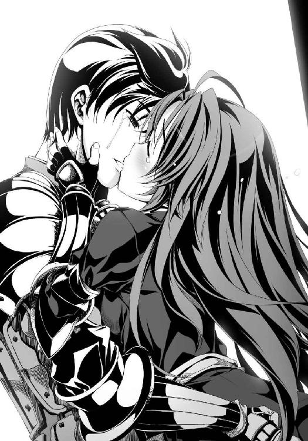
取り残された明智光秀は、光の塔を無言で見上げていた。
いつかは残酷な真実に向き合わなければならないという、ひそかな覚悟も予感もあった。
もしもこの予感が現実になれば、信奈の天下布武の夢は潰えるのではないか、とも。
信奈への忠節と良晴への思慕との間で引き裂かれる自分の心はどうなってしまうのだろう、とも。
だが、これは、あまりにも──。
一益は、一心にロザリオを握りしめて膝を折り号泣している少女にも、そして天へと連なる光り輝くその塔を──まばゆい光の中で互いをかばうように抱きしめあう二人をただ凝視していることしか許されない惟任日向守明智十兵衛光秀にも、かける言葉を見つけることができなかった。
「孫市さま！」
「織田信奈さまは、なにも、お捨てにならないと──」
「相良良晴と添い遂げると」
「天下万民の前で、そう、宣言なされました！」
「撃ちますか、それとも」
「この国の未来は、孫市さまのお心ひとつで決まります」
信奈の頭に照準を定めて身じろぎひとつせずに「その時」を待ち受けていた雑賀孫市は、この時にわかに、「～～～!?」と声にならない声を発しながら──。
八咫烏の引き金を、引いた。
一発の大轟音が、天から伸びていた光を、消した。
竹中半兵衛たちとともに有馬の空を凝視していた黒田官兵衛は、この奇跡の幕が何者かの手で不意に下ろされたことに気づくと、（ああ）と万感の思いをこめて嘆息した。
「『女帝』のタロットが示した未来は、適中した──」
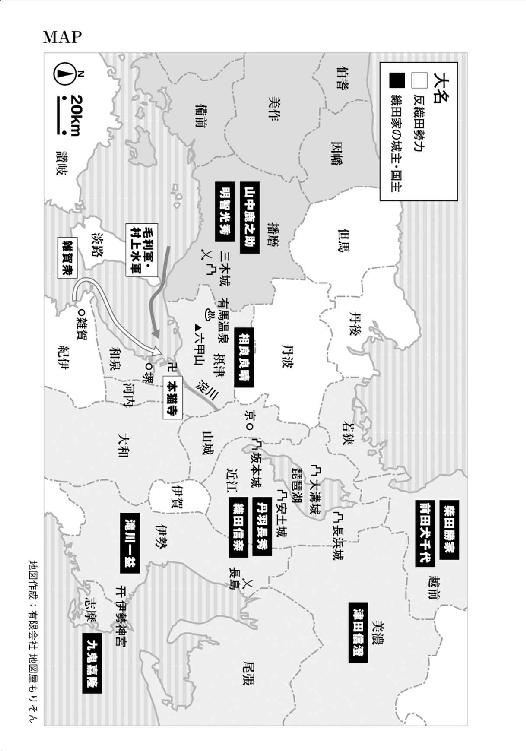
あとがき
ひさびさの「織田信奈の野望」本編をお届けします。気がつけばとうとう大台の10巻です。ありがとうございます！
あいだに梵天丸の外伝を挟んだので、この巻はこれまで登場したキャラクターがたくさん出てきます。「お、思いだしてください......忘れないで......くすんくすん」という意味合いもありますが、この巻が「織田家の天下布武の戦いが全国規模に広がっていく」というストーリー上の区切りにあたるためでもあります。
あれ、誰だっけこの武将？ とふと疑問を感じられましたら、既刊を再びチェックしていただければ幸いです。
さて毎巻恒例になっている取材ですが、今回は戦場ではなく、兵庫の有馬温泉へ行ってきました。
ただ温泉に入りたかっただけじゃないのかという話もありますが、まず思っていたよりもアクセスしやすくて驚きでした。新幹線の新神戸駅から地下鉄に乗って六甲山の地下に掘られたトンネルを抜けると、そこは有馬でした。
次に、「太閤橋」や「ねね橋」など秀吉とねねにゆかりの観光名所ができていて、有馬は今でも秀吉とねねの町なのだなあと感激しました。
もちろん、有馬ならではの金泉はいかにも薬湯という濃度で、お肌に効きそうでした。
秀吉はこの有馬に十数回も出かけて温泉を満喫したそうですから、よほど気に入っていたのでしょう。
とはいえ、残念ながらねねグッズを発見することはできず、みやま先生へのおみやげは「有馬温泉」とでかでかと書かれているＴシャツに決定しました。
あと......黒田官兵衛さん、ＮＨＫ大河ドラマの主演決定おめでとうございます！
これで悲願だった「黒官一流」の証明ができますね！
春日の予想では、ドラマ中盤に退場する竹中半兵衛の人気が爆発して「半兵衛を死なせないで」嘆願メールが集まるんじゃないかなあと思いますが。
が、がんばりましょう官兵衛さん！
最後になりましたがいつも入魂のイラストを描いていただいているみやま零先生、なぜか某週刊誌で「信奈」とメディアミックスについて取材を受けていた担当のＫさん、そして「織田信奈の野望」シリーズを応援してくださっている読者の皆さまに今回も厚く厚くお礼申しあげます。
春日みかげ
著者
春日みかげ（かすが みかげ）
取材と称して有馬温泉でしばしの休暇をいただいてきました。温泉街と聞くとひなびたイメージがありましたが、平日の昼間から大勢の人がいて驚きました。どうやら、神戸や大阪の都市部から日帰りで温泉に来られるそうです。う、うらやましい。
イラスト
みやま零（みやま ぜろ）
仕事がら腰痛なり肩こりなり常につきまとっているもので、ときどき有馬温泉に浸かりに行きたくなります。日帰りでも行けなくはないのですが、おそらく行くのに疲れてむしろ倒れます。何より背中を流してくれる幼女もいません。がっかりです。
ファンレター、作品の感想をお待ちしています
＜アンケートページはこちら＞
https://emob.jp/m/fi.php?a=gabunko&d=6&i=4988
（このページのスクリーンショットを撮って、ＱＲコードリーダーアプリで読み取ればアンケートページにアクセスできます）
〈あて先〉
〒１０６－００３２
東京都港区六本木２－４－５
ソフトバンク クリエイティブ（株）
ＧＡ文庫編集部 気付
「春日みかげ先生」係
「みやま零先生」係
http://ga.sbcr.jp/
ＧＡ文庫
織田信奈の野望１０
春日みかげ
発行人 小川 淳
発行所 ソフトバンク クリエイティブ株式会社
〒１０６－００３２
東京都港区六本木２－４－５
装 丁 株式会社ケイズ（大橋勉／彦坂暢章）
組 版 アーティザンカンパニー株式会社
印刷・製本 中央精版印刷株式会社
２０１３年３月３１日 初版第一刷発行
２０１３年５月１日 電子第一版発行
©Mikage Kasuga ISBN 978-4-7973-7234-2